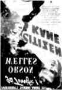
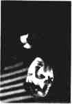

Büyülü Fener Can Dündar ___________________________________
1
__________________________________
BÜYÜLÜ FENER
Can Dündar
İmge Kitabevi
_____________________________________________________________________
WWW.MAXIMUMBILGI.COM
Büyülü Fener Can Dündar ___________________________________
2
__________________________________
Beni sinemayla tanıştıran
sevgili hocam Prof.. Dr. Mahmut Tali Öngören'in
anısına...
_____________________________________________________________________
WWW.MAXIMUMBILGI.COM
Büyülü Fener Can Dündar ___________________________________
3
__________________________________
İçindekiler
Sadakat-siz misiniz?
Ruhumuzun Köprüleri
Kesişen Vücutlar
Yeni Senaryo
Pearl Harbor Neden Tutmadı?
Paris-Teksas-Türkiye
Çikolata
Yerli Othello
İhanet
"Ağlama!
Savaşın Yönetmenleri
Hayat Güzeldir
Yüzük Kardeşliği
Kıymetlimiz
Kahramanlar Devrinin Sonu
Yıldız Savaşları
Asıl "Karınca Z" Yasaklanmalı!
Birkaç İyi Adam
Silici
Azraille Randevu
"Sorry!.."
Perdedeki Türkiye
Alan Parker da Pişmandı
Kızım Olmadan Asla!
Batı Duyguyu Arıyor
Atatürk Filmi mi? Çekin de Görelim!
Geç Gelen "Yol"cu
Masumuz, Hepimiz
Uzun Sürmüş Bir İntihar
"Bay E" Ben miyim?
Arzu Dolu Bir Gece
"Bu Yollar Uzak, Pornolar Tuzak Bana!
Kendi Taklidini Oynayan Kadın
Türkan Şoray
Son Şarkı
Rosebud
Feri Sönmüş Yıldızlar
Yanlış Zaman Yanlış İnsan
Parayla Saadet
Şaban'ın Ölümü
İki Binaya Ağıt
Bir Sinemanın Taziye Defteri
Büyülü Fener
_____________________________________________________________________
WWW.MAXIMUMBILGI.COM
Büyülü Fener Can Dündar ___________________________________
4
__________________________________
Sadakat-siz misiniz?
Harikulade bir ev... Piyanonun üstünde on bir yıllık ideal bir evliliğin saadet fotoğrafları... yakışıklı ve anlayışlı bir eş... dokuz yaşında bir çocuk... köpek... tenis dersleri... türlü çeşit hobiler...
"Bir kadın daha ne ister?"
"Sadakatsiz" filmi bu soruyu kadınların kafasına kakıyor.
Hem de öyle kurnazca yapıyor ki bunu, seyreden kadınlar başroldeki Connie'nin yerinde olmaya can atsın diye koca rolünü
"dayanılmaz" Richard Gere'e oynatıyor.
Ve Connie, bütün bunları riske atıp eşini (o güzelim adamı) bir serseriyle aldatıyor.
***
Adrian Lyne'in ihanet edenler ya da aklından geçirenler için çektiği bir korku filmi "Sadakatsiz"...Lyne, daha önce "Öldüren Cazibe"de aldatan erkeğin başına gelebilecekler konusunda gözümüzü korkutmuştu.
Tehdit sırası kadınlarda...
Rüzgârlı bir gün... sokakta "hayta"yla tesadüfi çarpışma... dizden yaralanma...
tedavi için eve davet... "rüzgâra kapılma"... mantoyu çıkartırkenki ilk sıcak temasın baş döndüren ürpertisi...
Evde ütü bulaşık, burada Fransız âşık; evde çocukla ödev, burada çıtırla peşrev...
Connie, kalsa eşine ihanet edecektir; kalmasa kendine...
Kalır.
"Serseri"nin kadın ayartmakta kullandığı rubailer kitabında Ömer Hayyam "Bu an, senin hayatın" demektedir.
"O an" için hayatını gözden çıkarır.
"Hata yaptım" endişesine "Şeytan"ın müsekkini hazırdır:
"Hata yoktur... yaptığın ve yapmadığın şeyler vardır".
Dönüş treninde gözlerinde şehvetle nedamet birlikte parıldar.
Evde ise yalanın o soğuk tebessümü yerleşir yüzüne...
***
Artık âşıktır.Bedeninde erotik iç çamaşırları, setinde "o"nun müziği, dilinde onun şiiri, aklında onun bedeni...
_____________________________________________________________________
WWW.MAXIMUMBILGI.COM
Büyülü Fener Can Dündar ___________________________________
5
__________________________________
Orta yaşlı bir kadın için "Yaşlanmadım, hâlâ arzulanıyorum" müjdesidir bu...
Nicedir çıktığı annelik mertebesinden kadınlığa dönüş sinyalidir -ki bir süre sonra çocuğunu okuldan almayı unutturur ona...
Sonra gelsin, evden çıkma bahaneleri... söylendikçe yenisini çağıran yalanlar...
ansızın bastıran ağlama nöbetleri... bir maskeyle yaşamanın katlanılmaz ağırlığı... "Kirlenmişliği"nden, devamlı bulaşık yıkayarak arınmaya çalışan bir kadının zavallılığı...
Bitirmek istedikçe baştan başlayan, koca iyi davrandıkça hepten yaralayan bir ilişki...
***
"Sadakatsiz", cazibesine kapıldığımız "o ân"ın, cehennemin giriş kapısı olduğunu anlatıyor bize...Richard Gere'i, karısının içine giren şeytanı çıkartan bir rahip kılığına sokuyor.
"Alafranga bir recm sahnesi" kurup, evli kadını ayarlan çapkın erkeği, kocaya taşlatıyor.
Sofra toplamaya da yardım eden, "ailesine her şeyini vermiş adam"ı yücelterek kadını harcıyor.
Filmin sonuna ustaca yerleştirilen pişmanlık sahnesinde Connie, ilk tanışmada
"serseri"ye kapılmayıp taksiyle eve döndüğünü hayal ediyor.
"Keşke buralarda kırıştıracağıma evimin kadını olup oğlumun beslenme torbasını hazırlasaydım" demeye getiriyor.
Lakin -tabii ki- son pişmanlık fayda etmiyor.
***
Dağılan Amerikan ailesi için bir "Yuvaya dön" çağrısını andıran filmin kapanışjeneriği akarken "Aileden Sorumlu Devlet Bakanlığı'nın katkılarıyla..." yazısını
aradı gözlerim...
"Erkek yönetmen", ihaneti anlamak, aileyi sorgulamak gibi tehlikeli sulara girmeyip, meseleyi kadının şehvet tutkusuna indirgedi ve filmini "Nefsinize kapılmayın, akıbetiniz feci olur" tembihiyle bitirdi.
Bense çıkışta tembihi bozup nefsimin sesine uydum; "Serseri"nin ruhuna şarap içip Hayyam okudum:
"Hayyam, şarap iç, sarhoş olmak ne hoş / Sevgilin de varsa, sarılmak ne hoş, / Er geç sonu yokluk madem bu dünyanın, / Yok say kendini, bak, var olmak ne hoş!"
_____________________________________________________________________
WWW.MAXIMUMBILGI.COM
Büyülü Fener Can Dündar ___________________________________
6
__________________________________
Ruhumuzun Köprüleri
Zordur köprüleri yakmak...
Sıradan sabahların mahmurluğuna alışmışlar
için, bir şafak vakti aniden geçmişinden ve
bugününden vazgeçmek ve içinde her nasılsa
saklanmayı başarmış bir yarın heyecanının
kanadına tutunarak havalanmak cesaret ister.
Kurulu düzen öylesine rahat, öylesine huzur
doludur ki, ruhuna gömülü çocuğu, yıllarca kınında beklemiş keskin bir kılıç gibi uyandırıp dörtnala ileri atılmak, yaman bir karara dönüşür.
Zordur insanın onca zaman, bunca emekle kurduğu ne varsa hiçe sayıp, mağlup ama mağrur bir komutan edasıyla yeni seferlere niyetlenmesi... Bugüne yenik düşenler, yarım sadece hoş bir hayal olarak düşleyip, dünde yaşar. Bedel ödemeyi göze alanlar ise, yelkenleri atlastan gemilerle, arkalarında külden köprüler bırakarak meçhul bir istikbale doğru dümen kırar.
Yakılan sırat köprüsüdür. Geçer ve orada kalırsınız: cennetse cennet, cehennemse cehennem... dönüşü yoktur...
***
Clint Eastwood'un filmi "Madison Kasabasının Köprüleri" çoğumuza bir kez daha ruhumuzun derinliklerinde saklanan o yakılası köprüleri hatırlattı. Hayatı, sohbetsiz sofralara yemek hazırlamaktan ibaret, kendi halinde bir ev kadınının günün birinde kapıyı çalıveren bir yabancıyla yaşadığı dört günlük "yasak ilişki", içimizdeki şeytanın kapılarım çaldı. 40 yıl kendini, kendinden bile saklamış bir kadının, dört gün içinde kendisiyle tanışması ve 40 yıldır ıskaladığı bir mutluluğu bir "yabancı"da yakalaması, dünyanın dört bir yanındaki izleyicilere pek tanıdık bir duygu gibi geldi.Sinema çıkışında ellerindeki küçük mendilleri gizli gizli göz pınarlarına bastıran hanımlarla, yaşlı gözlerini kara gözlüklerinin ardına saklamaya çalışan beyler, yasak bir ilişkiye gözyaşlarıyla onay veriyorlardı adeta...
Yol boyu eşler birbirlerini yokladı, ihmal edilmiş heyecanlar çıkarıldı naftalinli sandıklardan... Kimi, köprüleri yeniden kurmanın yollarını aradı, kimi yakma vaktinin gelip de geçtiğini düşünürken...
Kimi evlerde eski aşklar tazelendi ve yeni köprüler kuruldu, ihmal edilmiş
diyaloglardan... Kimi evlerde ise yeniden sohbetsiz sofralara dönüldü. Rahat oturma odalarının kurulu düzenlerine sarılanlar, heyecan dolu bir aşkı beyin-lerinde büyüterek kaşıkladılar yemeklerini...
... ve ertelediler, ruhlarının köprülerini kavuracak bir heyecan ateşini; o ateşin ancak cesetlerini yakacağı güne kadar...
***
Zordur köprüleri yakmak..._____________________________________________________________________
WWW.MAXIMUMBILGI.COM
Büyülü Fener Can Dündar ___________________________________
7
__________________________________
Meçhul bir istikbal uğruna bugününden vazgeçmek korkutur insanları... Mazinin hatıraları taze, dostluklar sıcak, kurulu düzen güvenlidir. Nitekim filmin kadın kahramanı da kendi köprülerini yakmaktan son anda vazgeçer. Ruhunun köprüleri yerine, cesedini ateşe vererek, bir imkânsız aşkı, küllerin buluştuğu öbür dünyaya erteler.
Köprüleri yakmak cesaret ister... ama kararsızlanırken köprünün karşısından ışıl ışıl yeni bir hayat umudu inatla gülümser insana... Bir elle bugünün yerleşikliğine tutunurken, öbürüyle yarının macerasına uzanmaya çalışır, arada çırpınır durursunuz.
Belki orayı bilmemek, bilmekten iyidir.
Bilip de gidememek en beteridir çünkü...
_____________________________________________________________________
WWW.MAXIMUMBILGI.COM
Büyülü Fener Can Dündar ___________________________________
8
__________________________________
Kesişen Vücutlar
Son yıllarda izlediğim en iyi sevişme sahnesiydi "Kesişen Yollar"daki...
Bu kadar gerçek olanını bir "Postacı Kapıyı iki Kez Çalar"da masa üstünde, bir de "Paris'te Son Tango"un boş salonunda (hani şu tereyağlı sahnede) görmüştük. İkisinin de müthiş bir
"sahiciliği" vardı.
***
Kesişen Yollar'dakine gelince...Neredeyse "Halle Berry'ye bu sahne yüzünden Oscar verilmiş" dedirtecek kadar güçlü bir sahne bu...
Bütün ömrünü, başkalarının hayatına zincirlenerek geçirmiş, duygusal olarak bastırılmış, zihinsel olarak kıstırılmış iki insanın bir anda bütün önyargılarını, yasaklarını elbiseleriyle birlikte soyup tabularından azade olduktan sonra yalnızca bedenen değil, ruhen de çırılçıplak seviştikleri bir an...
Bir kadının hiç tanımadığı bir erkeğe "Beni rahatlat" diye hıçkırarak yalvarmasıyla başlayan ve ikisinin, yılların susuzluğunu giderircesine ihtirasla, tadını çıkara çıkara ve hayvani bir cüretle birleştikleri bölüm...
Acıyla saadetin, nefretle tutkunun, diple zirvenin ne kadar yakın olduğunu, bilinçaltının ırk, renk, koşul tanımadığını apaçık ortaya koyan bir unutulmaz sahne...
***
Filmin yönetmeni Marc Forster, Nerve dergisinde bu sahnenin çekim öyküsünüanlatıyor:
Billy Bob ile Halle Berry'ye çekim öncesi kafasındakini açık açık anlatmış.
Filmin iki kahramanının o sahneyle yıllardır içlerinde bastırdıkları her şeyi açığa vurduklarını izah etmiş.
Berry, çekimde tamamen rahat olabilmek için bir öneri getirmiş:
"Ya bana her bir açıyı tek tek baştan anlatırsın ya da kurguda son söz benim olur" demiş.
Tasarlanmış sahneler filmdeki bütün samimiyeti yok edeceğinden yönetmen ikincisine razı olmuş; Berry'ye kurguda beğenmediği hiçbir sahnenin filmde yer almayacağına dair söz vermiş.
Bunun sağladığı özgürlükle çekmişler o bölümü...
Sonra izleyip neyin kalıp neyin çıkacağına birlikte karar vermişler.
Ve sahne çok daha doğal olmuş.
***
_____________________________________________________________________WWW.MAXIMUMBILGI.COM
Büyülü Fener Can Dündar ___________________________________
9
__________________________________
Film biraz tesadüfler üzerine kurulu ve üç kuşak sürmüş bir ırkçılığın aniden yıkılıvermesi pek de inandırıcı görünmüyor.
Ancak bahsettiğim sevişme sahnesindeki performans öylesine güçlü ki, insan yüz yıldır kurulu duran bir zembereğin boşalma ânına benzer bu tür bir ânın -sadece bir filmin değil- hayatın da seyrini değiştirebileceğine inanabiliyor.
Çıkışta şunu düşündüm:
Her bir sahnesini yüzde yüz kontrol altında tutarak yaşadığımız bu hayatı
sonradan istediğimiz gibi montajlayabileceğimizi bilsek, acaba rolümüzü daha doğal, daha arzulu, daha gerçekçi, daha iyi mi oynardık?..
_____________________________________________________________________
WWW.MAXIMUMBILGI.COM
Büyülü Fener Can Dündar ___________________________________
10 __________________________________
Yeni Senaryo
"Aşk, hiçbir zaman pişman olmamaktır" demişti zengin, genç delikanlı, fakir, güzel kızın gözlerinin içine bakarak...
Aşkları, aralarındaki sınıfsal farkı aşmaya yetmiş, ancak o amansız hastalığı yenmeye yetmemişti.
Çağımızın Romeo'su, Jülyet'i kollarında can verdikten sonra ıssız bir pistin karları arasında gözyaşı
dökerken, bizler de ilk aşklarımızın gözlerindeki damlacıkları küçük buselerle silerek terk etmiştik sinemayı...
"Aşk Hikâyesi", o dönem hepimizin hikâyesi olmuştu.
***
2000'de "Aşk Hikâyesi" 30 yaşına bastı.Bu unutulmaz filmin iki başrol oyuncusunun, Ryan O'Neal ile Ali McGraw'ın 30
yıl kokteylinde çektirdikleri fotoğraflar yayınlandı.
Aman Tanrım!.. O incecik zarif kızdan sadece tanıdık bir tebessüm; yakışıklı
genç çocuktan ise ringlere veda etmiş bir ağır sıklet boksörü görüntüsü kalmış
geriye...
Onların, gözyaşları içinde ayrıldığınız sinema salonunun perdesinde öylece değişmeden kalacaklarından neredeyse emin olduğumuzdan, bu yorgun fotoğraf, eski bir aşk hikâyesi gibi burktu içimizi... Kırışan yüzlerinde, buruşan yüzlerimizi gördük; ağaran saçlarında, seyrelen saçlarımızı...
Çevirdikleri filmin Kerime Nadir imzalı "fakir kız-zengin oğlan" senaryolarının iyi soslandırılmış bir yabancı versiyonundan ibaret olduğunu, o yıllarda hiç fark etmemiştik. Filmin yapımcılarının, daha senaryo yazılırken "filmin sonunda kız mı ölsün oğlan mı" diye kamuoyu araştırması yaptıklarım ve "kız ölürse gişe garanti" sonucuna ulaşınca buna göre senaryo siparişi verdiklerini ise nice sonra öğrenecektik.
***
1970 yılında "Aşk Hikâyesi" filmini, sevgilisine "Hiçbir zaman pişman olmama"sözü vererek terk eden romantiklerin çocukları, bugün "aşk neredeyse daima pişman olmaktır" diyen "Amerikan Güzeli"nin önünde kuyruk oluyorlar.
30 yılda aşk filmlerinde "kanserojen bir müptelalık"tan "travmatik bir gerçekçilik"e sıçradık.
New York Times, bu sıçramanın son birkaç yılda gerçekleştiğini haber veriyordu.
Artık film seyircisi, sonunda ne olacağını iyi bildiği filmlerin konforu yerine, sürpriz filmlerin beklenmedik finallerini tercih etmeye başlamıştı. "Amerikan Güzeli", "Altıncı His", "Matrix" bu eğilimin örnekleriydi.
_____________________________________________________________________
WWW.MAXIMUMBILGI.COM
Büyülü Fener Can Dündar ___________________________________
11 __________________________________
Bu değişimin nedeni, artık sayısı yüzlere varan yerli yabancı televizyon kanallarında, videoda, DVD'de ve internette çok daha fazla film izleyen seyircinin, mevcut şablonlardan sıkılıp yenilik araması olsa gerek...
"Amerikan Güzeli", diğer film yapımcılarının uzaydan gelen yaratıklarda, mafyaya kafa tutan süper kahramanlarda, insan yiyen korkunç canavarlarda aradığı bu yeniliği çok daha yakın bir yerde buldu: Seyircinin iç dünyasında...
Film, perdeyi koca bir aynaya dönüştürerek sıradan Amerika'ya kendisiyle yüz yüze gelme ve hayatıyla hesaplaşma şansı verdi. On yıl önce kimsenin finanse etmeye cesaret edemeyeceği bu senaryoyla hem müthiş bir gişe gelirine, hem de dizi dizi Oscar heykellerine kavuştu.
Hiçbir şey kendi hayatımızdan daha şaşırtıcı değil çünkü... Anlaşılan o ki, yeni yüzyılın "Aşk Hikâyeleri"ni yazacak olanlar, keşif gezilerini uzak gezegenlere değil, insanın iç dünyasına doğru yapacaklar. Eski şablonlarını yitiren Hollywood kendisine yeni formüller yaratmak zorunda kalacak. Ama film endüstrisinin sihirbazları, yeni duruma çoktan adapte oldular bile... Sonunu tahmin ettiği filmleri özleyen geleneksel seyirci ile sürpriz seven yeni kuşakları aynı pazarda buluşturmak için dâhiyane bir plan geliştirildi.
Yeni DVD filmler seyirciye final için birkaç seçenek sunuyor.
Filmin sonu yaklaşınca videonuzun ekranında beliren seçeneklerden ("Kız ölsün", "Oğlan ölsün" vs.) birini işaretliyorsunuz.
Ve film, sizin istediğiniz finalle sona eriyor.
Yıldızları ve seyircileri yaşlansa da Hollywood, her sürprize karşı ayakta durmayı biliyor.
_____________________________________________________________________
WWW.MAXIMUMBILGI.COM
Büyülü Fener Can Dündar ___________________________________
12 __________________________________
Pearl Harbor Neden Tutmadı?
"Titanik", çağımızın telaşlı-yorgun âşıklarının, güvertede koklaşman eski moda aşk hikâyelerine ne kadar susadığını
göstermişti bize...
"Pearl Harbor" Titanik seyircisinde keşfedilen o susamışlığa yöneldi. Ama sonuç, gişe önünde büyük bir yıkım oldu.
Pahalı bir prodüksiyonla çekilen ve tantanalı bir kampanyayla vizyona sokulan "yılın filmi", hiç iş yapmadığı gibi, alay konusu oldu.
Bir Amerikalı eleştirmen "Film üç saat sürüyor, çünkü hep ağır çekimde ilerliyor" diye yazmıştı. Bir başkası "Hâlâ izlemediyseniz videosunu deneyin, ileri sararak daha kolay izleniyor" dedi.
***
Ben yine de sinemada izlemeyi tercih ettim ve sinema eleştirmenlerinin sözünüdinlemediğime pişman oldum.
Titanik'ten çok Top Gun'ı çağrıştıran, aşkla soslandırılmış bir milliyetçilik filmi...
Japonlar, film başladıktan l saat 20 dakika sonra saldırıyor ve ardından 40
dakikalık bir "Havai fişek gösterisi" geliyor. Kara bakışlı Japonlar, aydınlık yüzlü Amerikalıları gafil avlıyorlar, neyse ki, "bizim çocuklar" çabuk toparlanıp hiç olmazsa bir-iki Japon uçağı indiriyorlar.
"Bizim çocuklar" dediğim başroldeki jet pilotu iki arkadaş...
"Esas oğlan", hemşireye âşık oluyor. Sonra harbe gidiyor. Uçağı düşüyor. Esas oğlanın en yakın arkadaşı, esas oğlanın kız arkadaşına kara haberi veriyor.
"Üzüntüden" uçağın hangarında sevişmeye başlıyorlar.
Fakat heyhat!..
Tam işi pişirmişken esas oğlan, "Ben aslında ölmemiştim" diye çıkageliyor.
Durumu görünce üzülüyor biraz tabii... En yakın arkadaşıyla "it dalaşı"na girişiyor. Sonra konuyu kapatıyor, ikisi birleşip Japonlarla it dalaşına girişi-yorlar. Bu sefer arkadaşı "hakkatten" ölüyor.
Film bitiyor.
***
Film Critic'te yazan Christopher Null "kolektif hafızamızın Disneyleştirilmesi yönünde yeni bir adım" diye tanımlıyor filmi...Eleştiriler daha çok filmin bildik klişelere başvurmasında, tarihsel gerçeklikten uzak olmasında, savaşın dehşetini sıradan bir fon olarak kullanmasında yoğunlaşıyor.
Ancak geçen gün konuştuğum bir sinema ustası, Pearl Harbor'un gişe yenilgisine daha ilginç bir yorum getirdi:
_____________________________________________________________________
WWW.MAXIMUMBILGI.COM
Büyülü Fener Can Dündar ___________________________________
13 __________________________________
"Sinema seyircisi perdedeki kahramanla özdeşleşmek ister. Burada kahraman hangisi: En yakın arkadaşının öldüğünü öğrenince sevgilisiyle yatan genç mi?
Sevgilisini kaybettikten sonra onun en yakın arkadaşıyla kırıştıran kız mı?
Yoksa sevgilisine el koyan arkadaşını 'Neyse olmuş bir kere' diye affeden esas oğlan mı?.."
Aynı usta, bir başka örnekle güçlendirdi tezini: "Ghost filmi niye tuttu? Çünkü
kahraman, öldükten sonra bile sevdiği kıza sarkan adamın yakasını bırakmadı".
Türk seyircisi de Eşkıya'da otuz beş yıl sevdiği adamı bekleyen suskun kadını
sevmemiş miydi?
***
Peki gerçek hayatta var mı böyle aşklar?..İnsanlar bir sevgiliyi otuz beş sene bekliyorlar mı?
Bunu sorunca, "işte sinema bunun için var" dedi Usta;
"İlk fırsatta arkadaşının aşkına sulananların çoğaldığı bir çağda seyirci, hayatında tadamadığı şeyi perdede görüp mutlu olmak istiyor".
Beyazperde bir aynaya dönüşüp bize bizi gösterdiğinde buna tahammül etmek zorlaşıyor.
O yüzden bir gemi güvertesinde rüzgârı kucaklayarak sarılan bedenler, otuz beş
yıl beklenen sevgililer, ölümden sonra bile yaşayan aşklar sarmalıyor seyirciyi...
Hayatın içindeki aşk azaldıkça, perdedeki hepten kıymetleniyor.
_____________________________________________________________________
WWW.MAXIMUMBILGI.COM
Büyülü Fener Can Dündar ___________________________________
14 __________________________________
Paris-Teksas-Türkiye
Paris, Teksas filminin girişindeki o sahneyi hatırlıyor musunuz?
Kırmızı şapkalı, hırpani kılıklı bir adam, ıssız bir çölün ortasında kararlı adımlarla bir meçhule doğru yürümektedir. Yolda çevirenlerle konuşmaz. Hiçbir soruya cevap vermez. Adını
sorarlar; söylemez. Ama, hep bir yerlere ulaşmak istiyormuş gibi yürüyüşünü sürdürür.
Adamın adının Travis olduğunu, 4 yıl önce ortadan kaybolduğunu ve terk ettiği ailesini aradığını sonradan öğreniriz.
Travis'in o suskun yürüyüşü, bana hep hafızasını kaybetmiş ve nereye gittiğini bilmeyen bir ülkenin kendini arayışını anımsatır. Kızgın bir çölde, yarı baygın, mazisini arayan bu adamın öksüzlüğünde hep kendimizi bulurum.
Travis, ceketinin cebinde çıplak bir arazinin buruşuk fotoğrafım taşır.
Teksas'taki Paris kasabasında satın aldığı bir arsanın resmidir bu... Annesi ve babası orada tanışıp evlenmişlerdir. Belki Travis de ailesiyle yeniden o toprakta birleşmeyi ummaktadır. "Paris-Teksas" adresi, Travis için bir düş ülkesidir.
Cebinde sımsıkı sarıldığı o fotoğrafta, mutlu bir mazinin ve umut dolu bir geleceğin resmi vardır. Ütopyalarımız Travis'in cebinden çıkar...
Sonra küçük yaşta terk ettiği oğlunu (Hunter) bulur Travis... Ama babasının ardından, annesi de evi terk ettiği için amcasının yanına sığınan Hunter, aniden çıkıp gelen bu adama yabancı gözlerle bakar. Travis, onun soğukluğundan üşür.
Yıllar önce aile kamerasıyla çektikleri filmleri birlikte seyrederler. Geçmişin izleri bağlar baba ile oğulu birbirine...
Ve Travis'in yürüyüşü sürer. Bu kez oğluyla birlikte, karısını Qane) aramaktadır.
Jane'i, Houston'ın arka mahallelerinde kötü bir binada bulurlar. Para karşılığı
soyunarak hayatım kazanmaktadır. "Peep-show" denilen bir gösteride, bir yanı
ayna olan camla bölünmüş odalarda yüzünü görmediği tek kişilik seyircisine striptiz yapmaktadır. Travis, bu odalardan birine girer. Az sonra camın öte yanında karısı belirir. Travis, filmin finaline yaklaşırken ilk kez bu sahnede konuşmaya başlar. Diyafon aracılığıyla konuştuğu karısına bir evlilik hikâyesi anlatır. Jane, cama baktığında müşterisini değil, aynadaki kendi yansımasını
görmektedir. Ama sesin sahibini tanır. Ve o andan itibaren, yeniden buluşan bir çiftin yüzleri birbirlerine dönük olduğu halde birbirlerini görmeden hesaplaşmalarına tanık oluruz.
İzlediğimiz şey, izbe dünyaların içinde yaşadığımız korkunç iletişimsizliktir aslında... Bölük pörçük ilişkilerde o kadar yakınken, bu kadar uzak düşebilmemize şaşarız. Biz de perdeye bakarken Jane gibi kendi kırık-dökük hayatlarımızın öyküsünü dinler ve orada kendi siluetlerimizin yansımalarını
görürüz. Baktığı halde görmeyen, konuşsa da anlaşamayan, terk edilmiş ve yorgun bir toplumun izdüşümleri yansır "Paris, Teksas"ın hüzünlü finalinden...
Yine de maziden kalma siyah-beyaz güzel anıları ve geleceğe ilişkin ütopyaları
vardır.
_____________________________________________________________________
WWW.MAXIMUMBILGI.COM
Büyülü Fener Can Dündar ___________________________________
15 __________________________________
Nihayet Travis, Jane'i oradan alıp, oğlunun beklediği otele götürür. Ana-oğul kucaklaşırken, kamera, Travis'in arabasıyla uzaklaştığını gösterir. Son karede yolun kenarında bir reklam panosunda şu sözler okunur:
"Birlikte başarırız..."
Başarının, hiç de reklamlarda anlatıldığı kadar kolay olmadığını düşünerek çıkarsınız filmden... Ütopyalar, benliğimizin uzak düş ülkeleridir ve oraya varabilmenin yolu önce kendini bulmaktan geçer. Şimdi Travis de karısı ve oğlundan sonra kendisinin peşine düşecek ve yolda son hesaplaşmasını
kendisiyle yapacaktır.
***
Hafızasını yitirmiş, evlatlarını terk etmiş, umutlarını kaybetmiş ülkenin insanlarına "Paris, Teksas" adresini şiddetle tavsiye ederim.Cebimize ütopyalarımızı doldurarak çıktığımız ve nereye doğru olduğunu bir türlü kestiremediğimiz bu öfkeli yürüyüşte ne fazla iyimser olmaya, ne de hepten karamsarlığa kapılmaya hakkımız var.
Bir gün gelecek ve dilimiz çözülecek. Yalnız yolculuğumuzun en umulmadık yerinde... izbe bir köşede... bir ayna karşısında... kendimizi ve yitirdiklerimizi buluvereceğiz karşımızda...
ve konuşmaya başlayacağız.
_____________________________________________________________________
WWW.MAXIMUMBILGI.COM
Büyülü Fener Can Dündar ___________________________________
16 __________________________________
Çikolata
Eskiden şeytan denince, kızıl boynuzlu, çatal
sakallı, zıpkın kuyruklu bir cehennem zebanisi
gelirdi akla...
Dipsiz fırını andıran ağzından ecel zehirleri saçan bir iblisti o...
Bizi günaha çağıran bir provokatör... lanetli bir ecinni...
Modern zamanlar, kuşkuculukla birlikte geldi.
Endüstrileşmeyle küçük dünyasının sınırlarını aşan insanoğlu, göç yolunda önce inançlarını kaybetti. Dine ait ne varsa sorgular oldu.
Böylece romantizm çağında kiliseye karşı direnişin kahramanına dönüştü
şeytan... ve asırlardır kilit altında tutulan bazların zincirini çözüverdi.
Yasakların yerine tutkuları koydu; acıların yerine zevkleri...
Daha önemlisi, insanoğlu şeytanın ayak izlerini gök kubbede değil, kendi içinde aramaya başladı. Cehennemde sandığını, bilinçaltında buldu.
Aslında çatışmanın tarafları iki omzumuza konmuş melekle şeytan değil, her birimizin içinde kök salmış iyilik ve kötülük duygusuydu.
Korkular yatıştı, modernite iblisle barıştı ve insanlık "romantik şeytan"la tanıştı
(J- Burton Russell, Modern Dünyada Şeytan, Kabalcı / 2001).
***
"Çikolata" filmi, kırmızı pelerinlere sarılmış bekâr bir anneyle kızının küçük bir kasabaya gelmesiyle başlıyor.Ana-kız, bağnaz kasabanın muhafazakâr dünyasında, tam da büyük perhizin ortasında, nefis bir çikolata dükkânı açıyorlar.
Ahalinin önderleri önce kuşkuyla, giderek öfkeyle bakıyor onlara... Lakin dükkândan yayılan kakao kokusu öyle davetkâr, öyle tahrik edici ki, bir süre sonra sabır taşlan çatlıyor; mümin kasabalılar bu günah çağrısına uyup birer ikişer dükkâna damlamaya başlıyor.
Ve kırmızı pelerinli cazip kadın, her gelen müşteriye, kendi damak zevkine, ruh haline uygun bir çikolata armağan ederek, onların bilinçaltında saklı kalmış
aşkı, coşkuyu, nefreti, şehveti ortaya çıkarıyor.
***
Bu çağdaş peri masalının da gösterdiği gibi, güzel şeyler hep yasaktır nedense; ve bütün yasaklar güzel...İnsanlık tarihi denen şey, insanoğlunun günaha karşı verdiği bir meydan muharebesi, bir vicdan muhasebesidir.
_____________________________________________________________________
WWW.MAXIMUMBILGI.COM
Büyülü Fener Can Dündar ___________________________________
17 __________________________________
Lakin ilk isyan, ilk insan kadar eskidir.
Adem'le Havva'nın paylaştığı ilk elmada başlar, şeytanla suç ortaklığımız...
Ah o kahrolası merak yok mu?..
O ağaçta parlayan yasak elmayı dişleme tutkusu... Yaldızlı bir paketin altından sızan dayanılmaz çikolata kokusu...
Ah o baştan çıkarıcı vaatlerle çıkagelen ve bizi hiç tanışmadığımız hazlara davet eden kırmızı pelerinli iblisler...
En umulmadık yerde hayatımıza girer, ağzımıza bir parmak kakao çalıp o güne dek aziz, leziz, asil, sefil bildiğimiz ne varsa unutturabilirler.
Damağımıza yapışan o hınzır tat, arsız bir şeytan gibi kanımıza karışıp yoldan çıkarır bizi; içine sarmalandığımız şefkatli kundağı ihtirasın hançeriyle parçalayıp atar ve ruhumuzdaki cehennemi ateşler.
Hazlar hükümdarı, kendi yaşamımızın anahtarını sunar bize; bir buyruğuyla açtırır hayatın bütün yasak bölgelerini...
Sonunda şeytanla kol kola sürülürüz cennetten...
Ama kim bilir... belki de kovulmaktan korkup durduğumuz cennet, aslında kovulduğumuz yerdedir. Ve oraya ulaşmanın tek yolu, şeytana uyup içimizden cehennemi kovabilmektedir.
Bunu siz yapamazsanız, bir gün kasabaya gelen, hayatınıza giren bir yabancı
yapar...
Tıpkı Çikolata'da olduğu gibi...
_____________________________________________________________________
WWW.MAXIMUMBILGI.COM
Büyülü Fener Can Dündar ___________________________________
18 __________________________________
Yerli Othello
Televizyonda Othello'yu izlerken Shakespeare'e bir kez daha şapka çıkardım ve nasıl olup da 400 yıl sonra hâlâ "güncel" kalabildiğini daha iyi anladım.
17. Yüzyıla ait bir oyun yazarken gözler önüne serdiği şey aslında, insanlığın ebedi zaafları ya da kahramanlıklarıydı.
O yüzden eskimiyordu hiç...
Bu kez Othello, günümüz Ankarası'nda geçiyormuş gibi geldi bana..
***
Oyunda, manevi değerlerin hızla eridiği, paranın insanları köleleştirdiği bir dönemde, dürüstlüğün, yalan karşısındaki yenilgisini anlatır Shakespeare...Othello, "Kıbrıs fatihi" bir kumandandır. Eşine tutkuyla bağlı bu naif komutan, riyasız bir dünyanın temsilcisidir.
"Mert ve açık yüreklidir budala / dürüst sanır, dürüst görünenleri de / burnuna halkayı geçirdin mi / götürürsün istediğin yere".
Othello'yu bu sözlerle tanımlayan lago'dur.
lago, Olhello'nun en sadık adamı gibi görünüp, sinsice kuyusunu kazan tehlikeli bir entrikacıdır, insanların zayıflıklarını sezip bunları ustaca kullanacak kadar zeki, iktidarını perçinleyebilmek için her uğursuzluğu göze alabilecek kadar hırslıdır.
Oyun boyunca Othello'yu korumak için savaşır görünerek onun altını oyar. Onu eşiyle çevresinden soğutmak ve kıskançlığın girdabında boğmak için eşinin kendisini aldattığını söyler. Oysa asıl aldatan kendisidir.
"Bir kıskançlık ve ihanet tragedyası" olarak tanımlanan oyun, Othello'nun, lago'nun gerçek yüzünü görmesine dek sürer.
Ancak gördüğünde artık çok geçtir.
***
Othello'lar azaldı günümüzde...Oysa bakın ne çok lago var çevremizde...
Shakespeare, bugünkü Ankara'yı görse, yöneticilerin küçük komplekslerinden nasıl büyük çıkarlar inşa edilebildiğini daha ayrıntılı yazardı belki...
En büyük ihanetlerin, en sadık itaatkârlardan geldiğini; en keskin hançerlerin, en hayran alkışlayan avuçlarda yükseldiğini gösterebilirdi.
Belki lago'ya komplolarında yardımcı olan eşinin rolünü kumandanın iğnecisine verir; lago'nun talimatıyla kumandana uyuşturucu zerk edip onu iş göremez haline getiren sinsi bir karakter yaratırdı. Yediği iğnelerin etkisiyle hepten _____________________________________________________________________
WWW.MAXIMUMBILGI.COM
Büyülü Fener Can Dündar ___________________________________
19 __________________________________
hastalıklı hale gelen Kıbrıs Fatihi'nin, nice sonra eşinin telkiniyle bu işbirliğini fark edip ilaçları kesince eski bilincine ve gücüne kavuşmasını anlatabilirdi.
Bu ihanetin ve yeniden dirilişinin onu nasıl artık hiç kimseye güvenmez hale getirdiğini ve intikam duygusuyla yalnızlığın uçurumuna ittiğini sergileyebilirdi.
Doğruyu bilen, ama bunu yanlışın hizmetinde kullanan, sinik bir karakterle baş
etmenin, Kıbrıs'ı almaktan daha zor olduğunu anlatırdı belki...
"Sorar mısınız şu şeytan bozuntusuna / niye tuzağa düşürmüş hem ruhumu, hem gövdemi" diye safça sorardı Othello yine; sonra da:
"Sonuna geldim yolumun, eriştim sınıra / yelkenlim vardı gideceği son limana /
Korkuyla geri mi çekiliyorsunuz / korkunuz boşuna" deyip hançerlerdi kendini...
...ve tabii kendiyle birlikte "yol boyu" bütün biriktirdiklerini de...
Bir ahir zaman trajedisinde...
_____________________________________________________________________
WWW.MAXIMUMBILGI.COM
Büyülü Fener Can Dündar ___________________________________
20 __________________________________
İhanet
William Shakespeare, ünlü eseri "Macbeth"te İskoçya Kralı'na çok sadık bir "lort"u anlatır.
Adı Macbeth'tir.Kralın en itaatkâr hizmetlisi olmuş, savaşta ön safta vuruşmuştur.
Bir gün yolda 3 cadıyla karşılaşır.
Cadılar kendisine yakında tahta çıkacağı kehânetini fısıldar.
Macbeth, dönüp yanındakilere fikir sorar:
"Bu ümit, seni kral olma çabasına iter" der bir general:
"Bu karanlık bekçileri, genellikle küçük şeyler hakkında doğru bilgi verip, büyük olaylar hakkında yanlış haber aktarır, insanı kandırır".
Ama düş, akla düşmüştür bir kere...
Macbeth tahtı elde etmekten başka şey düşünemez olur.
Ve bu saplantıyla kendisini, sadakatinin güvencesinde mışıl mışıl uyuyan kralın odasında bulur.
Macbeth odaya girdiğinde ucu kendisine dönük, kabzasından kanlar akan başka bir hançerin hayalini görür. Yataktaki kralı hançerlerken bu hayale eşlik eden bir ses duyar:
"Artık sana uyku yok Macbeth... Sen hayatın kaynağı olan masum uykuyu öldürdün".
***
Shakespeare'de ihanet, sadakatin yıllar yılı omzunda sabır taşları taşıyarak ördüğü o devasa güvenlik barajını çiğneyip geçen bir deli seldir.Laf dinlemez, af beklemez.
"Nankör bir kedi"dir; kucağında beslendiği sahibini aniden tırmalayıveren...
Her bir tırnak izinde "Neden firavun ben değilim" sorusu gizlidir.
"Hain"lerin en zalimi, sadıkların en bağnazından çıkar.
Herkes cepheden saldırırken o hükümdarının yanında sinsice susup sırasını
beklemiştir.
İçten pazarlıklılığı nispetince gecikir hıyaneti... ve cinayeti, misliyle kolaylaşır.
Sabır; ihanetin can yoldaşıdır.
"Hain", ne kadar gaddarlaşmışsa muhaliflerine karşı efendisinin, o kadar keskin olur suikast hançeri...
Tutkunun nefrete bulaştığı bu itikatta öyle ihtirasla bilenmiştir ki bıçak, son darbenin vakti geldiğinde en derin yarayı o açar.
_____________________________________________________________________
WWW.MAXIMUMBILGI.COM
Büyülü Fener Can Dündar ___________________________________
21 __________________________________
Firavuna son nefesinde "Sen de mi" dedirten de ihanetteki bu sinsi niyettir; ki adına "siyaset" denir.
Rüzgâr bir kere dönmeyegörsün; düne kadar lideri alkışlamaktan patlamış
ellerde cüretkâr hançerler parıldar.
***
Firavuna gelince...Son darbede aldığı yara onu öldürmediyse diriltir hepten...
Sırtındaki bıçaklarla uyanır gaflet uykusundan...
İhaneti hazırlayan günahlarım kanıyla yıkar. Sağduyusu hepten çöker ve yaralı
bir aslana döner.
İlk yardıma yetişenler, önceki talandan pay alamayan "potansiyel hainler"dir.
Yeni havariler, "son hain"i kıyasıya taşlayarak başlar işe...
En iri taşı en haşin savuran, münzevi firavunun en yakınına oturur.
"Hain" payesinin istikbaldeki en güçlü adayı odur.
***
"Son hain" ise daha önce sırtından hançerlenmiş firavunların kanlarıyla yıkanmış bir iktidar merdivenini, azat ettiği kölelerin omzuna basarak tırmanır."Karanlığın bekçileri" ona küçük müjdeyi vermiş, büyük haberde kandırmışlardır.
Tıpkı Macbeth gibi, insafsızca savurduğu ihanet hançerinin sonunda kendi sırtında parıldayacağını en iyi o bilmektedir.
Bu yüzden, artık ona uyku yoktur.
Vasiyetin ihanet olduğu yerde, siyaset felakettir.
_____________________________________________________________________
WWW.MAXIMUMBILGI.COM
Büyülü Fener Can Dündar ___________________________________
22 __________________________________
"Ağlama!.."
Halimiz tam da Rıfat amcayla Hejar'ın haline benziyor...
Handan İpekçi'nin otuz iki ödüllü harika filmi "Büyük Adam Küçük Aşk"ı görenler neden söz ettiğimi anlayacaklardır.
Görmeyenler için özetleyeyim:
Emekli hakim Rıfat Bey, otoriter bir cumhuriyetçidir. Evini temizlemeye gelen Liceli bir kadın dışında kimsesi yoktur.
Bir gün, karşı dairesinde oturan gençlere küçük bir Kürt kızı
"emanet gelir". Ancak ev, polis baskınına uğrar ve içeridekiler öldürülür.
Kimsesiz kalan küçük Hejar, Rıfat amcanın evine sığınır.
Rıfat amca ona aş, ekmek verir, üstünü giydirir, ama Kürtçe bilmediğinden bir türlü iletişim kuramaz. Liceli kadınla konuşmalarına da -ilkeleri gereği- izin vermez. Kız ağlar, ne istediğini anlayamaz. Acz içindedir, işi polise havale etmekle, kızı sahiplenmek arasında bocalar.
Bir süre sonra bu yolla anlaşamayacaklarını görür ve Hejar ile diyalog kurabilmek için temizlikçiden yardım ister.
Giderek durumun mantık dişiliğini fark eder ve Hejar'ın dilini öğrenmeye koyulur. Küçük kıza söylediği ilk Kürtçe sözcük, adeta yaşanan bütün acıların tesellisidir:
"Neğri!.." (Ağlama!..)
***
Bizim komşudaki Kürtler'in durumu da aynı...ABD yaşadıkları evi basınca onlar kaçıp bizim eve sığınacaklar sandık.
Oysa bizim evde dilleri yıllar yılı yasak sayıldığından, yeni ev sahipleriyle anlaşmakta hayli güçlük çekeceklerdi.
Gelseler biz de tıpkı Rıfat amca gibi acz içinde kıvranıp duracaktık:
"İşi polise mi havale edelim, Kürtleri sahiplenelim mi?"
Türkiye'nin kararsızlığı o kadar ortada ki:
Hem bölgede bir Kürt devleti kurulmasını "savaş nedeni" sayıyor, hem de hava sahasını ABD'ye açarak bu gelişmeye bizzat önayak oluyor.
Bir yandan devlet kanalında kerhen de olsa Kürtçe yayına hazırlanıyor, öte yandan Kürtçe türkü yüzünden Ahmet Kaya'yı, Sezen Aksu'yu linç ediyor.
İbrahim Tatlıses ulusal kanalda Kürtçe türkü söylüyor; ama aynı gün, sözünü
ettiğim filmin yönetmeni Handan ipekçi hakkında "devleti küçük düşürmek"
suçlamasıyla altı yıla kadar hapis istemiyle dava açılıyor.
"Rıfat amca" iyice sıkışıyor.
_____________________________________________________________________
WWW.MAXIMUMBILGI.COM
Büyülü Fener Can Dündar ___________________________________
23 __________________________________
***
Mülkiyeli hocam Baskın Oran, bu kargaşadan çıkışın yolunu şöyle gösteriyor:"Yapmamız gereken, sırf Kürt devleti kurulmasın diye Amerika'nın yanında savaşa girmek değil, Kuzey Irak'taki Kürtlerle derhal temasa geçerek, oluşturulacak Kürt federe devletinin ebeliğini yapmaktır."
Lafı bile korkunç görünüyor değil mi?
Oysa "Kuzey Iraklı Kürtlerle Amerika üzerinden ilişki kurmayı bıraksak" ve korkularımızı yenip orada akraba saydığımız, aş, barınak vermeye hazırlandığımız halklar için Türkiye'yi herkesin bir arada özgürce yaşayabildiği bir çekim merkezi, bir model ülke haline dönüştürebilsek, hem yanı başımızda demokratik bir oluşumun, hem de bölgede aradığımız itibarın yolunu açmış
oluruz.
İşte o zaman kapımıza dayanan komşu Hejar'ın yaralarını sararken kardeşçe kulağına fısıldayabiliriz:
"Negri!.."
_____________________________________________________________________
WWW.MAXIMUMBILGI.COM
Büyülü Fener Can Dündar ___________________________________
24 __________________________________
Savaşın Yönetmenleri
"Başbakanın Adamları" filmini hatırlıyor musunuz?
ABD Başkanının başı, bir seks skandali ile derttedir. Beyaz Saray olayı örtbas etmek için Arnavutluk'ta hiç yoktan bir savaş çıkarıp kamuoyunun dikkatini Başkan'ın şeysinden, Balkanların ateşine çekmek ister.
Ancak Başkanın sevgilisinin eteğindeki sperm lekesini, Balkanlardaki iç savaş tehlikesinden daha fazla önemseyen Amerikalıların dikkatini dağıtmak zordur.
Başkan'ın adamları bunun için bir Hollywood yönetmeniyle (Dustin Hoffman) anlaşır.
Yönetmen, "seyirci"yi iyi tanır. Uçuşan bombaların değil, trajik kahramanların iş
yaptığını bilir.
O yüzden çekim için cepheye gitmeye ihtiyaç duymaz. Bir Arnavut kız çocuğunu stüdyoya sokar, kucağına -Amerikalıların yüreğini daha derinden sızlatması için-bir yavru kedi kondurur. Fona dehşet görüntüleri, çığlık efektleri ekler. Sonra görüntüyü dünyaya pazarlayıp sonucu bekler.
Birkaç gün sonra Amerika, Başkan'ı unutmuş, Arnavut kızın derdine düşmüştür.
***
Anlaşılan film gerçek oldu; ABD, Irak'ta "Başkan'ın adamları"yla savaştı.Tanklara mühimmat niyetine iliştirilen "gazeteci"ler biraz bu işi gördüler.
Aksayan noktaları Washington, uzaktan "düzeltti".
Firdevs meydanındaki Saddam heykelinin yıkılış sahnesini hatırlayın. Heykelin boynuna ip geçirmek için uzun süre debelenen, ama bir türlü beceremeyen Iraklıları izleyen Amerikan askeri, sonunda "Müsaadenizle" diye geliyor, önce çelik halatlarla heykeli bağlıyor, sonra imza niyetine heykelin başına bir Amerikan bayrağı asıyor, birkaç dakika sonra hemen onu indirip heykeli Irak bayrağına sarıyordu.
NTV'de Oğuz Haksever o sırada şu yorumu yaptı:
"Kesinlikle Washington'dan bir halkla ilişkiler uzmanı, oradakileri yönlendiriyor olmalı."
***
Ama Allah'ı var; Iraklılar da fena çalışmadılar.İhtimal, cephenin bu tarafında da Ortadoğulu bir film yönetmeni çekimdeydi.
Aşık atışmasını andıran bir serilikle, Amerikalı meslektaşının çektiği her sahneye karşı, o bir başka sahne çekip sürdü ekrana...
_____________________________________________________________________
WWW.MAXIMUMBILGI.COM
Büyülü Fener Can Dündar ___________________________________
25 __________________________________
Amerikalılar, ayaklarına kapanan esirleri mi çekti; hemen eli ayağı titreyen Amerikan esirleriyle röportaj kasetleri basına verildi.
Beyaz Saray savaş brifinglerine mi başladı; Bağdat sarayı, enformasyon bakanı
değil, dünya çapında bir iletişim starı getirdi stüdyoya...
Amerika, kayıp er Jessica'yı mı kahramanlaştırdı; Irak çakaralmazıyla Apaçi helikopteri düşüren köylü efsanesini sürdü piyasaya...
Dicle üzerinde düşürülen helikopterin İngiliz pilotları için sürek avı gibi sahnelerle seyirciyi uzun süre ekrana bağlamayı başardılar.
Tanklar Bağdat'a girdiğinde dahi, Enformasyon Bakanı'na kent merkezinde çekim yaptırıp "Tanklar mı, ne tankları" dedirttiler.
Meydanda Saddam heykeli halkın zafer çığlıklarıyla devrilirken, Irak kameraları
az ötede Saddam'ı halkın zafer çığlıklarıyla alkışlanırken görüntülüyordu.
***
21. yüzyılın cenk tekniği bu:İletişim uzmanları, askeri danışmanların önüne geçiyor.
Cephe, stüdyolara hapsoluyor.
Savaş muhabirlerinin yerini savaş yönetmenleri alıyor.
Harp filmi sevenlere canlı yayın imkânı sunuluyor.
Hazırlanın "Gelecek savaş", yakında ekranlarınızda...
_____________________________________________________________________
WWW.MAXIMUMBILGI.COM
Büyülü Fener Can Dündar ___________________________________
26 __________________________________
Hayat Güzeldir
Üniversitede "tuhaf" bir arkadaşım vardı. Geceleri toprağa uzanıp yıldızları gözlemeye ve uzaylıları beklemeye bayılırdı.
Bir gün, uzun zamandır kuşkulandığı şeyi açmıştı bana, zor bir sır verircesine:
Birilerinin kendisiyle "hayat" adını verdikleri bir oyun oynadığım düşünüyordu. Öyle ki yaşadığımız her şey bu yanılsama için özel olarak düzenlenmişti. Mesela kendisine gösterilenden tamamen başka bir dış dünya olduğuna inanıyordu. Pencereden bakınca dışarıda gördüklerinin, perdeyi çektiği andan itibaren bambaşka bir hal aldığı kanısındaydı. Sanki "yukarıdakiler", Onunla oynamak için "dışarı"yı öyle tanzim ediyorlar, O perdeyi çekince de kıs kıs gülerek içeri bakıyor, Onu izliyorlardı.
Bazen otururken, aniden perdeyi açıp dışarıyı kontrol etmek istiyor, adeta kendisiyle oyun oynayanları faka bastırmaya çalışıyordu.
Bir süre sonra perdelerini açmaz oldu. Ya bu "oyun"a ortak olmamak için ya da tersine, kendini tamamen bu oyunun büyüsüne kaptırdığından...
Ona bunun bir yanılsama olduğunu anlatmaya çalıştığımızda "Ne biliyorsunuz ki..." diyordu, "... aynı oyunu size de oynuyorlar".
Zamanla bu "yanılsama"yı hayata karşı bir mevziye dönüştürdü.
Biz "dışarıda" ufalanırken, O içerde ayakta kalmayı başardı.
***
"Hayat Güzeldir" filmini izleyince, başroldeki çocuğu Ona benzettim.Son yılların bu en güzel politik filmi, savaş yıllarında faşistlerce toplama kampına tıkılan bir İtalyan ailenin öyküsünü anlatıyor. Baba, oğluna kampın zulmünü hissettirmemek için her şeyi bir oyun gibi sunuyor. Oyunda toplayacağı
puanlarla kazanacağı tank için bütün bu eziyetlere katlanması gerektiğini telkin ediyor.
Zavallı küçük, bu yalanı merhem yapıp sürüyor yaralarına... Puanlarla doyuruyor karnını...
Ve sonunda hayat, hayalin karşısında yenik düşüyor.
***
Geçenlerde, ulusça bir ateş çemberinin içinden geçtiğimiz günlerden bir gün, sıradan bir eve konuk olduk. Televizyondan odaya, vahşi bir yangının kül ettiği insanların görüntüleriyle geride bıraktıklarının feryatları taşıyordu. Konuğu olduğumuz ailenin reisi belki bunlara dayanamadığından, belki öbür kanalda başlayan "oyun"u kaçırmama kaygısıyla "zapladı hayatı" ve "oyun"a döndü._____________________________________________________________________
WWW.MAXIMUMBILGI.COM
Büyülü Fener Can Dündar ___________________________________
27 __________________________________
Kandırılmış küçük bir çocuk gibi, öbür kanalda tutuşan hayatı unutup bize büyük hediyeyi kazandıracak puanların peşine düştük birden...
Unuttuğumuz her acı, bir puan olarak yazıldı hanemize...
En iyi oynayanlar, en az hatırlayanlardı... Sonunda "tank gibi" bir arabayla ödüllendirildiler.
Kaçacak, sığınacak başka neresi vardı ki?
Hayat karşısında hayal dışında dayanağımız, düş gücü dışında gücümüz kalmamıştı ki...
Bize gösterilen bu rengârenk dünyanın gerçek olmadığını, ama asıl hayatın bu olduğuna inanmamızı isteyenlerin "yukarıdan", "camın dışından" kıs kıs gülerek bizi izlediklerini, aniden perdeye sarılıp çekiversek bambaşka bir dünyayla karşılaşabileceğimizi bilenler vardı aramızda...
Ama bunu bilmek, sadece daha çok acı çekmeye yarıyordu.
Oysa ustalık, acıları oyuna dönüştürebilmekteydi.
Oyun gruplarına ayrılıp, unutma yarışına girdik.
Artık lotoya, totoya, ufoya inananlarımız, camiye, partiye, kahveye sığınanlarımız, güzel yarınları, ahiret gününü, beyaz atlı prensi, mesihi, büyük ikramiyeyi bekleyenlerimiz, hepimiz yanılsamalara tutunarak katlanıyoruz hayata...
Bu oyunda gönüllü rol alıyoruz.
Hapishanemizin duvarlarını boyuyoruz.
"Perdelerimizi çekip" gözümüzü cama dikerek oyuna katılıyoruz gece boyunca...
Acıları unutarak puan toplamaya çalışıyoruz.
Puanlar tamam olduğunda ödülümüz bir tank olacak; biliyoruz.
"Yukarıdakiler", bu kahredici hayatı, neşeli bir oyun diye yutturmanın keyfiyle camın dışından bakıp nanik yapıyorlar.
Durumu sezsek de ses etmiyoruz.
Ses edenlerin başına gelenleri gördüğümüzden, "Hayat güzeldir" diyoruz ve biz de oynuyoruz.
_____________________________________________________________________
WWW.MAXIMUMBILGI.COM
Büyülü Fener Can Dündar ___________________________________
28 __________________________________
Yüzük Kardeşliği
Düşünün: Bir yüzüğünüz var ve taşıdığınız sürece size güç ve ölümsüzlük taşıyor.
Onu elden çıkarmak ister miydiniz?
Son yılların en ilgi çekici filmi "Yüzüklerin Efendisi", olağanüstü
bir görsel şölenin geri planında insanoğlunun içini yakıp kavuran ve başına gelen musibetlerin faili olan bu iktidar hırsını
sorguluyor.
Film, Mordor diyarında, kara tahtında oturan "Karanlıklar Efendisi"nin
"Hükmeden yüzüğü" üzerine kurulu...
Gökkubbe altındaki farklı krallıklara dağıtılmış 20 yüzüğün sonuncusu bu...
Diğer yüzükleri birbirine bağlayacak ve tümüne birden hükmetme gücü verecek olan bir güç halkası...
Yüzüğü tesadüfen bulan Bilbo Baggins, onun sayesinde 111 yıl yaşadıktan sonra
"yorgun düşüyor" ve yüzüğü biraz da gönülsüzce genç yeğeni Frodo'ya devrediyor.
"Karanlıklar Efendisi", hemen yüzüğün peşine düşüyor.
Ve büyücü Gandalf, Karanlıklar Efendisi'nin yüzüğü ele geçirmesini engellemek için Frodo'ya yüzüğü yok etmesini telkin ediyor.
Çünkü "yüzük o kadar güçlü ki, ona sahip olan her ölümlüyü eninde sonunda mağlup edip ona sahip olur". O yüzden yapılacak şey, yüzüğü kullanmak değil, onu, üretildiği Ateş Dağı'nda yok etmektir.
***
Bu mesaj, filmi, alttan alta güce tapınan diğer fantastik sinema örneklerinden ayırıp, eşsiz bir yere koyuyor.Bu yazının başına oturunca, Türkiye'nin tarihinde o yüzüğü parmağına takanları
düşündüm birer birer...
İktidar, uğursuz bir ölümsüzlük iksiri gibi, tadanın ömrüne ömür katmıştı.
İsmet Paşa'nın 89 yıllık yaşamını iktidarı bıraktıktan bir ay sonra sonlandıran da, Bayar'a "Dalya" dedirten de, o yüzüktü.
Demirel'i o yaşta bunca dinç tutan iksir de yüzükte gizli, Ecevit'in sır gibi saklanan dopingi de...
Sahibinin ömrüne ömür katan yüzük, aynı zamanda başına da olmadık işler açıyor; aslında fark ettirmeden, o, sahibinin sahibi oluyor.
***
Son zamanlarda Türk siyasetinde çıkan yegane Bilbo Baggins, Erdal İnönü oldu.Babasından devraldığı yüzüğü parmağına geçirip "ölümsüzleşebilecekken", gönüllü vazgeçti yüzükten...
_____________________________________________________________________
WWW.MAXIMUMBILGI.COM
Büyülü Fener Can Dündar ___________________________________
29 __________________________________
Bu "haz"zı, peşinden gelecek gençlere bıraktı.
Bir anda yüzüğün varisi olduğunu iddia eden çok sayıda Frodo adayı çıktı
ortaya... Kimisi, en az filmde bu rolü oynayan Elijah Wood kadar iyi yürekli adaylar...
Lakin yüzük, iyi niyetli bir idealistten, yüzükten başka bir şey düşünemeyen bir muhteris yaratabilecek kadar kışkırtıcı ve arsız...
***
O yüzden yapılması gereken, tam da "Yüzüklerin efendisi"nde tembihlenen şey: İktidar zehrine ve putlaştırma tuzağına düşmek istemeyen bir oluşum, çözümü, yüzüğü bir parmaktan çıkarıp diğerine takmakta değil, "yüzüksüz bir parti"kurmakta aramalıdır.
Çare, ölümsüz kahramanlara ihtiyaç duymayan partiler, toplumlar kurabilmektir.
Solda boşluğu doldurmaya talip tüm gruplar, (yüzüğü görünce dişi uzayanlar, nicedir yüzüğün peşinde olanlar, onunla ömrünü uzatmaya niyetli olanlar, hem ondan vazgeçmek isteyip hem gizliden iç çekenler) bu dönemeçte buluşup "yüzük kardeşliği"yle, solun başına musallat olan "önce karizmatik bir lider bulalım"
saplantısını toprağa gömebilir, yeni, güleryüzlü bir söylem, kolektif bir yönetim, sağlam bir program, anti-otoriter bir çıkış umudu yaratabilirler.
Zaman, yüzüğe sahip arama zamanı değil, iktidar hırsının yerine dayanışma ruhunu koyabilme zamanıdır.
Bu iddiayı taşıyacak bir parti, uzun dağ yollarında epey kayıp verme pahasına, yüzüğü, hem de ürediği yerde (siyasi arenanın orta yerinde) kaynar bir lav nehrine atıp eritmeli ve işe "kötülükler prensi"nin koltuk hırsını gömerek başlamalıdır.
_____________________________________________________________________
WWW.MAXIMUMBILGI.COM
Büyülü Fener Can Dündar ___________________________________
30 __________________________________
Kıymetlimiz
"Gollüm", "Yüzüklerin Efendisi" serisinin ikincisi olan "İki Kule"nin en dehşetengiz, en gizemli karakteri...
Elleri ve ayaklan üzerinde dolaşan, "ssss"layarak konuşan, hayvan-insan karışımı bir sürüngen bu...
Vücudu deforme olmuş, beyni sulanmış bir meczup...
***
Gollum'un böylesine zavallılaşmasının nedenini, film içinde keşfediyorsunuz.Yaratık, kendisine ölümsüzlük ve güç sağlayan bir sihirli yüzüğü 500 yıl taşımış.
Sonunda "Kıymetlim" dediği yüzüğü elden çıkardığında geriye sefil bir enkaz kalmış.
"İki Kule", Gollum'un bir zamanlar kendisine dünyaları bahşeden yüzüğün yeni sahibi Frodo'yla karşılaşmasıyla başlıyor.
İlk filmden biliyoruz ki Frodo, insanların aklını başından alan bu iktidar hırsını
fark etmiş ve bu yüzden o iktidarın kaynağı olan yüzüğünü, üretildiği yerde, yani Ateş Dağı'nda yok etmeye niyet etmiştir.
Gollum, ona Ateş Dağı'nın yolunu göstermeye söz verir ve önüne düşer.
Fakat yol boyunca Gollum'un iki sesle konuştuğunu fark ederiz.
İçindeki melekle şeytanın sesleridir bunlar...
Biri, kendisini mahveden yüzüğü yok etmesini söylemektedir;
...diğeri ise, yüzüğü kapıp eski kudretli günlere dönmesini...
***
Asıl şaşırtıcı olan Frodo'nun ruh halidir.İlk filmde, kötülerin eline geçmemesi için yüzüğü eritmeye ahdeden Frodo'nun aklı gelip gitmeye başlar. Gollum'da kendi geleceğini görmesine rağmen boynunda taşıdığı yüzük başını döndürür olmuştur.
Ölümsüzlüğün ve iktidarın cazibesi onu da etkisi altına almıştır.
Anlaşılır ki kötülük, yüzüğü taşıyanda değil, bizatihi yüzüktedir.
O yüzden de kötülerden önce yüzüğün yok edilmesi gerekir.
***
Bu muhteşem sinema şölenini, göz kamaştırıcı görsel efektlerinden ve istikbalimize dair ürkütücü kehanetlerinden soyunca geride kalan öz, iktidar hırsıyla aramızdaki nihayetsiz hesaplaşma...Bir bilgisayar ucubesi olan Gollum'u bu kadar tanıdık kılan ve onun metalik sesindeki şeytani niyetleri anlamamızı kolaylaştıran da bu...
_____________________________________________________________________
WWW.MAXIMUMBILGI.COM
Büyülü Fener Can Dündar ___________________________________
31 __________________________________
Çünkü hepimiz "kıymetlimiz"in baştan çıkarıcı etkisi altındayız.
Kimimizi cüzdanındaki banknotlar, kimimizi altına sürülen koltuklar çıldırtıyor.
Televizyonda şöyle bir görünmek, şöhretin pelerinine bürünmek, alkışın sarhoş
eden sesini dinlemek, en insan sandıklarımızı dahi belkemiksiz yaratıklar haline getiriyor.
Dostlarımızı yüksek mevkilere ya da sahne ışıkları altına iterken, başının hızla dönmesi ve manen irtifa kaybetmesi ihtimalinden endişeleniyoruz.
Piyasa denen öğütücü, iktidar fikriyle böylesine cesaretle hesaplaşan "İki Kule"yi bile, kitabından, bilgisayar oyununa, müzik kasetinden, okul defterine, oyuncağından, kıyafetine kadar bütün dünyayı egemenliği altına alan bir kültür tiranına dönüştürüyor.
"Keşke Frodo yolun sonunda yüzükle birlikte filmin kopyalarını da Ateş Dağı'nda yaksa" dedirtiyor.
***
Zaman zaman Shakespeare'varileşen karakterleriyle, iktidar, ihanet, saadet, dayanışma, umut gibi kavramları sorguluyor "Yüzüklerin Efendisi"... Bize, efendilerimizin yüzüklerini gösteriyor.İktidarı kaybetmişlerin zavallılığını ve onu yeni sahiplenenlerin hırsını
sergiliyor.
Çare mi?
Çare, paranın, şöhretin, mevkiin, iktidarın boyunduruğuna karşı koyabilmekte, o kıymetli yüzüğü ateşe atabilmekte...
_____________________________________________________________________
WWW.MAXIMUMBILGI.COM
Büyülü Fener Can Dündar ___________________________________
32 __________________________________
Kahramanlar Devrinin Sonu
Farkında mısınız; Hollywood parıltılı kahramanlar çağını kapattı.
Nerede o soğuk savaş rüzgârlarıyla çıkagelen Rambo'lar, Rocky'ler, Bond'lar?..
Son dönem gittiğiniz filmleri düşünün:
Kesişen Yollar'ı, Akıl Oyunları'nı, John Q'yu, Yüzüklerin Efendisi'ni...
Irkçı bir gardiyan, şizofren bir profesör, yoksul bir zenci ya da uğursuz bir iktidara son verecek belalı bir yolculuğun seyyahları...
Güçlerini, arkalarında bıraktıkları cesetlerden değil, alabildiğine gerçek ve
"bizden" olmalarından alan mütevazı yıldızlar...
Süperman, tekerlekli sandalyede bir kötürüm artık...
***
Hayatın perdesinde de aynı gelişme yaşanıyor.Onun başrollerinde de sıradan starlar oynuyor.
Ulu önderlerin, milli şeflerin, ölümsüz hakanların, muhteşem kralların, yenilmez başbuğların devri geçiyor.
Amerikan başkanı Beyaz Saray'da attığı bisiklet turunun filmiyle veda ediyor koltuğa...
İngiltere'yi, sadece turistik değeri kalmış bir monarşi ile eşi doğurduğunda babalık izni kullanan bir Başbakan yönetiyor.
Türkiye de "Muhteşem Süleyman'ların, "Karaoğlan"ların, "Başbuğ"ların
"Hoca"ların sayfasını çeviriyor sessiz sedasız...
Daha sıradan liderler çalıyor iktidarın kapısını...
Gül cemallerini ya da özlü sözlerini duvarımıza asacağımız tipler değiller...
Bizim gibiler.
***
Eskiden muhtaçtık kahramanlara belki...Hayat hızla ayaklarımızın altından kayıyordu.
Biz, korkuyorduk.
O korkuyla kendi gardiyanlarımızı yarattık; başımıza çıkarttık.
Ama zamanla yendik korkularımızı... defettik kahramanlarımızı...
Modernleşme rüzgârları, destan karakterlerini silip süpürdü hayatımızdan...
İnce Memed'ler, Çakırcalı'lar, Köroğlu'lar yok oldu.
_____________________________________________________________________
WWW.MAXIMUMBILGI.COM
Büyülü Fener Can Dündar ___________________________________
33 __________________________________
Putlar yıkıldı.
Platon'un, mayasına altın katılmış iktidar sahiplerinin yerini, tunçtan, taştan, kâğıttan, sıradan liderler aldı.
***
Şimdi bize, yanılabilen, hastalanabilen, eğlenmesini bilen, tatile giden ve bizim gibi zaafları olan liderler lazım. Liderler de değil, "teknisyenler"....Lidersiz de kendini çevirebilen bir sistemin protokol görevlileri...
Kendimize çoban değil, koordinatör arıyoruz.
Çünkü artık kahramanca ölmek değil, insanca yaşamak istiyoruz.
Bizi hamasi nutuklarla cepheye sürenlere değil, ihtiras savaşlarına sokmayanlara "kahraman" diyoruz.
Alternatifsiz olduğunu söylemeyenler, kendini vazgeçilmez görmeyenler, her konuyu bildiğini öne sürmeyenler, bilenlerden yararlanmayı bilenler, elindeki gücü gönüllü bölüşenler bizini yeni kahramanlarımız...
Kahramanımız artık merdiven çıkamıyorsa, merdivenimizi değil, kahramanımızı
değiştirmek istiyoruz.
Bunu yapabilirsek, yarın her birimiz birer kahraman olacağız.
_____________________________________________________________________
WWW.MAXIMUMBILGI.COM
Büyülü Fener Can Dündar ___________________________________
34 __________________________________
Yıldız Savaşları
Okulda hocamız Unsal Oskay'ın "Çağdaş Fantazya" kitabını
okuyarak yetiştiğimizden midir nedir, ben bir türlü tat alamıyorum bu Yıldız Savaşları serisinden...
Şu "efsanevi" Gizli Tehlike'yi denedim geçen hafta sonu... Ama salonu dolduranların çoğunluğunun 4-10 yaş arasında olduğunu görünce, bir "uzay operası"ndan çok, bir "sömestr çorbası"na geldiğim duygusuna kapıldım.
Filmin, salondaki bütün çocuklarla birlikte beni de eğlendiren bir görsel cazibesi var elbet. Karakter zenginliği, kostüm ve mekân tasarımlarındaki yaratıcılık göz kamaştırıcı... Ancak özel efektler "Bak ben neler yapabiliyorum" diyerek bilgisayarını gösteren ve kendisine hayranlıkla tapınmamızı bekleyen bir çocuk görgüsüzlüğüne sahip...
Anlatılan şeye gelince... işte orada hepten midem buruluyor. O "görsel şölen"in arasına sıkıştırılan mesajlarda karnıma bir ağrı saplanıyor, yemeğin keyfini sürçmeden aşçıya gidiyor aklım... Garsonu çağırıp, "Şunun içindeki ideolojik kılçıkları ayıklayıp getirir misiniz lütfen" demek geliyor içimden.
***
Filmin konusunu her yerde okuyabilirsiniz, isterseniz ben, mevzuu baharatından arındırıp size bir de alışık olduğumuz jargonla anlatayım: İşin özü; cumhuriyet düşmanları ile cumhuriyetin bekası için savaşanların mücadelesi...Cumhuriyetin bir bölgesinde ayaklanma çıkıyor, isyancılar vergi meselesini bahane ederek cumhuriyeti ele geçirmek istiyorlar. Naziler gibi kaz adımı
yürüyen ordularıyla amaçlarına ulaşmak üzereler, iktidar aciz, meclis çaresiz, bürokrasi yozlaşmış. Kısacası, "cumhuriyet tehlikede..."
işte tam bu aşamada birkaç yürekli adam, cumhuriyeti kurtarmak için kılıçlarını
çekip öne fırlıyor ve "iç düşmanın başını ezerek" cumhuriyeti kurtarıyor.
Sonuç?
"Yaşasın meşruti monarşi..."
***
Filmin içinde iyiler ve kötüler, efendiler ve köleler var. Kirli emelleri için demokrasiyi kullanan hırslı siyasetçiler var. Kumar tutkusu var. Faşizm korkusu var. "Hadi oğlum yat artık" diyen anneler ve isteksizce yatağa giden yarış arabası meraklısı erkek çocuklar var. Kentlerde ciddi bir trafik sorunu var.Kurtarıcı şövalyeler var.
Geleneksel hayatımızda yarın değişmesini umduğumuz, değiştirmeye çalıştığımız ne varsa, onların yüzlerce yıl sonra bile değişmeyeceği karamsarlığı
var, bütün bu yaldızın altında...
_____________________________________________________________________
WWW.MAXIMUMBILGI.COM
Büyülü Fener Can Dündar ___________________________________
35 __________________________________
"Çağdaş Fantazya"nın (Unsal Oskay, Ayko Yayınları, Ankara, 1982. s. 160) diliyle ifade edersek "verili yaşam biçiminin haklılaştırılması, mevcut etik anlayışının kurumsallaştırılması, ölümsüzleştirilmesi" var.
Anlamamız gereken o ki; yeni dünyalar da keşfedilse, galaksi küçük bir köye de dönse hayat hep aynı kalacak:
iyiler ve kötüler, efendiler ve köleler, art niyetliler ve kurtarıcılar... "Kötüler gelir sizi yer" korkulan... "Ama merak etmeyin kurtaracak birileri bulunur"
kolaycılıkları...
Bunun adı da "sınırsız düş gücü..."
***
Nedense bana "kurtarıcı"sı olmayan bir film, düş gücümü çok daha fazla zorlarmış gibi geliyor. Bildiğimiz kurtarıcının balta değil, ışın kılıcı kullanması"beni kesmiyor".
Biliyorum, şimdilerde pek yadırganıyor böyle ideolojik alt-okumalar filan...
Uzat ayaklarını, avuçla mısırını, "adamlar yapmış" tapınması içinde eğlencenin keyfini sür işte; ne âlemi var, dibini kurcalamanın!..
Ama olmuyor.
El kadar çocukları sinema çıkışında cumhuriyet düşmanlarını kılıçtan geçirmek için hayali ışın kılıçları sallarken görünce ürperiyorum ister istemez...
_____________________________________________________________________
WWW.MAXIMUMBILGI.COM
Büyülü Fener Can Dündar ___________________________________
36 __________________________________
Asıl "Karınca Z" Yasaklanmalı!
Milliyetçi Hareket Partisi, bir Walt Disney yapımı olan
"Mulan" adlı çizgi filme "Türk tarihini karaladığı ve ger-
çekleri çarpıttığı" gerekçesiyle tepki gösterdi. Partiye göre zekâsıyla Moğollar'ı alt eden Çinli kadın savaşçı Mulan, Türkler'i barbar, Çinliler'i ise barışsever gösteriyordu.
Mulan'ı izleyemediğim için yorum yapamayacağım, ancak yine Walt Disney yapımı "Karınca Z" adlı çizgi filmin çok daha fazla tepkiyi hakedecek nitelikte olduğunu
söylemeliyim. Seslendirmesini Woody Ailen, Sharon Stone, Sylvester Stallone gibi Hollywood şöhretlerinin yaptığı Karınca Z'nin "Türk tarihini karalama ve gerçekleri saptırma" işinde çok daha ileri gittiği kanısındayım.
***
İzlememiş olanlar için konuyu kısaca özetleyeyim: Bir karınca kolonisini anlatıyor film...Bir kraliçenin yönettiği bu kolonide bebek karıncalar, doğar doğmaz koloninin egemenlerince inceleniyor ve ne olacaklarına baştan karar veriliyor.
Zaten iki seçenek var: işçi olmak ya da asker olmak...
İşçi karıncalar koloninin inşası ve yiyecek tedarikiyle görevliler. Asker karıncalar ise savunmayla...
Ancak karıncaların komutanı, kraliçeye göz koyup koloninin gelecekteki hükümdarlığına göz diktiğinde, asker karıncalar yönetim konularıyla da yakından ilgileniyorlar.
işçiler için çalışma koşulları öyle ağır ve askerlerin baskısı öyle yoğun ki, tam bir esir hayatı yaşıyorlar kendi kolonilerinde... Işıksız tünellerde köle gibi çalışırken onlara tek umut veren şey, uzaklarda bir yerde bir "ütopya ülkesi" olduğu inancı...
Bir gün yaşlı bir karınca, Z'ye o düş ülkesinin yerini tarif ediyor. Büyük dağ
aşılacak, büyük okyanus geçilecek ve yiyeceğin sınırsız, eğlencenin hudutsuz olduğu, çalışmadan yaşanan ütopya ülkesine varılacak.
Karınca Z, ütopya hayaliyle koloniden kaçıyor. Yerüstünde de bir dünya olduğunu, güneş açtığını fark ediyor. Dağı aşıyor, okyanusu geçiyor ve sınırsız yiyecekler ülkesine ulaşıyor. Burayı büyülenerek dolaşıyor ve ütopyayı keşfetmiş
olmanın heyecanıyla koloniye geri dönüyor. Bütün işçilere, dışarıda da bir dünya olduğunu müjdeliyor, bu eziyetlere katlanmadan da karınlarını
duyurabileceklerini anlatıyor.
Ve ayaklanma başlıyor karınca kolonisinde... Kraliçeyi avuçlarına almış olan askerler, tam iktidarı ele geçirecekken başlayan bu isyana müthiş öfkeleniyorlar.
Başkomutan, emir verip koloninin bütün çıkışlarım kapattırıyor ve yönetime el koyuyor. Sonra da isyancı karıncaların hapsedildiği tünellere su vererek hepsini _____________________________________________________________________
WWW.MAXIMUMBILGI.COM
Büyülü Fener Can Dündar ___________________________________
37 __________________________________
ölüme gönderiyor, itiraz edenlere de bunu "koloninin bekası için" yaptığını söylüyor. Ancak Z ortaya çıkıp, ölüme gönderilen karıncalara bu müdahalenin koloniyi kurtarmak için yapıldığına inanmamalarını söylüyor ve diyor ki:
- Koloninin bekası için deyip bizi öldürüyorlar. Oysa kimdir koloni? Koloni biziz!
Bunun üzerine isyan büyüyor. Kraliçeyi devirmek üzere olan iktidar meraklısı
askerler yeniliyor. Z, kahraman oluyor ve halkını ütopya ülkesine doğru götürüyor.
Lakin asıl mesaj son sahnede...
Filmin sonunda kamera yükselirken, bütün bu itiş kakışın yaşandığı yerin New York açıklarında küçük bir toprak yığını olduğunu görüyorsunuz.
"Ütopya" ise az ötedeki tümseğin (dağın) ardındaki su birikintisini (okyanusu) geçince başlayan kent çöplüğüdür.
Bunca ihtiras ve onca zulüm, şu kadarcık bir toprağı paylaşmak adına sürdürülen bir iktidar savaşından ibarettir; bizim bekamız adına bizi kurtarma çabaları da o savaşın bir parçasıdır. Kolonimizde bizi ezerken, dışarıdaki koca dünyayı ve gün ışığını görmemizi engellerler, çünkü onları görürsek, bize hükmedenlerin ne kadar küçük ve zavallı olduklarını anlamamızdan korkarlar.
O yüzden başka çıkış yok zannederek köle gibi çalışır gideriz. Ve ne yazık ki ütopyalarımız da hayal gücümüzün sınırlarıyla sınırlıdır.
***
MHP ne der bilmem, ancak ben, açıkça "Türk tarihine hakaretler içeren ve gerçekleri çarpıtan" bu çizgi filmin, gençlerimizi çocuk yaşta zehirlememesi için derhal yasaklanmasından yanayım.
_____________________________________________________________________
WWW.MAXIMUMBILGI.COM
Büyülü Fener Can Dündar ___________________________________
38 __________________________________
Birkaç İyi Adam
Rob Reiner'in filmi "Birkaç iyi Adam", ABD'nin Küba kör-fezindeki Guantanamo üssünde Amerikalı bir denizcinin öldürülmesini konu alıyor. Genci öldürmekle suçlanan iki askerin avukatı (Tom Cruise), sonunda, cinayet emrini bizzat üs komutanının (Jack Nicholson) verdiğini ortaya çıkarıyor. Filmin en etkileyici sahnesi, avukatın, mahkemede tanık olarak dinlenen komutana suçunu itiraf ettirdiği sahne... Bu sahnede üs komutanı cinayet emrini verdiğini kabul ederken aynen şöyle diyor:
"Şeref... görev ve bağlılık... Bunlar ülke savunmasının temel taşlarıdır. Benim sağladığım bağımsızlık örtüsünün altında uyuyan, sonra da bunu nasıl sağladığımı sorgulayan bir adama kendimi anlatmak için ne zamanım ne de isteğim var. Teşekkür et ve uzaklaş... ya da silah kuşanıp nöbet tut".
***
Filmin vizyona girdiği hafta Hürriyet'te "Telefon dinleme için gizli karar" haberi patladı. Habere göre Emniyet GenelMüdürlüğü, geçen yıl cep ve araç telefonları dahil ülkedeki bütün telefonların dinlenebilmesi için Devlet Güvenlik Mahkemesi'nden bir yetki kararı
çıkarttırmıştı. Tabii bu akıl almaz karar yine "vatanın ve milletin bütünlüğünü
korumak" için alınmıştı. Dönemin içişleri Bakanı Mehmet Ağar "dinleme skandalı"nı kabul ederken aynen şöyle diyordu:
"Türkiye'de büyük şehirlerde 3-4 senedir terör olmuyorsa sebebi bu... Bir sürü
PKK'lı yakaladık. Bunlar neyle oldu? Bununla oldu. Başka türlü olabilmesi mümkün değil. Çok dar bir kadronun yaptığı bu iş, Türkiye'de terörün önünü
kesmiştir. Tarihi bir olay yapıldı. Bu sistemin detaylarını anlatmak da vatana ihanettir".
Anlayacağınız "birkaç iyi adam", "bizi korumak için" bazı gayrimeşru yollara başvuruyor. Gerçi ortada DGM'nin kararı var, ama bu, Anayasa'nın
"haberleşmenin gizliliği" hükmüne açıkça aykırı... Dolayısıyla kararı verenler, bugün "tanık" sayılsalar da "demokratik" bir ülkede bir gün içinde "sanık"
olacakları kuşku götürmez.
Ağar'ın sözleri, bir güvenlik yetkilisinin "Terör mücadelesinde insan hakları
elimizi kolumuzu bağlıyor" sözlerini anımsatıyor. Kenan Evren de geçenlerde demokratik düzende terörü çözmenin mümkün olmadığını söylememiş miydi?
Demek ki "ya güvenlik, ya demokrasi" gibi bir seçenekle karşı karşıyayız. Ya insan haklarına saygılı demokratik bir ülkede, her an terör tehdidiyle burun buruna yaşayacağız, ya da şehirlerimizde bombalar patlamayacak, ama telefonumuzun gizlice dinlenmesine, evimizin izinsiz aranmasına, köylerimizin zorla boşaltılmasına, infazların yargısız yapılmasına razı olacağız.
_____________________________________________________________________
WWW.MAXIMUMBILGI.COM
Büyülü Fener Can Dündar ___________________________________
39 __________________________________
Ve "Birkaç iyi adam" bize hiç sorma gereği duymayacak; hem demokratik hem güvenli bir ülkede yaşamak isteyip istemediğimizi...
***
Peki güvenlik gerekçesiyle alman kararların üzerinde, gizliliğin kara perdesi olanca ağırlığıyla örtülü durdukça, nasıl bileceğiz yapılanların gerçekten vatanın güvenliğini ilgilendirdiğini...Geçenlerde bilgisayarla bankamatiklerden para çalmakla suçlanan bir dolandırıcı "Ben vatanını seven bir işadamıyım. Ülkemin güvenliği açısından bazı şeyleri açıklayamam" demişti.
Çiller de örtülü ödenek paralarının hesabını veremeyince "Bu, devlet sırrıdır açıklayamam" dememiş miydi?
Güney Kore'de darbecilik ve rüşvet suçundan idama mahkûm edilen Çun Doo Wan'ın savunması da beş sözcükten ibaretti: "Her şeyi vatanım için yaptım".
Dünyanın bazı yörelerinde "şeref... görev... devlet... vatan... bayrak" sözcükleri bazı kirli işlerin üstünü örtmek için kullanılır. Suçüstü yakalandığınızda "devlet güvenliği", "ulusal çıkar" vs. gibi laflar ettiniz mi, dokunulmazlık elde eder, her tür yasadışı eyleme de vize almış olursunuz.
Kimse de "Bu nasıl devlettir ki bir dolandırıcının ağzından çıkacak iki-üç
cümleyle güvenliği tehlikeye giriyor" diye sormaz. Çünkü devletin güvenliği herkesin güvenliğinin üzerindedir. Devlet, güvenliği için özgürlükleri askıya alabilir, gizlice telefon dinleyebilir, yargısız infaz yapabilir, düşünürleri hapsedip, kitapları yasaklayabilir, köyler yakıp, insanları göçe zorlayabilir. Bu güvenlik sorunu öylesine abartılmıştır ki zamanla devletin aslında vatandaşların güvenliğini sağlamak için var olduğu unutulmuş ve güvenlik süreci tersine çevrilmiştir: Adeta "vatandaş, devletin güvenliği için var"dır.
***
Tekrarlayalım: Biz, hem güvenli hem demokratik bir ülkede yaşamak istiyoruz.Bunu beceremeyenlerin, gayrımeşru yollar aramak yerine beceriksizliklerini itiraf edip, koltuklarını, becerebileceklere terk etmelerinden yanayız.
Bu arada merak edenler için söyleyeyim: Filmin sonunda üs komutanı kanun dışı
bir emir vermek ve cinayete azmettirmekten tutuklanıyordu.
Her demokratik ülkede olması gerektiği gibi...
_____________________________________________________________________
WWW.MAXIMUMBILGI.COM
Büyülü Fener Can Dündar ___________________________________
40 __________________________________
Silici
Doğrusu İngilizce "eraser" sözcüğünü ben "silgi"
diye biliyordum. Meğer "silici" diye bir karşılığı
da varmış.
"Silici"nin ne demek olduğunu Arnold
Schwarzenegger'in bir filminden öğrendim.
Filmde bizim Arnold, bu kez bir Federal polisi
oynuyordu. Görevi, önemli davalarda devlet
lehine tanıklık yapanların ya da itirafçıların
öldürülmelerini önlemekti. Bu iş için de çok ilginç bir yöntem kullanıyordu. O
insanları, bir şekilde ölmüş gibi gösteriyor, adlarını resmi kayıtlardan "siliyor", yeni bir isim ve yeni bir kimlikle hayata devam etmelerini sağlıyordu.
Filmin son derece çarpıcı açılış sahnesinde Arnold, birkaç itirafçıyı temizlemek için ev basan bir çetenin mensuplarını teker teker öldürüyor, itirafçıların kimliklerini onların üzerine iliştirdikten sonra da kurtardığı itirafçılarla birlikte evi ateşe veriyordu. Yangından sonra gelen polis de tanınmaz halde bulduğu cesetlerin üzerinde bizim tanıkların kimliklerini görünce, onların öldüklerini açıklıyordu.
FBI'ın "Tanık Koruma Programı" adını verdiği bu uygulamanın amacı, önemli tanıkların "geçmişlerini silerek geleceklerini güvence altına almak" diye özetleniyordu.
***
Seyrettiğimde film, sıradan bir seyirlik olarak görünmüştü gözüme...Ama Susurluk kazası patlayınca Arnold'un "kutsal misyon"u ikide bir aklıma takılmaya başladı.
Kafamdan, "Silici" filminin yerli versiyonu için senaryolar üretmeye başladım.
"Yerli Silici", şöyle bir sahneyle başlardı herhalde: Bir sonbahar günü Aydınlık bir gazete "devlet için" yıllar yılı kurşun sıkmış bir
"resmi katil"in gerçek kimliğini açıklar. Bu katilin devletin en üst düzeyiyle çok yakın ilişkileri vardır. Pek çok karanlık olaya ve kanlı katliama adı karışmıştır.
Yeşil pasaport ve sahte bir kimlikle dolaşmaktadır. Haberde sahte kimlikteki isim de yazılıdır. Şimdi bütün dikkatler bu kilit adamın ve onu koruyan üst düzey yetkililerin üzerinde toplanmıştır.
Haber çıkar çıkmaz Türk Federal servisinden bir yerli Arnold'a görev verilir:
"Resmi katil", kayıtlardan silinecektir!..
Olay Türkiye'de geçtiğinden, yerli Arnold bu iş için en uygun yöntemin bir trafik kazası olacağını düşünür. Haberin yayınlanmasından 5-6 hafta sonra, bir kaza tezgâhlar. "Devlet için kurşun sıkmış şerefli katil"i bu kazadan son anda kurtarır. Kullandığı sahte kimliği de olay mahalline bıraktığı bir ölünün _____________________________________________________________________
WWW.MAXIMUMBILGI.COM
Büyülü Fener Can Dündar ___________________________________
41 __________________________________
cüzdanına iliştirir. Sonra da daha trafik ekipleri olay yerine varmadan bütün gazete bürolarına telefon edip, "şerefli katilin bir trafik kazasında öldüğünü"
bildirir. "Şerefli resmi katil" böylece kayıtlardan düşülmüş olur.
Cenaze, töreninde binlerce kişi ardından gözyaşı dökerken, "şerefli katil", kurtarıcısıyla birlikte lüks bir arabanın içinden kendi cenazesini izlemektedir...
***
Ne güzel film olurdu değil mi?Silici filmiyle ilgili bilgiler bu türden olayların hiç de "uçuk senaristlerin uydurması" olmadığını kanıtlıyor.
Amerika'da suçlu itirafçılara ve devlet ajanlarına yeni kimlik verilerek, eskilerinin silinmesi yönteminin çok yaygın olduğu biliniyor. Halen sadece Amerika Birleşik Devletleri'nde bu yöntemle yaşamını sürdüren 14 bin kişinin olduğu bildiriliyor.
Sahi, Türkiye'de bu yöntemle "silinmiş" kaç kişi var acaba?..
Onlar silinince, onları suça azmettiren devlet yetkililerinin günahları da silinmiş
oluyor mu? Eski suç dosyaları da rafa kaldırılıyor mu? Silinenlere yeni kimliklerle, yeni görevler veriliyor mu?
Bu arada aklıma gelmişken sorayım:
Konuyla hiç ilgisi yok ama, neden Susurluk kazasında ölenlerin bir fotoğrafı
çıkmadı bir yerlerde?..
Neden ölenlerin otopsi raporları yayınlanmadı?
Eşi neden Abdullah Çatlı'nın öldüğüne inanmak istemediğini söyledi?
Çatlı'nın üzerinde kimliği bulunan Mehmet Özbay neden birden bire sırra kadem bastı?
Nereden çıktı şimdi bu sorular?
Hay Allah! Niye gittim şu filme?..
_____________________________________________________________________
WWW.MAXIMUMBILGI.COM
Büyülü Fener Can Dündar ___________________________________
42 __________________________________
Azraille Randevu
"Başka Annelerin Çocukları" filmini görmüş
müydünüz?
Terry George'nin filmi, IRA militanlarının
1980'lerdeki ölüm orucunun gerçek öyküsünü
anlatır.
27 yaşındaki Bobby Sands'in önderliğindeki
eylemciler, siyasal mahkûm statüsü elde edene
kadar açlık grevim sürdürme kararındadır.
Başbakan Margaret Thatcher ise asla taviz vermez.
Film, bir direnişçinin annesinin yaşadığı ikilem üzerine kuruludur.
Kuzey İrlandalı apolitik bir öğretmen olan Kathleen, oğlu Gerard'ı açlık grevinde yitirmek üzeredir. Oğlunu kurtaracak tek şey, kendisinin vereceği "zorla besleme"ye izin belgesidir. Ancak Gerard, buna kesinlikle karşı çıkar.
Bobby Sands, grevin 66. gününde ölür. Gerard ise bilincini yitirmiştir.
Kathleen oğlunun iradesini hiçe sayıp onun hayatını kurtarmakla, inançları
uğruna ölmesine gözyummak arasında sıkışıp kalmıştır.
Filmin sonunda oğlunun başucuna gider ve izin kâğıdını imzalar.
***
Türkiye, benzer sahneler yaşadı.Ölüm oruçlarında 100'ü aşkın genç öldü.
Ölüm orucundakilerin aileleri çaresiz, öfkeli, panik halinde...
Sanatçılar devrede, doktorlar "tedaviyi reddetme hakkini tartışıyor.
Hükümetse inadı sürdürüyor.
Daha önce de ölüm oruçları patlak verdiğinde dönemin Adalet Bakanı Şevket Kazan, eylemcilerin insanca muamele görme talebine kulak vermek için on iki canın kendine kıymasını beklemişti.
Bir çıkış yolu olabileceğinin anlaşılması için, on iki eylemcinin can çekişerek ölmesi ve yüzlercesinin sakat kalması gerekmişti.
Azrail'le randevulaşmış bir insanı artık hiçbir tehdidin yıldıramayacağını
görmüyorlar mı?
Sorunlara, kefene sarılmamış bir çözüm bulma olanağı yok mu bu ülkede?
***
Denilebilir ki;"Hükümet ölümlere seyirci mi kalsın? Her genelgede genç ölüm neferlerinin listelenmesine göz mü yumsun? Her isyanda örgütle pazarlığa mı otursun?"
_____________________________________________________________________
WWW.MAXIMUMBILGI.COM
Büyülü Fener Can Dündar ___________________________________
43 __________________________________
Hayır ama, önce kendi koruması altında olması gereken insanlara sahip çıkmayı
becersin.
Hapishanelerindeki kaosu ve katliamları önlesin. Bunlar göz önündeyken lüks otele de benzese F-tipi'ne kimseyi ikna edemeyeceğini görsün.
Ve en önemlisi af umudunu ortaya atarken, uygulayacağı çifte standardın bir fiyatı olacağını anlasın artık...
Ve çok geç olmadan ya çözüm getirsin ya da sivil inisiyatiflerin devreye girmesine fırsat versin.
***
Biliyorum çoğunuzu ilgilendirmiyor bütün bunlar...Şu aralar paranız bankada, gözünüz borsada, aklınız dövizde...
O yüzden burnunuza gelmiyor ölümün keskin kokusu...
Ama biliyor musunuz; adil olmayıp da borsası düzgün işleyen hiçbir ülke görmedim ben... Çocukları açlıktan ölürken ekonomisi istikrara kavuşmuş bir uygarlıkla tanışmadım.
Eninde sonunda kaderiniz başkalarınınkiyle kesişecek.
O zaman, oğullarının inançlarıyla, hayatları arasında sıkışıp kalmış "Başka anneler"in feryadına kulak kabartacaksınız.
Müştereken kazanmadığımız bir hayatı müştereken kaybedeceğimizi o zaman anlayacaksınız.
_____________________________________________________________________
WWW.MAXIMUMBILGI.COM
Büyülü Fener Can Dündar ___________________________________
44 __________________________________
"Sorry!.."
İki yıl önce Avustralya'da Betty'nin öyküsünü dinlemiştim.
Betty, Avustralya'nın yerli halkından bir Aborjin...
7 yaşında evinin önünde oynarken "beyaz adam" tarafından kaçırılıp bir eve hizmetçi olarak verilmiş.
O kaçırılırken mutfakta olan annesini 30 yıl sonra bulabilmiş.
Ve artık dilini anlamadığını dehşetle fark etmiş.
Avustralya tarihinde "kayıp kuşak" diye adlandırılan o kuşaktan böyle yüz binlerce insan var.
Şimdi Aborjinler o "kayıp yıllar"ınm hesabını soruyorlar.
Betty Smith de o hareketin öncülerinden biri...
Ben Sydney'deyken Avustralya halkı 100 bin kişilik bir yürüyüşle bu harekete desteğini gösterdi. Asıl göz yaşartıcı olan neydi biliyor musunuz: Yürüyüş
sürerken bir gösteri uçağı geçti ve arkasında göğe beyaz dumanla yazılmış şu notu bıraktı:
"Sorry!.." (Üzgünüz!..)
***
Dostluğundan her zaman gururlandığım Tomris Giritlioğlu'nun "Salkım Hanım'ın Taneleri"ni de o günlerde, izbe bir montaj odasında, ham kopyasından izlemiştim.Filmin, fırtınalar koparacağı belliydi. Ama bende, göğe dumanla yazılmış bir
"Sorry" yazısı etkisi bırakmıştı.
Cumhuriyet tarihinin bir utanç sayfası, cesaretle, özgüvenle dile getiriliyor, buna karşın Varlık Vergisi mahkûmları ile onların kapısında bekleyen askeri aynı
duygu hattında buluşturan "Sarı Gelin" sahnesiyle düşmanlık değil, kardeşlik mesajıyla bitiriliyordu.
"Tomris, şimdi seni taşlayacaklar, ama bu film, beyazperdenin yüzakı olacak"
demiştim.
Sadece beyazperdenin değil, TRT'nin de yüzakı oldu.
***
Filme "vatan hainliği" boyutundan saldırılması sürpriz değil.Çünkü soğuk savaştan beri, kafatasçı düşünce "Vatana ihanet"ten daha yaratıcı
bir suçlama bulamadı, muhaliflere yapıştıracak.
Bu tartışmada tüyler ürperten şey, artık alışageldiğimiz bu darkafalılık değil; saldırı ve savunmada kullanılan "malzeme"...
_____________________________________________________________________
WWW.MAXIMUMBILGI.COM
Büyülü Fener Can Dündar ___________________________________
45 __________________________________
"Film iyi de TRT'de gösterilmemeli" yaklaşımı nasıl TRT'yi hayattan ve ülke gerçeklerinden hepten koparma çağrısı içeriyorsa, "Filmdeki tecavüzcü paşa Türk değil, Kürt'tü" demeye getiren bir savunma da filme atfedilen "bölücülük"
suçlamasından çok daha ağır bir bölücülüğün izlerini taşıyor.
***
Tartışma bu boyuta gelince belki "milliyetçilik" kavramının bunca kirletilmişoluşundan kaynaklanan "utangaçlığı" bir kenara bırakıp "vatan sevgisi" tekelini o kirli ellerden alacak "çağdaş bir yurtseverlik"in bayrağını açık alınla dalgalandırmak gerekiyor.
O "çağdaş yurtseverlik", bağnaz bir ayrımcılığın yerine herkesi kucaklayan bir kader ortaklığını koyabilmeyi gerektiriyor.
Kastımı, John Stuart Mili, benden daha iyi anlatıyor:
"Bizim kastettiğimiz düşmanlık değil sempati, ayrılık değil birlik ilkesidir. Biz, aynı doğal veya tarihsel sınırlar içinde yaşayanların ortak çıkar duygusundan söz ediyoruz.
"Bizim kastettiğimiz, topluluğun bir parçasının diğer parçaya göre kendini yabancı hissetmemesi, onları bir arada tutan bağa değer vermesi, tek bir halk olarak kaderlerinin birlikte örüldüğünü, ülke insanlarından herhangi biri için kötü olan şeyin, herkes için kötü olacağını ve bağın zarar görmesinden gelecek ortak beladan bencil bir biçimde kurtulamayacağım hissetmesidir".
***
Irkçı bir milliyetçiliğin karşısına koymamız gereken, böyle müşfik bir yurtseverliktir.Varlık vergisi ayıbı için azınlıklardan, tartışmadaki ifadeler için de bütün mağdurlarından özür dileyen, özrünü dumanla göklere, filmle perdelere yazabilen, dünüyle cesaretle hesaplaşarak aydınlık bir yarının yolunu açabilen çağdaş bir yurtseverlik...
Tomris'e ve TRT yönetimine bunun bir örneğini sergiledikleri için teşekkür borçluyuz.
_____________________________________________________________________
WWW.MAXIMUMBILGI.COM
Büyülü Fener Can Dündar ___________________________________
46 __________________________________
Perdedeki Türkiye
Türk deyince Avrupalının aklına Hamit gelir.
Geceyarısı Ekspresi'nin bu vahşi kahramanı, zalim, ilkel ve sapıktır. Bu özellikleriyle de 20 yıl boyunca bütün Avrupa'da
"Türk zulmünün simgesi" olarak zihinlerde yer etmiştir.
Giovanni Scognamillo, "Batı Sinemasında Türkiye ve Türkler"
(inkılap, 1996) araştırmasında Avrupa perdelerine yansıyan Türkiye imajını şöyle özetler:
Yüzyılın başlarında Batılı sinemacı için Türkiye sadece "egzotik bir mekân"dır.
Orada bir milletin uyanmasıyla filan hiç ilgilenmez... Hatta ülke modernleşip egzotizmini yitirdikçe, kendisine benzemeye başladıkça ilgisini keser, "bekle gör"e geçer.
Yüzyılın ortalarında, özellikle II. Dünya Savaşı yıllarında (yani Batı'nın Türkiye'yi uzak karakol olarak görmeye başladığı yıllarda) Türkiye'nin sinemadaki görünümü "bir casuslar yatağı" olmaktan ibarettir.
Yüzyıl sonlarına gelindiğinde ise Türkiye artık Batılı sinemacı için cazibesini yitirmiştir. Ta ki Hamit ortaya çıkana kadar...
İlginç bir şekilde, perdeye yansıyan bu tavır, Batı dünyasının siyasal alanda da Türkiye'ye yaklaşımını yansıtır. Yüzyılın başlarında Türkiye'yi Avrupa ile ilgisi olmayan egzotik bir doğu ülkesi olarak görenler, cumhuriyetten sonra "Bekle gör"e geçmişler, zamanla ilişkinin askeri yanına ağırlık vermişler, o da bitince Türkiye'yi sadece "insan hakları" sorunuyla gündeme almışlardır.
***
Bugün ise daha ilginç bir gelişmeyle karşılaşıyoruz. Artık Türkiye, kendisini anlatan Batılı filmlerin pasif izleyicisi olmaktan çıkıyor.Espriyle karışık söylemek gerekirse "Artık geliştik. Kendi Geceyarısı
Ekspresi'mizi kendimiz yapıyoruz".
Yıllarca sadece Batılıların ilgi gösterdiği saraya, hareme, camilere, karakollara, Güneydoğu'ya kendi kameralarımızı uzatıp o dekora, o sorunlara kendi merceğimizden bakıyoruz.
Strasbourg'ta artık gelenekselleşen "Türk sinema günleri"nde perdeye yansıyan Türkiye imajına bakınca bunu gözledik. Sarayın entrika dünyasının (Harem Suare), köhneleşmiş bürokratik zihniyetin (Propaganda), Kürtler üzerindeki baskıların (Güneşe Yolculuk), başörtüsü yüzünden bölünmüş hayatların (Parçalanma) bu topraklardan yetişmiş sinemacılarca ve ustaca perdeye yansıtıldığına tanık olduk.
Bu tanıklığı biraz da cesur bir sinema adamına borçluyuz: Avrupa sinemasını desteklemek üzere kurulan Eurimage'ın Türkiye temsilcisi Faruk Günaltay, kendi yönettiği Odyssee sinemasında yıllardır ülkesinin _____________________________________________________________________
WWW.MAXIMUMBILGI.COM
Büyülü Fener Can Dündar ___________________________________
47 __________________________________
sinemasını Avrupalılar ve Avrupa'da yaşayan Türklerle buluştururken, Türkiye'nin yıllar önce yapması gereken şeyi tek başına yapıyor: En iddialı, en cesur, en hassas Türk filmlerine perdelerini açarken, Türkiye sinemasının artık kendi sorunlarım cesaretle sergileyip eleştirebilen bir olgunluğa eriştiğini kanıtlıyor. "Evet, sorunlar var, ama her şeye rağmen bu sorunları dile getirenler de var" diyerek kendine güvenen bir Türkiye portresi sunuyor.
Kürt sorunundan, işkenceye, insan hakları ihlallerinden, eşcinsellerin konumuna pek çok konu, bu sayede Odyssee'nin görkemli salonunda tartışmaya açılıyor. Ve Günaltay, hiçbir tanıtım kampanyasının göze alamayacağı bir özgüvenle bütün bu sorunları sinema aracılığıyla gündeme getiriyor. Bu yolla Türkiye'nin hem kendisiyle hesaplaşmasına hem de dışarıdaki imajına pek çok diplomattan daha fazla katkıda bulunuyor.
***
Bugüne dek Geceyarısı Ekspresi'nin açtığı yaraları, diplomatik yoldan protesto ederek ve lanet yağdırarak kapatmaya çalışan Türkiye, şimdi daha sağlıklı bir yolla, bu yaraları korkmadan kendisi sergileyerek hem sağlıklı bir eleştiri zemini oluşturuyor, hem de dünyayla aşık atabilecek bir yeni sinemanın müjdesini veriyor. Böylece şimdiye dek, ya egzotik mekanlarıyla, ya soğuk savaşajanlarıyla, ya da işkenceci polisleriyle kendine perdelerde yer bulabilen bir ülke, eğrisiyle doğrusuyla kendisini alabildiğine çıplak ve şeffaf olarak kamera önüne çıkarıyor.
Türkiye'ye bu özgüveni kazandırdığı için Faruk Günaltay'ı kutluyoruz.
Aynı olgunluğu yurt içindeki yöneticilerden, dağıtımcılardan ve seyircilerden de bekliyoruz.
Sorunlarını perdelemek yerine perdede özgürce sergileyen, kendisiyle cesaretle yüzleşebilen ve eleştiriyi düşmanlık saymaktan vazgeçen bir Türkiye...
Türkiye, Helsinki'de vaat ettiği bu vasıfları, Strasbourg'ta başarmıştı bile...
_____________________________________________________________________
WWW.MAXIMUMBILGI.COM
Büyülü Fener Can Dündar ___________________________________
48 __________________________________
Alan Parker da Pişmandı
Ben de onlardanım.
Hani ilk yurtdışına çıkışında, şu meşhur filmi merakla izlemeye koşup, film boyunca koltuğunda diken varmış gibi huzursuzlanıp, filmin sonunda da bütün seyirciler çıktıktan sonra sessizce ve yarı öfke yarı utançla salonu terk edenlerden...
Alinur Velidedeoğlu'nun filmin gerçek kahramanı olan Billy Hayes ile yaptığı röportajı ATV'de izleyince o sahneyi yeniden yaşadım.
Film baştan sona öylesine ırkçı bir bakış açısıyla kurgulanmıştı ki, Türkiye'nin insan hakları sicili konusunda hassas olan benim gibi insanları bile çileden çıkarmıştı.
Bu defosuna rağmen hem yurtdışında, hem de yurtiçinde hak ettiğinden fazla ciddiye alınıp önemsenegeldi. Oliver Stone o kafatasçı senaryoyla Oscar alırken,
"Gece-yarısı Ekspresi", Türkiye'de yıllar yılı ulusal bir sorun kabul edilip imaj derdimizin baş sorumlusu olarak görüldü.
Yıllar önce filmin yönetmeni Alan Parker ile Londra'da bir röportaj yapmış ve bunca zaman geçtikten sonra filmi hakkında ne düşündüğünü sormuştum.
Parker, "Filmimle gurur duyuyorum" demiş ama eklemişti:
"Bunu özellikle sanatsal açıdan söylüyorum. Ama artık bugün politik açıdan o günlerdeki kadar naif değilim. Düşüncelerimde de o kadar sabit fikirli ve dar kafalı değilim. Şimdi bakınca anlıyorum ki birçok insan filmi izleyince Türklerin genelde kötü insanlar olduğu izlenimini edinebilir. Şimdi çeksem bu filmi çok daha değişik çekerdim kuşkusuz... Ama gerçek şu ki bir film yeniden çekilemez.
Picasso tablolarını mavi dönemde boyamışsa geriye dönüp onları turuncuya boyamasını bekleyemezsiniz."
***
Bence bütün öyküde asıl gözden kaçan husus, Hayes'in tam da Türkiye'de haşhaşekim yasağının tartışıldığı bir dönemde ve zannımca bir pazarlık çerçevesinde kolayca "kaçmış oluşu"ydu. işin bu yanından, çok daha heyecan verici bir senaryo çıkabilirdi.
Billy Hayes, filmde anlatılan öykünün, kendisininkinden çok farklı olduğunu söylüyordu.
Parker bu farklılığın nasıl oluştuğunu da anlatmıştı: Buna göre Hayes Amerika'ya dönünce anılarını yazmış, bu anılar William Hoffer adlı bir yazar tarafından kaleme alınmıştı, "insan hafızası kolay yanılır" diyordu Parker, "Ha-yes olayları anlatırken biraz gerçekten uzaklaştı. Sonra bu anıları kitaplaştıran yazar biraz daha saptı. Daha sonra Oliver Stone bu kitaptan bir film senaryosu yazarken öykü iyice değişti. Ben çekerken gerçek öyküye çok çok uzaktım _____________________________________________________________________
WWW.MAXIMUMBILGI.COM
Büyülü Fener Can Dündar ___________________________________
49 __________________________________
aslında... Ama unutmamak lazım ki bu bir film ve filmde kurgusal öğeler ağır basar".
Her ne kadar film Türkiye'ye pahalıya patlamışsa da ben bu son yargıya katılıyorum. O yüzden de üzerinden 20 yıl geçtikten sonra hâlâ filmin gerçeğe ne kadar yakın olup olmadığını tartışmayı da, video kopyalarının dağıtımını
engelleme çabalarını da fuzuli buluyorum.
Artık bütün imajımızın içinden geçen bu treni hayatımızdan çıkarıp ileriye bakmamız gerektiğini düşünüyorum.
Gerçeği anlattığına inanmadığımız bir filme karşı yapabileceğimiz en iyi şey, gerçeği anlattığına inandığımız bir film çekmektir.
2000 Yılında bir uluslararası festivalde Manisa'da işkence gören çocuklar üzerine yaptığımız bir belgesel yayınlandığında "Bunun yeni bir Geceyarısı Ekspresi"
olabileceği kaygıları dile getirilmişti. Oysa iki önemli fark vardı: Birincisi bizim filmimizdeki "bütün Türkler kötü değil"di; film temelde işkenceyi anlatsa da işkencecilere karşı büyük bir mücadele veren hukukçuları, aileleri, avukatları, doktorları, gazetecileri de resmediyordu.
İkincisi, burada söz konusu olan, tamamen değiştirilmiş bir cezaevi öyküsünü
"yaşanmış bir öykü" diye yutturan bir yönetmenin filmi değil, kendi toplumunun can alıcı bir sorununa dikkat çeken bir yapımcının, ülkenin en çok izlenen kanalında yayınlayabildiği bir belgesel programdı. Üstelik ilk yayından sonra ilgi üzerine tekrar yayınlanmıştı. Filmin içeriğindeki görüntüler ne kadar vahşi olursa olsun, bunların eleştirilebiliyor olması, son tahlilde ülkenin artı hanesine yazıldı.
Demem o ki, başkalarının yaptığını kınamak için harcadığımız enerjiyi kendimiz bir şeyler yapmak için kullansak, zaten başkalarının bir şey yapmasına gerek kalmayacak.
_____________________________________________________________________
WWW.MAXIMUMBILGI.COM
Büyülü Fener Can Dündar ___________________________________
50 __________________________________
Kızım Olmadan Asla!
Doğrusunu söylemek gerekirse filmi izlerken midem bulanmıştı.
Sinemayı terk ederken yapımcılarına küfrediyordum. Ucuz bir Amerikan propagandası ve gırtlağa kadar ırkçılıktı.
Amerika'da İranlı sempatik bir doktorla mutlu bir evlilik süren bir Amerikalı genç kızın hikâyesi "Kızım Olmadan Asla"... Mutlu çift bir tatil bahanesiyle kızlarını da alıp, Tahran'a oğlanın ailesini ziyarete gidiyorlar. Ve ne oluyorsa orada oluyor. O sevimli delikanlı
ailesinin etkisiyle birden canavarlaşıveriyor. İran'a yerleşmeye karar veriyor. Karısını eve kapatıp, kızlarını dövüyor. Fonda Humeyni rejimi sokaklarda terör saçıyor.
Ve zavallı Amerikalı genç kız, bir hayli çile çektikten sonra kocasıyla "ayrı
dünyaların insanları olduklarını" fark edip, kızını aldığı gibi İran'dan kaçmakta buluyor çareyi... Hem de nereye biliyor musunuz? Türkiye'ye... (Zincirleme reaksiyon: Türkler Yunanistan'a kaçıyor, İranlılar Türkiye'ye, Iraklılar İran'a...).
Ana kız Türk sınırından içeriye girip de ABD konsolosluğu önünde dalgalanan bayrağı gördüklerinde öyle seviniyorlar ki, insanın Amerikan tabiyetine gecesi geliyor.
Tahmin edebileceğiniz gibi filmdeki bütün İranlılar çirkin ve korkunç insanlar...
Amerikalılar ise öylesine güzel ve masumlar ki... Hemen sinemadan çıkıp, Iran elçiliğini basarak dünyayı bu zorbaların elinden kurtarmak geliyor içinizden...
Ben bu duyguya bir de Paris'te ilk kez Geceyarısı Ekspresi'ni seyrettikten sonra kapılmıştım. Film öylesine vıcık vıcık bir ırkçılık içeriyordu ki, ışıklar yandığında Türk olduğum anlaşılırsa beni linç ederler diye hafif ürpererek çıkmıştım sinemadan...
İşte şimdi İranlıların da bir Geceyarısı Ekspresi oldu. İran'da Amerikalılar aleyhine bundan bin beter ırkçılık örnekleri sergilendiğini tahmin etsem de bu, filme olan antipatimi hafifletmiyor. Tahran'daki mollalar rejimini zerrece sevmememe rağmen, İran'dan yükselen tepkiye hak veriyorum.
O yüzden filmin Show TV'deki gösterimi son anda engellenince hiç şaşırmadım.
Devreye Iran büyükelçiliğinin girmiş olabileceğini, tehditle karışık ricaların sonuç vermiş olabileceğini düşündüm.
Tabii bu, madalyonun bir yanı...
Öteki yanına gelince... Acaba, film ırkçıdır diye birilerinin devreye girip, bir televizyon kanalına baskı yapmaya hakkı var mı? Diyelim, Hitler Almanyası'nda çevrilmiş bir Nazi propaganda filmini belge olarak yayınlamak istesek "ırkçıdır"
diye engellenecek miyiz? Bu baskılar karşısında bir televizyon yöneticisi ne yapmalı? Her itirazda geri adım atılacak olsa, yayın yapmanın olanağı kalır mı?
Neyin yayınlanıp, neyin yayınlanmaması gerektiğine kim karar verecek?
Televizyonu yönetenler mi, devlet yetkilileri mi, yoksa kamuoyu mu?
_____________________________________________________________________
WWW.MAXIMUMBILGI.COM
Büyülü Fener Can Dündar ___________________________________
51 __________________________________
İşte bu noktada ben, hassasiyetleri anlayabilmekle birlikte müdahaleleri hoş
göremiyorum. Kamuoyunun, yanlış bulduğu bir yayın karşısında sesini yükseltmesini son derece saygıdeğer bir tavır olarak görüyor, lakin, bu baskıların, basın özgürlüğünün önüne yeni bir engel olarak dikilmesinden de endişeleniyorum. Son sözün, karar yetkisinin yine ve yalnız yayıncıların elinde olmasını istiyorum.
Bunu başaramazsak, zamanla ipleri tamamen başkalarının eline geçmiş bir medya ile karşı karşıya kalmaktan korkuyorum.
***
Peki ne yapmalı? Bir yanda ırkçılığı aşikâr bir sinema filmi... öte yanda diplomatik bir tepki... Bir yanda, bir halkı topyekün aşağılayan bir senaryo...sıkıntı yaratacağı aşikâr bir yayıncılık faaliyeti, öte yanda bir müdahaleye boyun eğmişlik görüntüsü ve yeni müdahalelere aralanan kapılar...
Ben yine de -filmle ilgili başta belirttiğim tüm olumsuz yargılarıma rağmen-Kızım Olmadan Asla'nın gösterilmesini destekliyorum. Bu türden tartışmalı
durumlarda yayım kurumları için ideal olan çözümün, sorunu olanca açıklığıyla ortaya koymak ve kamuoyunu aydınlatmak olduğunu düşünüyorum. Sevgili Atilla Dorsay ile Vecdi Sayar'ın yaptıkları gibi filmi göstermeden önce kısa bir açıklama ile izleyicileri seyredecekleri film konusunda uyarmanın yararlı
olabileceğine inanıyorum. Hatta filmin ardından yapılacak bir açık oturumda değişik görüşleri tartışmanın, sorumlu bir yayıncılık faaliyeti olduğu kadar, sağlıklı bir diyalog ortamına da katkı sağlayabileceği görüşündeyim.
Bunu başaramazsak, "izin olmadan asla" yayın yapamaz duruma düşeriz ki, bu görüntü, bir televizyon kanalına, söz konusu filmin yaratacağı tepkiden çok daha kalıcı bir zarar verir.
_____________________________________________________________________
WWW.MAXIMUMBILGI.COM
Büyülü Fener Can Dündar ___________________________________
52 __________________________________
Batı Duyguyu Arıyor
Venedik film festivalinde büyük ödülü bir İranlı yönetmen aldı.
Kırk yaşındaki Cafer Panahi üçüncü filmi olan "Daire" ile "Altın Aslan"a layık görüldü.
"Daire", İranlı kadınların içine hapsedildikleri toplumsal sınırları sorgulayan cesur bir film...
Hatırlayacaksınız bir süre önce de Cannes film festivalinde üç
Iran filmi ödül almıştı. Onlar da İran'da kadınların ve çocukların trajedisini anlatan yapımlardı.
Nasıl oluyor da, İran'dan adı sanı duyulmamış sinemacılar gelip Avrupa sinemasının büyük bütçeli yapımları ve reklam destekli starları karşısında, Batı
festivallerine zafer bayrakları dikiyor?
Bunun yanıtını "Daire"nin yönetmeni Panahi, Milliyet'ten Nilgün Cerrahoğlu'na şöyle veriyordu:
"Batı, ticari sinemanın etkisinde... Doğu'dan daha özgün filmler çıkıyor".
***
Ne yazık ki, biz sinema salonlarımızı son on yıldır belli başlı birkaç Hollywood tröstüne tahsis ettiğimizden, komşu sinemada yeşeren bu umuttan haberdar olamıyoruz; İran'dan esip Avrupa'yı etkisi altına alan bu sanat rüzgârınıizleyemiyoruz.
Onun yerine ne izliyoruz?
Gazetenizde sinema ilanlarının olduğu sayfaları açın bakın; Türkiye'yi kuşatan sinema zincirleri bizi, hepi topu on Hollywood prodüksiyonuna mahkûm etmiş
durumda... Peki iyi gişe yapan o on filmde ne var? Giderek yetkinleşen bir teknik altyapı... göz kamaştırıcı ses ve efekt gösterileri... espri sıklığı çizelgeye bağlanmış komediler... finali ustaca tasarlanmış dramlar... hayattan kopuk sanal kahramanların maceraları... standartlaşmış senaryolarda üstünkörü tiplemeler, inceden inceye hesaplanmış entrikalar, alışılmış diyaloglar, sıradan duyarlılıklar...
Gişe gelirini artırmaya dönük bir şablonun değişik versiyonları...
Derine inmeyen, sürprizi olmayan, salondan çıkar çıkmaz etkisini yitiren pahalı
prodüksiyonlar...
***
İşte Avrupa seyircisi biraz da bu "Amerikan şablonu"ndan sıkıldığından, aradığıduyguyu Doğu'dan esen rüzgârlarda buluyor.
Venedik film festivalinin bu yıl parlayan yıldızları arasında Çin ve Güney Kore sineması da var.
_____________________________________________________________________
WWW.MAXIMUMBILGI.COM
Büyülü Fener Can Dündar ___________________________________
53 __________________________________
Buna "Doğu'nun uyanışı" demek ne kadar mümkünse, "Batı'nın -kendi tükenişinden- uyanışı" demek de o kadar mümkün...
Konu sinemayla da sınırlı değil.
Amin Maalouf'un Batılı okurdan gördüğü ilgiden, Latin müziğinin, Santana'nın, Shakira'nın hatta Tarkan'ın Avrupalı gençler arasında moda olmasına, Japon orijinli çizgi film Pokemon'un dünya çocukları üzerindeki hakimiyetinden, Çin mutfağının Batılı fast-food zincirleri karşısındaki başarısına, hatta modada ve dekorasyonda gözlenen "yeni sömürgeci oriyantalizm"e kadar bir çok alanda, kendini tüketen Batılının, uzak diyarlarda yeni heyecanlar arama çabası
gözlenebiliyor.
***
Venedik festivaline davetli olarak katılan Ankara Üniversitesi iletişim Fakültesi profesörü dostum Bülent Çaplı, katıldığı panellerden çok ilginç gözlemler aktardı."Ortak bir Avrupa ruhu" oluşturma adına peşine düşülen standartlaşmanın her türden yerel özelliği yok etmekte oluşunun paniği yaşanıyor Batı'da...
İtalyan Sinema Komisyonu Başkanı Luciana Castellina "Avrupa Birliği'ne girdiğimizden bu yana peynirimiz bile tadını kaybetti" diye yakınıyor.
Sütün ısınma derecesinden, paketlemeye kadar getirilen standartlar, İtalyan peynirlerinin "kendine özgülüğü"nü ortadan kaldırıyor; tabii her türden başka ürünün de...
Bir başka akademisyen Mario Zanone Poma "Hepimiz Amerikalılara benzedik"
diye isyan ediyor.
Ekonomik yapı benzeşmeyi dayatırken, Unesco farklılıkları korumak için çaba gösteriyor.
***
Tabii Türkiye şu anda kendi ekonomik ve siyasal geleceğini Avrupa Birliği'ne tam üyelik hedefine kilitlediğinden bunun bir adım ötesini göremez durumda...Lakin Avrupa'ya girince sorunların bitmediği, -mesela kültürel alanda- yeni sorunlar çıktığı da ortada...
Avrupa, bu sorunu çoktan gördü ve önlemler üzerinde çalışmaya başladı bile...
Türkiye'nin ise bu yeni durum karşısında, bir yandan entegrasyon hazırlığını
sürdürürken, öte yandan da gireceği bu yeni oluşumda farklılığını koruyabilmek için hem genelde kültürel kimliğini, hem özelde sinemasını koruyup güçlendirmesi gerekiyor.
Peki böyle bir çaba, bu yönde bir arayış var mı?
***
Iran sinemasının parlayan yıldızına bakınca ister istemez soruyor insan?Nerede Türkiye sineması?..
_____________________________________________________________________
WWW.MAXIMUMBILGI.COM
Büyülü Fener Can Dündar ___________________________________
54 __________________________________
On yıllık feci bir savaştan çıkan Türkiye'den, neden hâlâ eli yüzü düzgün bir Güneydoğu filmi çıkmıyor?
12 Eylül'de bir kuşağın yaşadıkları, yitirdikleri neden beyazperdeye hakkıyla yansıtılamıyor?
Yassıada'da bir döneme tanıklık eden bina, eşyalar, dekor, olduğu gibi dururken neden hâlâ bir başbakanın asılışıyla sonuçlanan o dönemin filmi yapılmıyor?
Kayaköy gibi terk edilmiş bir mekân bütün hüznüyle el altındayken neden doğru dürüst bir mübadele filmi çıkmıyor?
Susurluk kazası gibi, Manisa davası gibi hem ulusal, hem evrensel olabilecek temalar neden Yeşilçam'ı ilgilendirmiyor?
Onu bırakın, neden hâlâ bir Atatürk filmi çekilemiyor?..
Eskiden, "olanak yok", "Bütçe yetersiz", "sansür yoğun" mazeretlerini kabul edebilirdik. Ancak Iran sinemasının "her şeye rağmen" sergilediği başarı, bu mazeretleri geçersiz kılıyor.
Koşullar tamam!..
Bundan sonrası tamamen bize kalıyor.
Atatürk Filmi mi? Çekin de Görelim!
_____________________________________________________________________
WWW.MAXIMUMBILGI.COM
Büyülü Fener Can Dündar ___________________________________
55 __________________________________
Vivet Kanetti geçenlerde "Keskin mavi gözlü ve incecik dudaklı Atatürk rolü nasıl olur da kalın
dudaklı kömür gözlü Latin aşığı Antonio
Banderas'a önerilir" diye sorunca, arşivimi açıp 1950'lerin gazetelerine göz attım.
Tahmin ettiğim gibi; yarım asır önce de aynı
konuyu tartışıyormuşuz:
"Atatürk'ü kim oynayacak? Benzeyecek mi,
benzemeyecek mi?"
Biz tartışaduralım sonunda Banderas Yunan tehdidine boyun eğdi ve "kutsal misyon"u bırakıp kaçtı. Biz yine adaysız aldık.
Cumhuriyet 80 yaşına geldi ve bu yaşa kadar hâlâ bir Atatürk filmi yapamadı.
"Neden"i tam Aziz Nesin'lik bir hikâye.
***
Aslında Atatürk, sinemanın önemini daha 1930'larda fark etmiş ve belge film toplanmasına, kurtuluş savaşıyla ilgili bir film yapılmasına önayak olmuştu.Hatta "Bir Millet Uyanıyor"da oynamayı kabul de etmişti.
Ama O ölünce, filmini yapmaya kimseler cesaret edemedi.
1940'lar belgesellerle geçti.
1954'te konuyla Hollywood ilgilenmeye başladı. Bir Atatürk filmi çekileceği ve rolü Douglas Fairbanks'in ya da Sir Laurence Olivier'in oynayacağı yazıldı.
Ardından aday sayısında ciddi bir patlama oldu: (Vivet'in adayı olan Jeremy Irons hiç gündeme gelmediyse de) Marlon Brando, John Wayne, Yul Brynner, Charlton Heston, Kirk Douglas, Burt Lancaster, Robert de Niro isimleri sırayla ortaya atıldı. Ama olmadı... olamadı...
***
Derken devlet girdi devreye...Cumhuriyet'in 50. yıldönümünde "Bir film yaptırsak mı artık" konusu tartışmaya açıldı. 12 Eylül'de de işe askerler el koydu. Belçikalı bir firmayla anlaşılarak Kültür ve Turizm Bakanlığının desteğinde bir Atatürk filmi çektirildi. Ancak hazırlanan şartnamede "Atatürk'ün görüntüsünün cepheden verilmeyeceği" yazılıydı. Gösterilmedi; tabii film de bir şeye benzemedi.
1986'da Cumhurbaşkanı Evren bu konuyu iş edindi. Bürokrasiye "Bu film çekilecek" talimatını verdi. Film için dönemin Kültür Bakanı Mesut Yılmaz başkanlığında bir yüksek kurul ve yürütme kurulu oluşturuldu. 1988'de Ankara'da bu konuda bir panel düzenlendi. Film mevzuunun en hassas bölgesi kabul edilen "Atatürk'ün insan yönünü de gösterecek miyiz" meselesi Evren'in huzurunda tartışıldı. 1989'da konu Yüksek Kurul'da ele alındı. Sonra Yürütme Kurulu on yazara senaryo siparişi verdi. Hazırlanan bir şartnameyle senaryoda _____________________________________________________________________
WWW.MAXIMUMBILGI.COM
Büyülü Fener Can Dündar ___________________________________
56 __________________________________
aranan nitelikler belirlendi. Buna göre "özel hayat bulunacak, ama aşırılıktan kaçınılacaktı. Yazım ve kontrol aşamasında ise Atatürk Araştırına Merkezi danışmanlık yapacaktı.
Nihayet 1991'de (yani fikir ortaya atıldıktan beş yıl sonra) Senaryo Değerlendirme Kurulu seçimim yaptı. Öncelikle iki projenin çekilmesi kararlaştırıldı. Bu iki senaryo Tarih Kurumu'ndan "uygundur" onayı aldı. Ama yine çekime başlanamadı. Çünkü kazanan projelerden birinin adı "Gazi ile Latife" idi ve Atatürk'ün evlilik öyküsü çerçevesinde gelişiyordu.
Devlet, bürokrasi, kamuoyu, Yeşilçam ayağa kalktı. Bunun "gericilerin işine yarayacağı, Türkiye'nin dış itibarını zedeleyeceği, şehitlerin kemiklerini sızlatacağı" söylendi. Bürokrasi, Halit Refiğ'in bu projesini boğup, Refik Erduran'ın "Metamorfoz"una öncelik verdi. Çünkü orada Atatürk çekimlerinde öznel kamera kullanılıyor, yani bir tür "peygamber sendromu" ile kamera Onu göstermeden, olaylara Onun gözüyle bakıyordu.
Bu deneyden sonra herkes hepten pes etti. Dışarda pes etmeyen bir tek Laurence Olivier'in oğlu kaldı. Babasının oynayamadığı role bu kez oğlu Tarquin Olivier film yapımcısı olarak talip oldu. 90'ların başında Türkiye'ye gelip Başbakan Çillerle görüştü. "Para değil, ordudan destek istiyorum" dedi (adres hatasına bakar mısınız). Tabii yine olamadı.
Atatürk filmi önce 28 Şubat sürecine, sonra Banderas'a Yunan tehdidine takıldı.
Milletçe yolladığımız fakslar da bir işe yaramadı.
Şimdi merakla, linç edeceğimiz yeni adayın isminin ortaya atılmasını bekliyoruz.
Bürokrasi, Atatürk filmi çekmeye yeltenen yerli yapımcıları çoktan gömdü. Hâlâ
Türkiye'yi tanıyamamış birkaç yabancı hevesliye de şu şartnameleri filan verdik mi, iş tamam...
Cumhuriyet'in 100. yılına kadar bu konudan ses çıkmaz artık...
_____________________________________________________________________
WWW.MAXIMUMBILGI.COM
Büyülü Fener Can Dündar ___________________________________
57 __________________________________
Geç Gelen "Yol"cu
Yıllar önce PTT, "2000 yılına mektup" diye bir servis açmıştı.
Harika bir fikirdi. Düşünsenize, bir sevdiğinize
mektup yazıyorsunuz. PTT'ye teslim
ediyorsunuz. Mektuplar özel bir kasada
saklanıyor. 2000 yılında da zarfın üzerindeki
isme teslim ediliyor.
Belki teslimatta, mektubu yazanlar kadar,
alanlar da çok değişmiş olacak; belki ilan-ı aşk ettiğiniz sevdalınız, çocuğuyla birlikte okuyacak mektubunuzu, belki de zarf, sessiz bir mezarlıkta ulaşacak muhatabına...
Yılmaz Güney'in Yol filmini izlerken, bunun elimize geç ulaşmış bir dost mektubu olduğunu düşündüm.
Film, Cannes'da ödül aldıktan 18 yıl sonra kucaklaştı seyircisiyle...
Yol'a emek verenleri yıllar sonra filmle ve izleyiciyle buluşturan galada, aradan geçen 18 yılın izlerini oyuncuların ağaran saç tellerinde gözlemek mümkündü.
Üç dakika arayla önce perdede, sonra sahnede gördük onları; O üç dakikaya koca bir ömür sığdırmış gibiydiler. Filmin çocuk kahramanı orta yaşlı bir delikanlı
olmuştu; filmin delikanlıları ise, ak saçlı birer oyuncuydu artık...
Değişmeyen tek şey, Yol'da anlatılan Türkiye gerçeğiydi, ki belki de filmin bir kramp gibi yüreklere saplanışındaki sır da buradaydı.
***
Yol'un konusuyla kaderi arasında garip bir benzerlik var.Nasıl filmdeki mahkûmlar, yıllar önce ayrıldıkları topraklarına yeniden umutla gidiyor ve her şeyi altüst olmuş buluyorlarsa, Yol da son derece maceralı bir
"yol"culuktan sonra memleketine aynı umutlarla geliyor ve bir hayli değişmiş
hemşehrilerinin karşısına çıkıyor.
Her ne kadar film, Güney dostlarının büyük emeğiyle bir hayli yenilenmişse de Yol aynı Yol, memleket aynı memleket... Lakin genç "Yol"daşları, Yılmaz Güney'i tanımıyorlar bile... Çocuk yaşta kaybettikleri ve o gün bugündür adını
duydukları uzak bir akrabanın adı adeta Yılmaz Güney; Yol ise O'nun 18 yıl önce postaya verdiği bir mektup...
Mektup açılınca Yol'suz yıllarda Yol'umuzu nasıl kaybettiğimiz daha iyi anlaşılıyor.
Yol'da Yılmaz Güney, bayram izniyle bir hafta için salıverilen beş mahkûmun öykülerini, masum bir genç kızın saçını örer gibi itinayla birbirine düğümleye düğümleye öyle bir örgü çıkarıyor ki ortaya, oradan bütün bir ülkenin hayatı
görünüyor. Yakından baktığınızda bunun yarı-açık bir hapishane olduğunu _____________________________________________________________________
WWW.MAXIMUMBILGI.COM
Büyülü Fener Can Dündar ___________________________________
58 __________________________________
görüyorsunuz. Öyle bir hapishane ki özlemle "dışarı" çıkan mahkûmlar, izin haftasının sonunda "içeri"yi yeğliyorlar...
"Yol güzel ve acımasız" diyor bir Fransız eleştirmen, "... tıpkı hayat gibi..."
Bir toplumsal yapı çöküyor ve Güney, enkaz altından beş adam çıkarıyor. Onları
izlerken çöküşün sarsıntısını daha iyi hissediyorsunuz.
Ancak bunu anlatırken sloganlara sığınmıyor Güney; bildik klişelere uzak duruyor. "Düşman"ın sadece "yukarı"da iktidar koltuklarını değil, "içeri"de, beyin hücrelerimizi de işgal ettiğini sergiliyor ve iki düşmana karşı aynı anda savaşıyor. O yüzden de filmin her sahnesine hem "dışarıdaki hasım" olan iktidarın izi düşüyor, hem "içerideki düşman" olan önyargıların, bağnazlığın, feodalliğin... Bütün kahramanların içine yerleşen şeytanla insan, aşkla kin, sevgiyle nefret, kâh elele yürüyor kâh boğaz boğaza geliyor film boyunca...
***
O yüzden güncelliğini koruyor Yol...Anlatılan 1980 Türkiyesi değil çünkü... Anlatılan, günlük yaşamımızın patikalarına sinmiş, bilinçaltımıza sirayet etmiş bir sıradan faşizm... "Şeytan"la
"insan" bazen yaralı bir ata çevrilen tetikte, bazen şefkatle okşanan bir yüzükte, bazen öfke dolu bir mimikte buluşuyor.
Güney tanıyor o mimikleri...
"Ezik köylü, çektiği acıyı anlatamaz. Telmih, istihare ve mizahı kullanır. Bu cephane yetmediğinde de jestleri ve mimikleri sokar devreye... Benim çocukluğumun kültürel humusu bu" diyor bir söyleşisinde...
Güney'in içeride yazdığı senaryodan filmi çeken yönetmen Şerif Gören, o humusu, oyuncu yüzlerinden, çocuk jestlerinden, kahramanların küçük jestlerinden aktarmayı başarıyor.
Bakalım Güney'in memleketine dönüşü, kahramanlarının dönüşüne benzeyecek mi? O da aynı hayal kırıklığını yaşayacak mı? Yoksa "dönüşü muhteşem mi olacak?"
İyisi mi siz toplanıp Yol'a gidin bugünlerde...
Yıllar önce sizin için yazılmış, lakin posta kutunuza 2000'e bir kala bırakılmış bu haşin mektubu açın ve okuyun.
O mektup, kaybolmaya yüz tutmuş bir duyarlılığı hatırlatacak size...
Acımasızlığından ürkecek, güzelliğiyle büyüleneceksiniz...
"Tıpkı hayat gibi..."
_____________________________________________________________________
WWW.MAXIMUMBILGI.COM
Büyülü Fener Can Dündar ___________________________________
59 __________________________________
Masumuz, Hepimiz
Bir film izledim ve içinde yalan yoktu. Kim
bilir kaç zamandır kurmayı beklediğim bu
cümleye sımsıkı sarılarak çıktım
sinemadan...
Bütün bir hayat boyu içimde gezdirdiğim
dilsiz çocuk, tahta arabasını çeke çeke
yürüyüp geldi peşimsıra...
Dönüp bakınca, gözlerinde "Masumiyet"i
gördüm.
***
Zeki Demirkubuz'un "Masumiyet"ini izlerken en fazla on kişiydik koca salonda...Upuzun diyaloglar, bitmek bilmez gece yolculukları, loş otel lobileri, yan yana dizilip ekranda bitmek bilmeyen siyah beyaz Türk filmlerini izleyen sıradan insanlar geçti perdeden birer birer... ve tabii bir de diz boyu yoksulluk, çaresizlik, umutsuzluk...
Öylesine inandırmıştık ki kendimizi, durgun hayatlarımızın ekrandaki klipler temposunda aktığına, salon oflayıp puflamaya başladı ilk on dakikada... Çünkü
perdedeki şey, bir reklam filmi değil, hayatın gerçek ritmiydi... bazen alabildiğine ağır bazen öldüresiye kasvetli...
Kapıldıkları girdapta birbirine tutunarak yaşayan bir dizi insan vardı filmde: Mahpus sevgilisinin (Zagor) izinden fahişelik yaparak Anadolu'yu gezen Uğur, o fahişeye marazi bir aşkla bağlanıp, sonunda pezevengi haline dönüşen Bekir, Bekir'in peşine takılıp kendine yeni bir hayat ararken Uğur'un çekim alanına giren Yusuf ve Yusuf'un elinden tutup annesi Uğur'un belirsiz finaline doğru yürüyen sağır ve dilsiz Çilem...
Aşk ve nefret öylesine iç içe kurulmuş ki, birbirinden vazgeçemeyen, ama birlikteliklerinin her ânını birbirlerine acı çektirerek yaşayan bu beşlinin sürüklendiği girdapta sevgi, onca kirin pasın arasına bırakılıvermiş "masum" bir pırlanta gibi parıldıyor film boyunca... kılıktan kılığa girerek...
... bazen kucakta taşınan ateşli bir çocuk, bazen namlunun ucuna sürülmüş bir mermi, bazen kirli otel odasında bacaktan sıyrılan bir don, bazen kır sohbetinde özetlenen bir hayat olup çıkıveriyor karşımıza...
Ekranda başkalarının hayatlarını seyrederek kendi hayatlarını tüketen insanların, sevdiği kadın için hazırladığı mermiyi kendi beynine sıkarak öç alan erkeklerin, bir erkeğin izini sürebilmek için bin erkeğin altına yatan kadınların travmatik dünyasıyla karşılaşıyorsunuz. Filmin ilk karesinden sonuna dek sürekli (çalınmadan, kendiliğinden kilitsiz) açılan kapılar, bir uçtan diktikçe öbür uçtan atan dikişler gibi naçar, çırılçıplak sergiliyor hayatın mahremiyetini...
Mahremiyetin düğümleri çözüldükçe yalın bir masumiyet fışkırıyor içinden...
_____________________________________________________________________
WWW.MAXIMUMBILGI.COM
Büyülü Fener Can Dündar ___________________________________
60 __________________________________
Demirkubuz'un filmi içimizdeki karanlığa kapılar açıyor. "Masumiyet"
karşısında, tutmayan kapı dilleri gibi çözülüveren dillerimiz, içimizdeki karanlığa ışık tutuyor.
Bütün o kasvetten, aydınlandığınızı hissediyorsunuz.
***
Kimsenin hayatı, kendi seçimi değil.Herkesin küçük demir halkalar gibi birbirine zincirlenerek katıldığı ve sonunda o zincire bağlı bir mahkûma dönüştüğü bu oyunda, cinnet, şiddet, ihanet, felaket, ama ille ve her şeye rağmen masumiyetle sarmalanmış, tesadüfen yaşanan bu hayatlar karşısında "Masum değiliz, hiçbirimiz" şarkısı geçerliliğini yitiriyor: Anlıyoruz ki masumuz hepimiz.
Başkasına ait bir suçu üstlenmişiz; yattığımız ceza bizim değil...
Hak etmemişiz bileğimizdeki zinciri, bugün o zincirde bir halka olsak da...
Bunu anlayınca, koca bir hayat boyu içimizde gezdirdiğimiz dilsiz çocuk olanca masumiyetiyle gülümsüyor bize... ve son karede dile gelip, Samuel Beckett'in dizeleriyle cesaret aşılıyor:
"Hep denedin/hep yenildin/tekrar dene/tekrar yenil/daha iyi yenil..."
_____________________________________________________________________
WWW.MAXIMUMBILGI.COM
Büyülü Fener Can Dündar ___________________________________
61 __________________________________
Uzun Sürmüş Bir İntihar
68 kuşağı üzerine çok şey söylendi...
Ama 78'lilerin adını bile duyan olmadı...
Onlar, 12 Eylül'e 20'li yaşlarında yakalandılar ve şimdi orta yaşlı oldular.
Ne 68'liler gibi aşkla meydanlara doluşmanın
dayanışma sevincini yaşayabildiler, ne 88'liler
gibi her şeye boşverip, kendini kurtarma hırsını...
Ne sevebildiler doyasıya, ne dövüşebildiler hakkıyla...
68'le 88 arasına sıkışıp, darbeyle bölünmüş bir gençliğin ortasında alabildiğine örselendiler.
Uzun sürmüş bir intihardı onlarınki...
içeri düşenler, karanlık hücrelere gömdüler ilk gençlik heyecanlarını... Dışarıda kalanlar ise, belki içeride işkence görenlerden daha fazla acı çektiler, içeride direnen ya da teslim olan arkadaşların çığlığı hiç silinmedi kulaklarından...
Fırtına dinip de toz duman dağılınca, etrafta, sağa sola savrulmuş bir kuşaktan kırık dökük portreler kaldı sadece: Yanlış evlilikler, kaybolan dostluklar, "dönek"
arkadaşlar, kahramanlık hikâyeleri, korku nöbetleri...
Darbeye teslim olmayanları, dostlarının ihaneti teslim aldı.
İşkencede bükülmeyenler, dışarıdaki dağılmışlık ve yalnızlık karşısında yıkıldılar.
Ve hep yarım kalmış bir yürüyüşü tamamlayabilme hayaliyle tükettiler ilk gençliklerini...
Orta yaş kapıyı çaldığında, adım adım sürüklendikleri bu intihar hâlâ
sürüyordu.
***
78 kuşağından Tomris Giritlioğlu'nun filmi "80. Adım", bu yitik kuşağın öyküsünü anlatıyor.Senaryosu Mehmet Eroğlu'nun romanından uyarlanan filmde Giritlioğlu, belgesel deneyiminden gelen bir gözlem gücü ile sinemacı duyarlılığını
birleştirerek, nefis görüntüler ve başarılı bir oyunculuğun desteğinde 78
kuşağının yenilmişliğini, sloganlara, şablonlara, klişelere yaslanmadan perdeye yansıtıyor.
O yarım kalan yürüyüşün son adımını atamadan ufalanıp gitmiş insanların henüz küllenmemiş acılarına çeviriyor kamerasını...
_____________________________________________________________________
WWW.MAXIMUMBILGI.COM
Büyülü Fener Can Dündar ___________________________________
62 __________________________________
Mutsuzluğun resmini yapıyor, işin kolayına kaçmadan... Tek bir işkence sahnesi çekmeden işkenceyi, filmini kana bulamadan şiddeti, magazin sayfalarına malzeme vermeden aşkı anlatıyor.
Ve ortaya sade, ama söyleyecek çok sözü olan "80. Adım" çıkıyor.
***
Ne yazık ki, artık Avrupa'da olduğu gibi Türkiye'de de büyük Amerikan dağıtım tekellerinin gözüne giremeyen ve gişe başarısını garantileyemeyen sanat filmlerinin gösterim şansı yok.O yüzden sinema salonlarıyla yıllık anlaşmalar yapan büyük şirketler, beğenmedikleri Türk filmlerinin birkaç hafta için bile olsa vizyona girmesini istemiyor. Türkiye piyasasını elinde tutan "üç büyükler"e kendini beğendiremeyenler de ne büyük kentlerde, ne de Anadolu'da filmlerini gösterme şansı bulabiliyor.
80. Adım gibi filmler, bu yüzden birkaç sinema işletmecisinin iyi niyeti sayesinde seyirciyle buluşabiliyor.
Onlara verilebilecek en iyi destek, gidip filmlerini görmek...
80. Adım, hem piyasa koşullarında ayakta kalmaya çalışan titiz bir sinema anlayışının filmi, hem de 1980'den beri ertelenmiş, eski bir hesaplaşmanın...
Filmi izleyince sinemadan çıkıp, adımlarınızı sayarak yürümeye başlayacaksınız.
Yarım kalmış bir yürüyüşü tamamlamak ya da uzak adalara yelken açan bir gemiyi yakalamak için...
Zaten o kuşağın çocuklarına miras bırakacağı başka ne kaldı ki?..
Uzakta bir mutlu ada düşünden başka...
_____________________________________________________________________
WWW.MAXIMUMBILGI.COM
Büyülü Fener Can Dündar ___________________________________
63 __________________________________
"Bay E" Ben miyim?
Aslında Sinan Çetin, filmi çekmeye başlamadan önce o konuşmayı
yapmasa her şey aramızda bir sır olarak kalacaktı. Ama Aktüel'e her şeyi söyleyiverdi. "Filmin başkahramanı 'Bay E' gerçekte kim"
sorusuna aynen şu yanıtı verdi:
"Can Dündar... Bu adam Tansu Çiller'e soru sorar. Dışişleri Bakanı'nı sıkıştırır, içişleri Bakanı'nı köşeye atar. Fakat birdenbire Anadolu'nun ortasında kendi halkıyla karşılaşınca eli ayağı
birbirine karışır. Bu yamyam millet bunu
yer..."
işte bir film kahramanı oluşumunun öyküsü böyle başladı. Aldırmaz gözüksem de içten içe "beni anlatan" bu filmin heyecanı sardı içimi... Düşünebiliyor musunuz; hakkınızda bir film çekiliyor ve siz olayın dışındasınız.
itiraf etmek gerekirse az kalsın olayın içine giriyordum. Ama Sinan'a sorarsanız,
"çok terbiyeli bir adam olduğum için", bana sorarsanız, "habercilik yapan artistlere nispet yaptığım sanılır diye" girmedim ve hayatımın ilk başrol teklifim reddetmiş oldum.
Ama uzaktan uzağa izlemekten de geri kalmadım. Antalya'da eşin dostun toplanıp, "yamyam milletin beni nasıl yediğini" filmediyor oluşu hem gururumu, hem merakımı okşadı. Tebdil-i kıyafet edip sete gitmeyi bile düşündüm bir ara...
Sonra korkudan galaya bile gidemedim. Ve nihayet geçen gün, ürkek adımlarla gizli gizli Bay E'nin gösterildiği sinemaya gittim. Yüzümü bir atkıyla örterek, gişeden bilet aldım ve tanınmamak için ışıklar karardıktan sonra sessizce sinema salonuna süzüldüm. Az sonra hayatım perdedeydi...
***
Size filmi seyrederken neler hissettiğimi anlatmayacağım.Filmin sinematografik yapısıyla da ilgili değilim. Film uzun metraj bir müzik klibine benziyormuş, senaryo yok gibiymiş, olmayan senaryoya başkaları sahip çıkmış... işin bu yanı beni ilgilendirmiyordu.
Ben "kendi hayatım"ın derdine düşmüş durumdaydım. Her sahnede "Şimdi başıma neler gelecek" diye içim içimi yiyordu.
Perdede bir yanlışlıklar komedyası sürüp gidiyordu. "Halk", ekrandan tanıdığı
bu genç çocuğu ya olmadık taleplerle bunaltıyor, ya her pisliğin sorumluluğunu Ona yüklüyor, ya da her derdinin acısını Ondan çıkarmaya çalışıyordu. O ise, o güne kadar ekrandan her şeyi anlattığını sandığı bu insanlara şimdi kendini bile anlatamamanın şaşkınlığını yaşıyordu.
Bir noktadan sonra tuhaf bir yalnızlık ve "itilip kakılmışlık" duygusu kapladı
içimi... "Perdedeki adam"ın yargısız infazlara kurban gidişine üzüldüm. Bay E'nin bir sorgu odasında olduğunu düşünmeye başladım. Hani şu polisiye filmlerde sorgu odalarına yerleştirilen aynalar vardır. Bir yanından bakanlar _____________________________________________________________________
WWW.MAXIMUMBILGI.COM
Büyülü Fener Can Dündar ___________________________________
64 __________________________________
içerdekini görür. Ama içerdeki, kendi yansımasından başka bir şey görmez.
Sanki Bay E o aynanın ardından Onu gözleyenleri hiç bilmiyor gibiydi. Adeta sorguya çekiliyor, ama sorgu odasının çıplak lambası (ya da stüdyo ışıkları) gözünü aldığından sorgucularım göremiyor, tanıyamıyordu.
Gerçi ben otel resepsiyonundaki ihbarcıyı da çok iyi tanıyordum, siyahlara bürünmüş meraklı polisleri de... Her şeyi bildiği halde anlatamayan o genç kız da çok tanıdık geldi; kelepçe kıran demirci ustası da... Herkesin aynı şarkıyı
söylediği o sarı "devlet otobüsü"nden aşağı atıldığım da çok oldu, Don Johnson'larca kazıklandığım da...
Ama perdede "kendimi" izlerken, bir yabancılaşma hissettim. Her şeyi anlatan adamın kendini anlatamaması yüreğimi ezdi. Bir iletişimcinin, iletişimsizlik duvarına toslamasından irkildim. Bir itfaiyecinin yangında ölmesi ya da bir cerrahın kansere yenik düşmesi gibi bir şey... En iyi bildiği yerden soru gelip de sınıfta kalmış bir öğrenci psikolojisi... Ya da ikinci Dünya Savaşı'nın hâlâ
sürdüğünü sandığından 50 yıl bir mağarada gizlenmiş eski bir Japon askerinin dünyaya dönüş hikâyesi... Hem komik hem trajik...
***
Sinema kahkahaya boğulurken gülemedim...Finalde Bay E'nin "mazlum"luğu terk edip bir kahramana dönüşmesinin verdiği cesaretle, çıkışta yüzüme atkı bağlamadım. Endişeli gözlerle, çevreme bakındım.
Onlar beni tanımadı, ben de onları...
Yüzlerine bakıp, "Gerçeği öğrenip öğrenemeyeceğinizi bilmiyorum" diye fısıldadım içimden, "Ama gerçeğin ne olduğunu ben henüz unutmadım".
Eve gelip daktilomun başına kuruldum. Şimdi bir senaryo yazıyorum.
Adı, "Bay Y"...
Bir sinema yönetmeninin hayatı... Bu adam aklına geleni söyler, anlı şanlı
entelleri filminde oynatır. Ortalığı topa tutar. Sonra günlerden bir gün o anlattığı
entelektüellerin arasına düşer yolu. Ve o yamyam enteller dilini keser ve "bunu yer".
Başrol oyuncusu arıyorum. Tanıdığınız bir yönetmen var mı?
_____________________________________________________________________
WWW.MAXIMUMBILGI.COM
Büyülü Fener Can Dündar ___________________________________
65 __________________________________
Arzu Dolu Bir Gece
Çocuk yaştaydık.
Cinsellik, okul sıraları arasında elden ele gezen birkaç fotoğraf, evin en gizli köşesinde bir dergi ve en çok da, okulu çevreleyen sinemaların afişlerindeki kadınlardı; cömertçe soyunan, şehvetle bakan, tutkuyla sarılan kadınlar...
60'ların başlarında doğmuş olanları tam ergenlik çağında yakalamıştı Türk sinemasının ünlü seks komedileri... Ne ondan önce öyle bir dönem olmuştu, ne de sonra olacaktı. Adeta 60'ların başlarında doğmuş olanların ergenlikleri için "özel bir gösterim" yapıp çekilmişlerdi piya-sadan...
Gölbaşı, 70, Site, Kerem, As ve niceleri okulla ev arasındaki yol boyuna dizilir, en alımlı kadınlarıyla "3 film birden", "devamlı" içeri çağırırlardı. Birbirinden yüzünü gizlemeye çalışan yüzlerce erkeğin doldurduğu salonlar, ter ve küf kokardı. Sahnede bir perde dolusu kadın, sahte iniltilerle kıvranırken yer göstericinin fener ışığı arsızca sıraların arasında dolaşır, salonun mahremiyetini bozardı.
Dönemin Adalet Bakanı Şevket Kazan "müstehcen"e karşı bayrak açmıştı. O
yüzden sinemalar da baskınlara karşı önlem almıştı. Artık filmlerden "sakıncalı"
bölümler kesilip ayıklanıyor, "temiz" kalan kısımlar gösterildikten sonra tam filmin ortasında, önceden kesilen parçalar birarada perdeye getiriliyordu.
Jargonda bu bölümün adı "parça"ydı. "Parça", en beklenmedik anda, ikinci bir motor sesiyle birlikte devreye girer ve izleyicilere takriben 5 dakikalık bir "şölen"
sunup perdeden çekilirdi. O 5 dakika için sinemayı dolduran yüzlerce erkek,
"Parça başlıyor" uyarısıyla salona koşuşur, gizli bir anlaşmaya varmışçasına suskun, gözlerini perdeden yayılan ışıktaki kadının çıplaklığına dikip gençlik ateşlerini sefil bir koltukta söndürmeye çalışırdı.
***
Perdedeki kadının adı "Arzu" olurdu çoğunlukla... Koltuktakilerle, perdedeki arasındaki ilişkiyi en iyi bu sözcük tanımlardı.O, kraliçeydi.
Yatak arkadaşı bazen Behçet Nacar olurdu, bazen Ali Poyrazoğlu, Hadi Çaman ya da Aydemir Akbaş... O, partnerinin kimliğine aldırmaksızın her filmde inanılmaz bir ihtirasla sevişir, adeta koltuktakilere yatak dersi verirdi.
Ancak koltuktakiler, sinemanın dışına çıktıklarında hayatın "arzu"suz aktığını
görürdü. Ergen bedenlerin çoğu, gerçek yaşamda "Ayıkla beni Hüsnü" diye inleyen kadınlar olmadığını, nice ilişkinin şamarını yiyerek öğrendi.
"Hüsnü"lerin çoğu ise o dönemle hesaplaşmadan, yeni rollerle çıktı karşımıza...
Ama hangi role girseler biz onları "ayıklama işlemi"ndeki halleriyle hatırladık ne yazık ki...
_____________________________________________________________________
WWW.MAXIMUMBILGI.COM
Büyülü Fener Can Dündar ___________________________________
66 __________________________________
"Kraliçe"ye gelince...
Ergenliğimin perdelerindeki kadın, yıllar sonra Nebil Özgentürk'ün "Bir Yudum insan"mda çıktı karşıma ve kanımı donduran bir cümleyle hesaplaştı mazisiyle:
"Bazı şeyleri kaloriferli evlerde oturmak için yaptık. Keşke Bilge Olgaç da seks filmi çekseydi de ölmeseydi. Çünkü zavallı Bilge sobalı evinde çıkan bir yangında yaşamını kaybetti".
***
Soyunmayıp, düşünmeyi tercih edenlerin cehennem ateşlerinde yandığı bir dünyada "Bir Yudum insan" sayesinde nihayet Arzu'muza kavuşuyor, kaybolan ergenliğimizle buluşuyoruz.
_____________________________________________________________________
WWW.MAXIMUMBILGI.COM
Büyülü Fener Can Dündar ___________________________________
67 __________________________________
"Bu Yollar Uzak, Pornolar Tuzak Bana!.."
"Manevi dünyamızın gözbebeği", Marmara ilahiyat Fakültesi Dekanı Prof. Zekeriya Beyaz, Ankara'da Sheraton ote-linde kaldığı gece, odasında porno film izlemiş.
"Bilmeden" Moon tarikatının toplantısına davet edilen Hoca, işi deşifre edince -muhtemelen intikam için- otel faturası Vakit gazetesine gönderilmiş. Fatura
dökümündeki "ekstralar", Hoca'nın gece âlemini ele vermiş.
Hoca'nın mahrem dünyasında ne yaptığı, sadece kendisini ilgilendirir.
Beyaz çıkıp, "Size ne kardeşim, kendi odamda porno da izlerim, stres de atarım"
dese hepimiz saygıyla karşılardık.
Ne demişti büyük şair Ece Ayhan:
"Biz 31 kuşağıyız. Tevellüt de tutuyor zaten..."
***
Ama Beyaz, öyle yapmadı, naçar bir izah çabasına girişti: Otele gelmiş de, namaz için seccade bulamamış da, kıblenin yerini şaşırmış da...Sonra haber izlemek için televizyonu açmış. Kumanda karmaşıkmış biraz...
Düğmelerine rasgele basarak kanalları dolaşmaya başlamış. O arada 2-3
saniyelik seks sahneleri takılmış gözüne... Hayatında ilk defa böyle bir şeyle karşılaşıyormuş.
"Bu ne rezalet" derken ekranda "Oda numaranızı girin" yazısı belirmiş. ("Daha fazla izlemek istiyorsanız..." uyarısını görmemiş tabii...)
"Herhalde odada olup olmadığımı kontrol ediyorlar" diye düşünüp, oda numarasını yazmış.
Şöyle anlatıyor:
"Sonra aniden porno film açıldı. Çok çirkin sahneler vardı. Böyle grup halinde seks olayı... 3-4 kişi affedersiniz... Epey seyrettim. Benim için özel bir yayın mı
hazırlandı bilemiyorum".
***
Hoca kendisine tuzak kurulduğunu düşünüyor. Çünkü porno sefasının maliyetini otelden ayrılırken faturada okumuş:40 milyon lira ekstra...
Vakit'e kendini savunurken diyor ki:
"Entelektüel insan olarak elbette porno filmi de göreceğim. Bırakır mıyım, seyrederim. Bunu da tanımam lazım. Sosyal bilimler uzmanı, toplumdaki arızayı
_____________________________________________________________________
WWW.MAXIMUMBILGI.COM
Büyülü Fener Can Dündar ___________________________________
68 __________________________________
gidermek için böyle şeylerin varlığını bilmeli... Bu işleri de öğrendik. Bunları
bugüne kadar bilmediğim için kendimi ayıpladım".
***
Aklıma lise çağlarım geldi...Biz de o yıllarda -henüz "entelektüel bir insan" olmamamıza rağmen- "o biçim"
film izlerken yakalandığımızda böyle mazeretler uydururduk:
"Sosyal bilgiler dersi için ödev hazırlıyorduk da..."
İyi ki o zamanlardan yapmışız bu "araştırma"ları...
Yoksa "toplumdaki arızayı" keşfetmek için Hoca'nın yaşına gelmeyi bekleyecek ve ilk kez bir otel ekranında "bu işler"i öğrenince sabaha kadar "gruba bakıp kıbleyi şaşacak" tık.
Gençler de "Âleme verir talkını, kendi yutar salkımı" diye arkamızdan teneke çalacaktı.
***
Yıllardır hayatımızın her ayrıntısına karışıp akıl veren Prof. Beyaz "ilk porno dersi"nin sonucunu şöyle açıklıyor: "Bu millete neler oluyormuş öğrendim.Gençleri bu tehlikeden korumak gerekiyor".
İlahi Hoca!
Sanırsınız ki, milletimiz Sheraton otelinin süitine yerleşmiş, kitleler halinde porno izliyor.
"Gençleri korumak", "toplumdaki arızayı gidermek" isteyenlerin önce kendini
"koruması" ve "tamir etmesi" gerekmiyor mu?
Sahi, sizin tevellüt kaçtı?
_____________________________________________________________________
WWW.MAXIMUMBILGI.COM
Büyülü Fener Can Dündar ___________________________________
69 __________________________________
Kendi Taklidini Oynayan Kadın
Marilyn Monroe, ölümünden birkaç yıl önce bir mülakatta şöyle demişti:
"Evet, bende özel bir şey var ve bunun ne olduğunu biliyorum: Ben, elinde boşaltılmış bir uyku hapı şişesiyle yatağında ölü
bulunacak kızlardanım".
Aynen öyle oldu.
5 Ağustos 1962 sabahı, elinde boş bir uyku hapı şişesiyle yatağında ölü bulundu.
"İntihar mı etti, öldürüldü mü" sorusu hâlâ tartışılıyor.
Tabii Marilyn Monroe'nun ölümsüzlük sırrı da...
***
Onun yazar Arthur Miller'la ilişkisinin öyküsünü okurken (Christa Maerker, iletişim, 1999) Marilyn'deki ışığı olduğundan parlak gösteren şeyin, o ışığın fonundaki esrarlı karanlık olduğunu fark ettim bir kez daha...Nasıl olup da aynı çehre, hem ilgiye susamış bir kız çocuğu kadar masum, hem ilgiye susamış milyonları doyuracak kadar şuh olabiliyordu?
Belki de bunun sırrı, onun Norma Jean ile Marilyn Monroe arasında sıkışmış
kişiliğindeydi.
Norma, onun gerçek adıydı.
Yoksul bir çocukluğun içinden yara bere içinde sıyrılabilmiş bu öksüz kız, Hollywood tacirleriyle bir olup kendi çamurundan Marilyn heykelini yaratmıştı.
Gülümserken üst dudağını aşağı doğru çekmeyi, bakarken gözlerini şehvetle kısmayı, yürürken kalçalarını birer davet mektubu gibi sallamayı öğrenmişti.
Bunlar Norma'nın dudakları, gözleri, kalçaları değildi artık...
Monroe'nundu...
***
Ya Norma?..Denen o ki, Norma, bu cilanın derinlerinde bir yerde sessizce yaşamaya devam etti.
Makyözü Ailen Snyder'e bakılırsa "Marilyn, özellikle onu seksi bulan toplulukların önüne çıkmaktan müthiş korkuyor, şöhretiyle birlikte bu korkusu da büyüyordu".
_____________________________________________________________________
WWW.MAXIMUMBILGI.COM
Büyülü Fener Can Dündar ___________________________________
70 __________________________________
Kamera önüne çıkana dek, sınava girecek bir öğrenci gibi ürkekleşir, adeta bir panik hali yaşar, sesi ve elleri titrerdi.
Burada ürken, panikleyen, titreyen Norma'ydı aslında...
"Motor" sesiyle birlikte aynanın karşısına, ışıkların altına, kameraların önüne Monroe çıkar ve bu seksi kadın, mahcup Norma'dan rolü devralırdı.
***
MM, ölümünden 1,5 yıl önce rejisör Henry Hathaway'e gözyaşları içinde şunlarısöyler:
"Yaşamım boyunca Marilyn Monroe'yu oynadım. Marilyn Monroe... Marilyn Monroe... Sonuç ne? Yalnızca kendi taklidimi oynuyorum".
Sığınabileceği yegâne liman sevgiydi.
Seveceği adam onu Marilyn Monroe'dan uzaklaştırabilmeli, içinde yaprak gibi titreyen Norma'yı bulup çıkara bilmeli, kendisini bebekken terk etmiş babasının boşluğunu doldurabilmeliydi. Belki de onun için erkeklerine hep "Daddy"
(Babişko) diye seslenecekti.
Oysa sevdiği adamlar ona Marilyn Monroe olduğu için tutulmuşlardı.
Norma, olsa olsa onlara korunma ihtiyacı içinde bir kadının durumundan vazife çıkararak kendi benliklerini okşama fırsatı verebilirdi.
***
Marilyn'in çoğu birbirini tutmayan biyografilerinden birinde, intiharından saatler önce, babasını telefonla aradığı ve "Babişko... Benim... kızın... Marilyn Monroe..." dediği söylenir.Telefondaki adam, "Benim öyle bir kızım yok" demiştir.
İşte orada, Norma, var olabilmek için, kendi yarattığı Marilyn'i yok etmeye karar vermiştir.
Belki giderken, pek çok muhteris kadına, içinde "Babişko" diye yardım dilenen çocuğu göstermiştir;
... ve pek çok erkeğin içinde, o öksüz kız çocuğunun yardımına koşmaya hazır bekleyen kahramanı diriltmiştir.
Kim bilir belki de ölümsüzlüğünün sırrı buradadır.
_____________________________________________________________________
WWW.MAXIMUMBILGI.COM
Büyülü Fener Can Dündar ___________________________________
71 __________________________________
Türkan Şoray
Kim bilir kaç kez izledim Antonioni'nin
Yolcu'sunu... her izleyişte yeni duygu
yolculuklarına çıkarak...
Filmin kahramanı, hayat karşısında yorgun
düşmüş bir televizyoncudur. Yaşamının bir
kavşak noktasındayken, kaldığı otelin yan
odasında kendisine benzeyen bir adam ölü
bulunur. Ve "Yolcu", kendinden kurtulmanın çaresini, o adamın pasaportuna kendi resmini yapıştırıp, hayata yeni bir kimlikle devam etmekte bulur.
Filmin bir sahnesinde, iki yandan ağaçların örttüğü bir yolda üstü açık bir arabayla son sürat yol alırken, yanındaki sevgilisi, neden kaçtığını sorunca şu kısa cevabı verir:
"Arkanı dön ve yola bak".
Ağaçlar, yeryüzüne uzanan asi bir nehir gibi yemyeşil akıp gitmektedir. Mazi, geridedir artık... Şimdi "yolcu", geçmişini sıfırlayacak ve bundan böyle kendisine ait olmayan bir hayatı yaşayacaktır.
***
İstanbul Film Festivali'nin gala gecesi, Türkan Şoray ile "Yolcu"nun yönetmem Michalengelo Antonioni'yi el ele görünce bu filme gitti aklım... Festivalin onur ödülünü alan Türkan Şoray'a yakıştırdım "Yolcu" rolünü...Çünkü Türkan Şoray da, daha 15 yaşında bir çocukken, pasaportunun üzerine resmi yapıştırılmış bir yıldızın kişiliğini tam 35 yıl hiç bıkmadan kendi kimliği gibi üzerinde taşıdı. Ve neredeyse tüm bir hayatı, o yıldızın elbiseleri içinde yaşadı. O yıldız gülerken güldü, ağlarken ağladı. O'nun bedenini giyinerek setlerde dans etti, eğlendi, öpüştü, sevişti. Spotlar altında ve kameralar karşısında yaşadı, aşklarını... acılarını... hayatını...
Ve tabii birkaç kuşak da Onunla birlikte siyah-beyaz düşler kurarak giyindi aynı
rolleri...
Sonra kameraya "stop" dendiği anda, tekrar o 15 yaşındaki çocuğun narinliğiyle terk etti seti... içindeki çocuk, cıvıl cıvıl şarkılar söylerken, O, imajının telle çevrili yasak bölgesine hapsedilmiş sessizliğine geri döndü.
Özel hayatında yapsa büyük sansasyon sayılacak şeyleri setlerde gönlünce yaşarken kimseler yadırgamadı. Çünkü imaj, gerçeği aşmıştı ve O, yarattığı
imajdaki kadın olabilmek için kendinden vazgeçecek kadar sanatını seviyordu.
_____________________________________________________________________
WWW.MAXIMUMBILGI.COM
Büyülü Fener Can Dündar ___________________________________
72 __________________________________
***
Herhalde zordur, imajını her daim ütülü bir elbise gibi yıllar yılı bedeninin üzerinde taşımak... Dedikodulara, iltifatlara, sitemlere, alkışlara, "sosyopsişik saptamalar"a göğüs germek... Ve kendine ait olmayan bir yaşamı sırtlamaya zorlanmak...Bütün bu 35 yıllık "yolcu"luk sırasında bize zaman zaman hiç de inandırıcı
olmayan masallar anlattıysa da hem sanatını, hem imajını, hem kendini ülkedeki genel kirlenmeden korumayı başardı Türkan Şoray...
Türk sineması bitkisel hayata girdiğinde, yola birlikte çıktığı kimi meslektaşları, kendini olmadık serüvenlere savururken O, kozasından hiç çıkmadı ve zamanla seyircisiyle birlikte olgunlaştı.
Aldığı "onur ödülü", belki de sadece oyuncu ve yönetmen olarak sinemaya yaptığı
katkılara, iş disiplinine, sanat sevgisine ve hâlâ yitirmediği coşkusuna değil, aynı
zamanda bu deli yağmurda hiç söndürmediği titrek ışığına ve acıyla ödediği bedellere karşılık olarak da verilmiştir.
Belki bir gün, pasaportuna 15 yaşındayken iliştirilen o fotoğrafı yırtıp atar Türkan Şoray... ve yıllar yılı kanunlarla tanzim ettiği imajını eskimiş bir elbise gibi sırtından çıkarıp bize kendisini; o rengârenk resimler yapan, cıvıl cıvıl şarkılar söyleyen Türkan Şoray'ı tanıştırır.
Ve biz, hafızalarımıza 200 filmle nakşolmuş bu "Yeşilçam kordelası"nı, asi bir nehrin gökyüzüne akışı gibi mazide bırakıp bir yıldızın imajını yenisine tanık oluruz.
Böylece sinema yeniden başlar... hem Türkan Şoray için hem bizim için...
_____________________________________________________________________
WWW.MAXIMUMBILGI.COM
Büyülü Fener Can Dündar ___________________________________
73 __________________________________
Son Şarkı
Son zamanlarda gördüğüm en iyi filmin,
"Karanlıkta Dans"ın bir türlü gözümün önünden gitmeyen muhteşem
sahnesi:
Bir tren köprüsünde Jeff, körlüğün eşiğindeki Çek mülteci Selma Jezkova'ya sorar:
"Görmüyorsun değil mi?"
Kısık gözlerle sımsıcak gülümser Selma ve şarkısını söyler:
"Görecek ne var? En iyi dostunca öldürülen adamı gördüm. Yaşanmadan biten yaşamları... Görülecek bir şey kalmadı. Bu kadarını gördüm... fazlası açgözlülük olurdu".
***
İngiliz bulvar gazetelerinde efsanevi Beatles'ın gitaristi George Harrison'ın kansere yenildiğini okuyunca anımsadım bu sahneyi..."Beynindeki kanserli tümör tüm vücudunu sardı. Beş aylık ömrü kaldı" diyordu gazeteler...
İtalya'daki evine çekilmiş ve bir dostuna "Bu kez savaşı kaybettim" demişti;
"...artık ölüme hazırım".
***
John Lennon-Paul McCartney buluşmasından sonra katılmıştı gruba George Harrison...1950'lerin sonlarında Liverpool'da işe koyulmuşlardı. En büyükleri 23
yaşındaydı. Kötü gece kulüplerinde rock çalıyorlardı. Lennon'a göre en iyi çalışmalarıydı onlar...
Savaş bittiğinde doğup 1960'larda gençliğini yaşayan kuşak, öfkesinin müziğini Beatles'ta bulmuştu. Ama müzik endüstrisi, bu öfkeyi kontrol altına almakta gecikmedi. Bir gün Brian Epstein girdi hayatlarına; hepsine tek tip elbiseler dikti. Spotlar altında ehlileştirip Elvis ile yarışa itti.
Artık kendi rüzgârında sürüklenen bir efsaneydi Beatles... Bu rolden ilk sıkılan John Lennon oldu:
"Büyüdük, çok büyüdük, ama tükendik de... Daha ilk turneye çıktığımızda müziğimiz ölmüştü. Boktan hissediyorduk kendimizi... iki saat rock yapmak yerine her gece yirmi dakika aynı şeyi çalmak işimize gelmişti. Birer müzisyen _____________________________________________________________________
WWW.MAXIMUMBILGI.COM
Büyülü Fener Can Dündar ___________________________________
74 __________________________________
olarak hiçbir zaman gelişememiş olmamızın nedeni budur. Başarmak uğruna kendimizi öldürmüştük"
. ***
Grubun dağılmasına yakın, Lennon-McCartney rekabetinden her nasılsa sıyrılıp Beatles'in en güzel bestelerinden birkaçına imza attı Harrison... "Something"
gibi...: "
Kıpırdanışında bir şeyler
beni benzersizce cezbeder
Bana asılısında bir şeyler...
İstemiyorum şimdi onu bırakmayı
Biliyorsun, nasıl inandığımı..."
***
Sonra Beatles, dostların ihanetinden, yaşanmadan yiten yaşamlara kadar her şeyi gördü ve görecek bir şey kalmayınca dağılıp gitti zamanın rüzgârında...John Lennon bir suikastta öldü.
Kalan üçlü, ondan kalan bir teyp kaydından, 1994'te bir "son şarkı" yaptı.
Şarkının adı "Kuş kadar özgür"dü.
"Tarih oldu" denirken, antoloji albümüyle yirmi yıl sonra yeniden müzik listelerinin zirvesine oturdu Beatles...
Ve George Harrison "Kanserden ölecek" haberleriyle çıktı ortaya... Avurtları
çökmüş yorgun bir yüzle yalanladı öleceği söylentilerini... ( George Harrison bu yazının yayınlanmasından sonra öldü.)
***
"Karanlıkta Dans"ın finalini anımsadım bu kez de...Müzikallerde son şarkı çalmadan salondan çıkan ve böylece filmin hiç
bitmediğine inanan Selma'yı oynayan Björk'ün, darağacında çığlık çığlığa şarkı
söylediği o inanılmaz finalden sonra perdede beliren iki satırlık yazıyı:
"Bu son şarkı diyorlar;
Çünkü bizi tanımıyorlar.
Sadece biz izin verirsek son şarkı olur!.."
_____________________________________________________________________
WWW.MAXIMUMBILGI.COM

Büyülü Fener Can Dündar ___________________________________
75 __________________________________
Rosebud
Üniversitede tanışmıştım bu sözcükle... Sinema dersinin sınavında soru olarak gelmişti:
"Rosebud nedir?.."
Orson Welles'in Yurttaş Kane'ini izlemiş olanlarımız yanıtı
biliyorduk.
Sinema tarihinde bir milat sayılan film, efsanevi basın kralı
Kane'nin ölürken mırıldandığı bu sözcükle başlar. Film boyunca genç bir haberci, sözcüğün anlamını çözmeye çalışır. Acaba dünyanın en güçlü
adamlarından birinin ölürken fısıldadığı bu "Rosebud" (Gül goncası) neyin nesidir?
Yanıt, ancak filmin sonunda ele verir kendini... Kane öldükten sonra muhteşem malikânesinde sakladığı eski eşyalar ateşe atılırken, yanan pılı pırtı arasında bir kızağa yönelir kamera... Alevler içindeki kızağın üzerinde "Rosebud" yazısı
okunur.
Parası ve kudretiyle bütün bir kıtaya hükmeden Kane, ölürken çocukluğunun o gamsız oyun günlerine dönmüş ve son nefesinde sevgili kızağının adını
fısıldamıştır. Filinin senaryosunun Türkçe baskısına bir önsöz yazan Nijat Özön'e göre bu kızak "Kane'in zenginliğine, gücüne, nüfuzuna rağmen ömrü
boyunca elde edemediği her şeyi temsil etmektedir".
***
Yirmi yıl önceki o sinema dersinin unutulmaz hocasının son nefesinde başucundaydım.Günlerden Çarşamba'ydı. Saat tam 15.30'du...
Ağırlaştığını duyup koştuğumuz Ankara İbni Sina hastanesinde, yatırıldığı
odaya girdiğimiz anda başucundaki doktor bize döndü ve "Maalesef şu anda kaybettik" dedi.
Yanımda, gözlerindeki kızıllığı gizleyemeyen Kerim Afşar vardı. Sendeledi.
Koluna girdik. Çıkmadan önce son bir kez yüzüne bakıp vedalaştık sevgili hocamızla... Ve dışarıda umutsuzca bekleyen bir avuç insana acı haberi ilettik:
"Mahmut Tali Öngören'i kaybettik!"
***
Hocamdı._____________________________________________________________________
WWW.MAXIMUMBILGI.COM
Büyülü Fener Can Dündar ___________________________________
76 __________________________________
Ama "dava arkadaşım" olmuştu nicedir. "Düşünceye Özgürlük" davasında "yasak fikirler"in altına attığımız imzalardan yargılanıyorduk. 70'e dayanan yaşma rağmen her duruşmaya geliyor, adı okununca (Tali'nin a'sını her seferinde ısrarla uzatmalarına bile içerlemeden) ayağa kalkıyor ve hâkimin aşağılama kokan bir kayıtsızlıkla sorduğu soruları sabırla yanıtlıyordu:
"Adın?"
"Mahmut Tali Öngören..."
"Ne iş yaparsın?"
"Gazeteciyim..."
TRT'yi kuran adamdı oysa... Hakimin yaşı kadar hocalık geçmişi ve akademik yayım vardı. Atatürk'le Bandırma vapuruna binip Samsun'a çıkan Albay İbrahim Tali beyin yeğeniydi. Ankara Film Festivali'nin yaratıcısı, sinema dünyasının hocasıydı. Cumhuriyet'te köşe yazarıydı. Yılmaz bir insan hakları
savunucusu, insan Hakları Derneği'nin kurucusuydu.
Belki hepsinden önemlisi "beyefendi bir insan"dı. Sırtüstü yalamadığı "son gece"sinde başucunda bekleyenlere "Size arkamı dönmek zorunda kaldığım için özür dilerim" diyecek kadar beyefendi...
Kanser, tek gözünü almasına rağmen, çalışmaya ara vermemiş, son üç yazısını
gazeteye teslim edip gitmişti.
Gönüllü olarak sanık sandalyesine oturduğu davada mahkûmiyet ufukta görününce "içeride koğuşlar çok kalabalık olur mu" diye sormuştu bir gün, "Ben kalabalıkta rahat yazamam da..."
Ölmeden bir ay önce devlet onu "bir daha yapmaması koşuluyla" affetti.
Bir daha yapmaya da ömrü yetmedi.
***
Medyadaki ölüm haberi gibi vakıftaki cenaze töreni de mütevazıydı.Ne onca emek verdiği sinemadan ya da televizyondan tanıdık bir yüz vardı, ne hükümetin "sol" kanadından vefalı bir bakan...
Hoca, yakın dostlarının omzunda sessiz sedasız gitti.
Tabut, cenaze arabasının "kızağına" yüklenirken "Rosebud"ı anımsadım birden...
Umarım, sinemanın "zengin" yıldızları, kuruluşuna imza attığı televizyon camiasının "güçlü" yöneticileri, onun öğrencisi olmuş "nüfuzlu" meslektaşlarımız da zenginliğin, gücün, nüfuzun bile satın alamayacağı bir şeyleri ve "Rosebud"ı
anımsayacaklardır bir gün...
... hiç olmazsa son nefeslerinde...
_____________________________________________________________________
WWW.MAXIMUMBILGI.COM
Büyülü Fener Can Dündar ___________________________________
77 __________________________________
Feri Sönmüş Yıldızlar
Birer ikişer çekiliyorlar hayatımızın perdelerinden...
Salkım saçak yıldızların ayağının dibine kurulan o güzelim açık hava sinemalarının çakıl taşlı bahçelerinde rengârenk simaları dalgalanan, dokunaklı sesleri
yankılanan adamlar, kadınlar...
Gazete kâğıdında tuzlu çekirdek ve içine leblebi atılmış
Çamlıca gazozuna katık ettiğimiz hayal kahramanları...
Kendi fukaralıklarının sancısını unutturan bir gayretle işportacı yetim kızın gözleri için para çalanlar,
...pavyonda kalbini kaptırdığı iyi yürekli konsomatristin söylediği hazin şarkıyla kendini içkiye vuranlar,
...mutfağında çalıştıkları evin kızı, züppe damat adayını kovup sevdiği fakir gence kavuştu diye gözleri dolanlar,
...arkadaşına sıkılan kurşunun üzerine atlayıp dudağının kenarından kan sızarken, "Seni kurtardım ya" diye teselli bulanlar...
...zalim düşman askeri, kırbacı yere vurup "Hanginiz Kara Murat" diye sorduğunda hep birden "Benim" diye bir adım öne çıkanlar...
O güzelim siyah beyaz insanlar...
...hayatımızın perdelerinden birer ikişer çekiliyorlar.
***
Bir dönem başucumuzdan eksik etmediğimiz ışıklı ahşap radyo,...o radyoda bayram sabahları dinlemeye alışkın olduğumuz nihavent fasıl,
...evin arka bahçesinde bizi dallarıyla kucaklayan dut ağacı,
...saçımızı okşayarak leblebi tozu verip veresiye defterine yazan müşfik bakkal...
...camda siluetine âşık olduğumuz ve uykusuz gecelerde acemi şiirlere boğduğumuz mahcup kızlar...
...nasıl sessiz sedasız çekip gittiyse hayatımızdan, onların perdedeki akisleri de gösterişsiz kayan yıldızlar gibi yitip siliniveriyor hafızamızdan...
***
Bir huzurevinde kaderine terk ettiğimiz ve 77 yaşında kaybettiğimiz Sami Hazinses onlardan biriydi._____________________________________________________________________
WWW.MAXIMUMBILGI.COM
Büyülü Fener Can Dündar ___________________________________
78 __________________________________
İlgilenmedik ve yapayalnız, sefil bir ölüme yolladık onu da...
Ne tedavisi için bir zenginden para çalan çıktı,
...ne onun kimsesizliğinin kederiyle kendini içkiye vuran,
...ne de kendi yaşlılığı için biriktirdiği üç beş kuruşla ona ev alıp "Seni kurtardım ya" diye gururlanan...
Tersine, "Yaşıyor muydu ki zaten" diye şaşanlar oldu.
"Siyah beyaz yıllar"ımızın anıları, umutları ve vefasıyla birlikte çoktan hafızamıza gömmüştük onu...
Geldiğimiz çağın gündelik hayatında ne Hulusi Kentmen gibi komiser kalmıştı, ne Necdet Tosun gibi aşçı,
ne Vahi Öz gibi patron...
Belki asılları da hiç var olmamış, sadece hayal edilmişlerdi.
Belki de gerçektiler ve o komiserler, o aşçılar, o patronlar ortadan kaybolunca, perdedeki akisleri de solmuş, asıllarıyla birlikte tarih olmuştu.
***
Belki ekran boyutunca küçülen zamane perdelerinde onları yeniden gördükçe içimizin sızlaması, biraz da yitirdiğimiz hassasiyetlerin canımızı acıtmasındandı.Eski perdeleri silkeledikçe, nice önce oralarda yaşayıp giden, bir dönem ömrümüzün afişlerini süsleyen, feri sönmüş yıldızların tozu dökülüyordu hâlâ...
Şimdi her bir kayıpta, yıldızları sökülen yenik bir generale dönüşüyor Yeşilçam...
Bir dönem her nasılsa vizyonda kalmış iyiliği ve insanlığı da yitiriyor her kayan yıldızda...
Korkarım, yarın "Hanginiz Kara Murat?" diye sorulduğunda, "Benim" diye öne çıkacak tek kişi bile kalmayacak ortalıkta...
_____________________________________________________________________
WWW.MAXIMUMBILGI.COM
Büyülü Fener Can Dündar ___________________________________
79 __________________________________
Yanlış Zaman Yanlış İnsan
Artık O yok. Güzel bir filmdi, ama bitti.
Benim çocukluğum...
Babamın gençliği...
Dedemin olgunluğu...
Üç kuşakta da buruk bir lezzet bırakıp, çekiliverdi aramızdan...
Uzun metraj bir filmdi yaşadığımız... Dedemin olgunluğunun ince bıyıklı "janti" delikanlısıydı O... Babamın gençliğinin Turist Ömer'iydi.
Benim çocukluğumda bazen Almanya'da, Arabistan'da turist, bazen İspanya'da boğa güreşçisi, bazen uzay yolunda astronottu.
Komikti aslında, ama nedense dedemin olgunluğunda yarattığı imaj, benim çocukluğumdaki komik adamdan daha çok otururdu üzerine... Ya da bana öyle gelirdi.
Mahzun bir çift gözdü O benim için, gönülde bir "Hicran Yarası"ydı. "Yalnızlar Rıhtımı"nın kederli yokuşuydu. Onu ne bir sokak kavgasında yumruklaşırken, ne bir kadını tokatlarken düşünebilirdim.
O, siyah-beyaz rakı sofralarının güvenilir dostuydu.
Yeşilçam jönleri içinde, bize en çok benzeyenlerden biriydi. Belki bundandı Ona
"alışık"lığımız.
Belki bundandı Onu da amansız kitlesel alışkanlığa kurban edişimiz; kaybetmeden değerini bilemeyişimiz...
***
Ben gençliğe, babam orta yaşlılığa, dedem ihtiyarlığa terfi ederken değişti her şey. Aşağı yukarı 70'lerin ortalarından itibaren... Kirlendi ortalık. Mahzun gözlerin güvenilir dostluğundan çok, şehvetli yüzlerin sahte cazibesi aranır oldu.Baldır bacağın imparatorluğu başladı ve dünün starları yaman bir kararın eşiğinde beter bir kavşakta buldular kendilerini: Ya kenara çekilip, "yeni"nin eskimesini beklemek... ya da "yeni"lerin acımasız dünyasında bir yerlere tutunmak...
Bir kısmı ikincisini yaptı. Anlı şanlı miraslarını hovardaca yediler ucuz seks komedilerinde. Yıllar yılı, o zamanlar yaptıklarından utanarak yaşadılar.
Kimisi de yeniden hatırlanmayı boşa bekledi durdu. Oysa dünya, durup hafıza tazeleyecek havada değildi. Gençler, "yeni hayaller"in eteğine tutunup, yanlış
semalara doğru kanat çırptı. Tüylerini bile bulan olmadı 3-5 yıl sonra...
_____________________________________________________________________
WWW.MAXIMUMBILGI.COM
Büyülü Fener Can Dündar ___________________________________
80 __________________________________
Derken televizyon geldi... Koca beyazperde küçük bir ekrana sıkışıp kalmıştı.
Yazlık açıkhava sinemalarının müşterileri şimdi oturma odalarından çıkmaz olmuştu. Dünün yakışıklı jönleri, badem gözlü dilberleri, ekran boyutunda küçülttüler sanatlarım... Reality show'du, talk-show'du derken yenilediler imajlarını... Yeni çağa ayak uydurdular.
O, bir halk adamıydı. Bu yeni soytarılıklara bulaşamazdı. Ama bu ülkede modanın rüzgârına direnmek, kendi bildiği yolda yürümek için bazen hayli ağır bedeller ödemek gerekiyordu. Madem devir ekran devriydi, O da "talk-show"lar dünyasında bir "halk-show" yapacaktı. Halkı, eski halk zannediyordu. Sanıyordu ki, o dünkü "abilerim... ablalarım...", hâlâ o çakıltaşı zeminler üzerinde kurulu ahşap masalarda çekirdek çitleyerek siyah-beyaz melodramlara gözyaşı döken masum insanlardan ibarettir.
Oysa yeni devrin yeni kuralları vardı. Ve halk, her ne kadar eskiden "Alışık"
olduğu siyah-beyaz yüzleri hâlâ hafızasının derinliklerinde sadakatle saklasa da, artık yeni alışkanlıklara yelken açmıştı. Çocukluğunun melodram kahramanını
yıllar sonra aynı zevkle izledi de, günümüzün "Halk-show"cusuna yüz vermedi, ikisinin aynı adam olduğunu fark etmedi bile...
Belki de ikisi aynı adam değildi...
Ama biz sahteyle yaşamaya alışmıştık.
***
Sonunda kaldırdılar yayından... "Halk seyretmiyor" dediler. Halkı, eski halk sandığından inanmak istemedi önceleri... Sonra sahte starların tatsız dünyasına kırıldı; "Yalnızlar Rıhtımı"na döndü yeniden...Bense, çocukluğumun ince ruhlu starının, gençliğimin halk-showlarında rating aslanlarına yedirilmesini hiç içime sindiremedim. Hüzünlü gözlerini perdede görmeyi özledim. Son dönemeçte, o bildiği, sevdiği dünyanın kollarına atıldı
yeniden... Sevindim.
Sonunda film bitti... perde indi.
Babam yaşlılığa, ben olgunluğa ilerlerken O, yaşama veda etti.
Dedem mi?..
Ne mutlu ki O, hiç "Halk Show" izleyemedi.
Onun gözünde Sadri Alışık, hep olgunluk döneminin kederli bir yolcusu olarak kaldı.
_____________________________________________________________________
WWW.MAXIMUMBILGI.COM

Büyülü Fener Can Dündar ___________________________________
81 __________________________________
Parayla Saadet
Önder Somer'i yitirdik.
Türk sinemasının iflah olmaz kötü adamlarından biriydi...
Genellikle zengin salon erkeğini oynardı. Geriye doğru özenle taranmış saçlarının yamacında, içinde binbir kurnazlığın cirit attığı bıçkın bakışlarıyla yoksul mahalle kızını ağına düşürür; lüks yatlar ve katlarla zavallının gözünü boyayıp -Yeşilçam deyişiyle- "ondan istifade ederdi".
Mahalleden bir oğlanla evlenip yoksul, ama mutlu bir aile hayatı düşleyen kız, onunla karşılaştığında başta "iyi niyetli" görüntüsüne aldanırdı. Onu bir
"ağabey" gibi görür, ama gerçek niyetini anlayınca çoktan tuzağına düşmüş
olurdu. Pişman olduğunda ise Önder Somer, hep aynı mağrur ifadeyle cüzdanına davranır ve "parasız saadet olamayacağını" izah eden sözcüklerle "ödeme yapardı".
Zavallı kız, çoğu zaman ya hasta anneciğini iyileştirmek ya da kardeşini okutmak adına bu "kirlenmeye" razı olur ve hepten Somer'e "verirdi kendini".
Ne var ki, para hiçbir zaman beklenen saadeti getirmez, sonunda iyi yürekli kirli kuş, altın kafesten kaçardı.
Hiçbir filmin sonunda gerçek saadeti tadamadan aramızdan çekip gidiverdi Önder Somer...
Kim bilir kaç kadının bedenine sahip oldu, ama "maalesef" ruhuna asla...
***
Meğer onun çağı yeni başlıyormuş. Ruhların parayla fethedilmesi için 90'larıbeklemek gerekiyormuş.
Tam da gençlerin, paranın kıymetini bilmeye başladığı dönemde kaybettik Önder Somer'i...
İzmir'de Bilses adlı bir vakfın başkanı olan Prof. Dr. İbrahim Armağan'ın 4 bin 600 genç üzerinde yaptığı bir araştırma, gençlerin "Mutlu olmak için en önemli şeyin para olduğuna inandıklarını" ortaya koydu.
Prof. Armağan aynı araştırmayı 1979'da da yapmış ve o zaman "Sizce mutluluğun anahtarı nedir?" diye sorduğunda çoğunluktan "Sevgi" yanıtını
almış.
Yani, 20 yıl içinde gençler, parasız saadet olmayacağını keşfetmişler.
Aslında 80'lerin ortalarında Madonna "Material Girl"le şöhrete kavuşunca durum belli olmuştu. "Ben maddiyatçı bir kızım" diyordu Küçük Şeytan: "Zaten biz de maddiyatçı bir dünyada yaşıyoruz".
_____________________________________________________________________
WWW.MAXIMUMBILGI.COM
Büyülü Fener Can Dündar ___________________________________
82 __________________________________
Sonra Pet Shop Boys geldi ve lafı doğrudan söyledi:
"I love you / You pay my rent" (Seni seviyorum / Kiramı ödüyorsun)
"Maaşa endeksli saadet zihniyeti"nin Türkiye'ye ulaştığını simgeleyen başlığı ise hâlâ dün gibi hatırlıyorum:
Koç'lar oğullarını evlendiriyorlardı. Ve bir gazetemiz, gelinin resminin altına şu başlığı atmıştı:
"İşte Türkiye'nin en şanslı kızı..."
Damadın huyunu suyunu kimsenin bildiği yoktu, ama parası olduğuna göre kıza
"şans" getireceği kesindi.
Eski Türk filmleri şimdi oynasa, gözünde dolarlar uçuşan gençler, yoksul sevgilisine kaçmak için Önder Somer'den kurtulmaya çalışan saf kızı yuhalardı
sinemada...
... Ve kız "Bedenime sahip olabilirsin, ama ruhuma asla" dediğinde, umursamaz bir edayla yan koltuktakine sorardı:
"Kaçaymış?"
_____________________________________________________________________
WWW.MAXIMUMBILGI.COM
Büyülü Fener Can Dündar ___________________________________
83 __________________________________
Şaban'ın Ölümü
1996 Yılının 11 Ekim günü Hisar'da sürekli gittiği bir kah-vehanede buluştuk Kemal Sunal'la...
Günlerden Cuma'ydı. Rolleri değişmiş gibiydik:
O, ekrandaki "Gülen adam"dan beklenmeyecek kadar ciddiydi.
Bense "Aynalar" belgeseli için haftalardır Kemal Sunal filmi izlemekten "Şabanlaşmış" haldeydim.
Aynalar'ın araştırma ekibi, onunla ilgili neredeyse tüm yazıları
toplamış, tezleri okumuş, filmlerini izleyip, önemli diyalogları kâğıda dökmüştü.
Tam da "Kemal Sunal güldürüsü" üzerine tez yazdığı bir sırada, elimdeki dosyayı
görünce "Sen benim tezi yazmışsın bile...." diye espri yaptı. Dosyadan yararlanıp yararlanamayacağını sordu. "Elbette" dedim.
Buluşma amacım, hem onu kendi belgeseli için bir söyleşiye razı etmek hem de
"Şaban karakteri"ni tartışmaktı.
Söyleşi konusunda kararlıydı. Yıllarca filmlerini yayınlayıp rating rekorları
kıran kanalların kendisine hiçbir telif ödememesinin kırgınlığıyla ancak çok yüksek bir bedel karşılığı TV röportajı verebileceğini söyledi.
Bunun üzerine "Şaban" meselesine geçtik. Ona bir tek soru sordum:
"Neden TV'deki filmleriniz izleyici rekorları kırdığı halde dizileriniz izlenmiyor?"
Bence "Sunal efsanesi"nin sırrını çözecek anahtar, bu sorunun yanıtında gizliydi.
Dizilerin, özensiz çekildiğinden söz etti. Asıl yanıtı tezine saklamıştı.
***
Sunal'ın sinema serüvenini üç döneme ayırmak mümkün: 1. dönem; 1974'te "Salako" ile başlayıp ertesi yıl ilk "Hababam Sınıfı" ile süren ve 1991'de "Varyemez"le noktalanan 15 yıllık "Sahanlık dönemi..."2. dönem; özel televizyonların Sunal filmlerini bol keseden ekrana sürmelerinden sonra Yeşilçam'a ara verip, dizilere yöneldiği 1990'lı yıllar...
3. dönem ise, "Propaganda" ile başlayan "yeni Kemal Sunal" dönemi...
Bu üç dönem içinde en başarılısı hiç kuşkusuz ilk dönemdir. Sunal'ı bir halk kahramanı haline getiren, o filmlerde çizdiği "Şaban" tiplemesidir.
"Şaban", 1970'lerin sıcak politik ikliminde ve 1980'lerin yoğun baskı döneminde kitlelerin sivri dili olmuş, saf, namuslu, temiz bir adamdı. Köyden kente gelmiş, türlü pisliğe göğüs germiş, kötülerle dalga geçmiş ve sonunda her nasılsa onları
yenmiş bir "Modern Keloğlan"dı. (Nazlı Kırmızı/1990) _____________________________________________________________________
WWW.MAXIMUMBILGI.COM
Büyülü Fener Can Dündar ___________________________________
84 __________________________________
Bazen ağayla mücadele eden bir eşkıya (Salako), bazen sınai atıklarıyla çocukları
zehirleyen işadamına kafa tutan bir bekçi (Bekçiler Kralı), bazen çeteleri kovalayan bir ortadirek mensubu (Ortadirek Şaban) rolündeydi.
Korkak, salak ve sakardı. Ama haksızlığa hep direndi. Rüşvetin, yolsuzluğun, kötülüğün prim yaptığı, dürüstlüğün "Şabanlık" sayıldığı bir dönemde, iyilerin eninde sonunda kazanacağı umudunun simgesi haline geldi.
Toplumun, saflığa duyduğu özlemi ve özellikle 80'lerde bastırmak zorunda kaldığı öfkesini, mizahın diliyle yansıttı. Ama onunki kışkırtıcı değil, rahatlatıcı
bir mizah diliydi. Nitekim kendisi de Nebil Özgentürk'e "Eğer iktidarlar ayakta durabiliyorsa, benim halkın kızgınlığını hoşgörüye çevirmem sayesindedir"
diyecekti.
***
Bu nitelikler, "Şaban"ın 1970 ve 80'lerde niye bu kadar gözde olduğunu anlamamızı sağladığı kadar, 1990'larda çektiği dizilerin niye tutmadığını da açıklıyor. Çünkü ağalardan, işadamlarına, üniformalılardan, çetelere kadar herkesi "ti'ye alıp", küfründen nasiplendiren 70'lerin "Şaban"ı, 90'ların TVyönetmenleri tarafından "evcilleştirildi".
"Bekçiler Kralı"nda (1979) "kutsal görev" anlayışıyla dalga geçen o serseri, dizilerinde birden bütün eleştiri oklarını kırıp "askerlikle ilgili anıları hicveden bir komik adam" ("Şaban Askerde/1993) ya da "saçma olayları kovalayan bir dedektif" ("Bay Kamber/1994) haline getirildi. "Adeta düne kadar alay ettiği kurumlardan özür diletildi" (Veysel Atayman/1998).
Bu, Şaban'ın, Şaban eliyle öldürülüşüydü.
Seyirci, hergeleliğiyle sevdiği kahramanının iktidar karşısında böyle el pençe divan hale gelmesini hazmedemedi ve dizilerine yüz vermezken, eski filmlerini izlemeyi sürdürdü.
***
Kemal Sunal öldü.Ama insanlığın, dürüstlüğe inancı ve kötüler karşısında iyilerin kazanacağına dair umudu sürdükçe "Şaban" yaşayacaktır.
_____________________________________________________________________
WWW.MAXIMUMBILGI.COM
Büyülü Fener Can Dündar ___________________________________
85 __________________________________
İki Binaya Ağıt
Perşembe akşamı Ankara Akün sinemasında
gong çalacak, ağır kadife perde açılacak ve
"Hababam Sınıfı" oynayacak. Biletsiz içeri alınacak seyirciler Rıfat İlgaz'ı, Adile Naşit'i, Kemal Sunal'ı anacak, kâh gülüp kâh rahmet
okuyarak...
Sonra, ağır kadife perde, ağır ağır
kapanacak; bir daha da açılmayacak.
Gençliğimizin mabedi Akün Sineması tarihe karışacak.
***
1975'te "Hababam Sınıfı"yla yola çıkmıştı Akün...Televizyon, seyirciyi esir almış, porno, perdede hükümranlığını ilan etmişti.
Sinemalar pasaja dönüşüyordu artık...
Tam da böyle bir dönemde Hababam Sınıfı, sinemanın ölmediğini kanıtlayan bir bayrak gibi altı ay afişte kalarak Akün'ü hayata bağlamıştı.
Çeyrek asır boyunca Akün, Ankaralıları perdeyle buluşturan sayılı salondan biri oldu:
Kızılay'da "Büyük", Sıhhiye'de "Ankara", Bahçeli'de "An", Maltepe'de
"Gölbaşı"yla birlikte...
Kim bilir kaçımızın en içten kahkahalarını, en samimi gözyaşlarını, ergenlik buseleriyle anılarını saklayan diğer salonlar birer birer kapandı.
Geriye bir tek Akün kaldı.
***
Çeyrek asır önce sinemanın havlu attığı dönemde açılan Akün, bugün yeni salonların pıtrak gibi çoğaldığı bir dönemde perde kapatıyor. Neden?Dinozorları yok eden nedenden... Büyüklüğü artık onu korumuyor, tersine sonunu hazırlıyor.
Ancak küçük balıkçı teknelerinin direnebildiği kasırgada manevra yapmakta zorlanan ağır yük şilepleri gibi şelaleye doğru akıyor hızla...
Ankara'nın ihtişamlı salonlarının kimi iş hanı oldu, kimi bölünüp daha az seyirci alan küçük cep salonları doğurdu.
_____________________________________________________________________
WWW.MAXIMUMBILGI.COM
Büyülü Fener Can Dündar ___________________________________
86 __________________________________
Bin kişilik Akün, "Başkente büyük salon yakışır" düşüncesiyle direndi bu akıma...
Ama seyirci de değişmişti artık... Akün'ün duvarını süsleyen "içeriye kabuklu yemiş ve şişe götürmek yasaktır" uyarısı tarihe karışmış, eşofmanla rahat koltuklara kurulup, patlamış mısır eşliğinde Hollywood filmi seyretmek moda olmuştu.
Akün'ün işletmecisi Sadi Eratak, "Amerikalılar piyasaya el koyduğundan beri Ankara'daki salon sayısı 50'yi aştı, ama toplam seyirci azaldı. Gidenler de küçük perdeli dar salonlara sıkıştı" diyor ve seyircinin vefasızlığından yakınıyor.
***
Ankara'dan bir başka kayıp haberiyle bitireyim:Sakarya'daki Körfez lokantası da yıkılıyor.
O Körfez ki, dışarıda her gün biraz daha telaşlanarak akıp giden hayata inat, 70
yıllık körfezidir dost akşam sofralarının...
Onunla kaybolan sadece Cumhuriyetin ilk yapılarından biri değil, başkentin hafızası da olacak aynı zamanda...
Perşembe akşamı için Ankaralılara önerim şu:
Başkentin o eşsiz Mayıs serinliğinde Sakarya'ya uzanıp Körfez'de "son bir yemek" yiyin.
Sonra eski bir dostun cenazesine gider gibi Akün'e, "Hababam Sınıfı" izlemeye gidin.
Körfez'de sofra toplanırken dostlarla tokuşturduğunuz yıllanmış kadehleri yadedin; Akün'de perde kapanırken de ceket altında salona soktuğunuz gazoz şişelerini, koltukta gülüp ağladığınız unutulmaz sahneleri ve yüreğiniz pırpırlanarak öptüğünüz eski sevgilileri...
Yeniden gittiğinizde Akün de, Körfez de çok değişmiş olacak; tıpkı o eski halinden eser kalmayan kahkahalarınız ve buseleriniz gibi...
_____________________________________________________________________
WWW.MAXIMUMBILGI.COM
Büyülü Fener Can Dündar ___________________________________
87 __________________________________
Bir Sinemanın Taziye Defteri
Ankara'nın iki binasına ağıt yakmıştım ya...
Biri 30 yıllık Körfez lokantasıydı.
Dostlarla, bekârlığa veda yemeğini yediğim, acı
tatlı nice hatırayı mezelerine katık ettiğim
"Nazmı Baba"nın iki katlı meyhanesinin
bahçesindeki "son yemek"e hocam Baskın Oran ve dostlarla gittik.
Nazmi Baha'nın hüzünlü gözlerine karşı son kadehimizi içtik.
Ve sinesinden sevimsiz bir iş hanı doğuracak, 70 yıllık bu sevimli Ankara evini greyderlerin eline terk ettik.
***
İkinci bina, 27 yıllık Akün sinemasıydı...Onun kapanışına yetişemedim.
Ama duydum ki, "son seans" hayli acıklı olmuş.
Sinemanın 27 yıl önce ilk gösterdiği film olan "Hababam Sınıfı"yla yapılan finalde gözyaşı sel gibi akmış.
O güne dek bir yeri "Akün'ü geçince" ya da "Akün'e gelmeden" diye tarif eden Ankaralılar, "Eskiden burası sinemaydı" demeden önce bir vefa örneği sergileyerek son kez Akün'e koşmuşlar ve ellerindeki son büyük salonlu sinemayı
ayakta alkışlayarak uğurlamışlar.
Yıllar önce elinden tutup çizgi filme getirdiği oğlunu, bu kez yanında nişanlısıyla alıp gelenler olmuş.
İlk filmini Akün'de seyredenler, kırlaşmış saçlar ve kırık dökük anılarla koltuklara kurulmuş.
Ve o gece şerefine bir de "Taziye defteri" tutulmuş.
Muhterem bir dostun cenazesine gider gibi "son seans" gelen Akün dostları, içlerini o deftere dökmüşler.
***
Yeni yitirdiğim, aileden birinin taziye defteri gibi çevirdim, Akün'e veda sayfalarını...Her bir sayfada, bir sinemadan çok, bir mazinin kaybından duyulan elem vardı.
_____________________________________________________________________
WWW.MAXIMUMBILGI.COM
Büyülü Fener Can Dündar ___________________________________
88 __________________________________
En çok Cem'in yazısından etkilendim:
"Babamla gittiğim ilk sinemaydı. Babamı 2 ay önce kaybettim, bugün seni kaybediyorum" diye gözyaşı döküyordu Cem...
Kerem, "Akün ile büyüdük, ama onunla yaşlanamadık" diye yakmıyordu.
Özlem, bir kent kültürü hesaplaşması yapıyordu:
"Kent, çeperlere kayıyor giderek ve biz merkezden ayrılamayanlar, sürekli mevzi kaybediyoruz. Elveda anılar".
Bir başkası bugününden soyunup hatıralarını giyiniyordu:
"Annemin zoruyla ilk çıktığım çocuk bu sinemada film sırasında elimi tutmaya kalktığında ilk tokadı yemişti. Şimdi çok pişmanım. Keşke bu akşam burada olsa ve doya doya sarılsam. Ben orta yaşlı bir kadın, o göbekli çirkin bir adam olsa da..."
Gözde "Eski bir dostu ihmal ettik, o da bizi terk edip gitti" notunu düşüyordu.
Feridun bu karamsarlığı bir vaatle dengeliyordu: "Bir gün, stadyum büyüklüğünde sinemalarla geri döneceğiz."
***
Film bittiğinde, Hababam Sınıfı'nın hiç mezun olmak istemeyen talebeleri gibi, elinden oyuncağı alınmış çocuklar gibi, eski bir dosta ebediyen veda eder gibi çıktı kapıdan Akün dostları....Perde son kez kapandı.
Geride, Ayşenur Topçuoğlu imzalı birkaç dize kaldı: "Bir sinema kapandı, / Ben bir şehri terk ettim, / Bir şehir bütün ışıklarım çekti üstümden..."
_____________________________________________________________________
WWW.MAXIMUMBILGI.COM
Büyülü Fener Can Dündar ___________________________________
89 __________________________________
Büyülü Fener
Kayıpsınızdır.
Açık denizlerin sisli karanlığında,
pusulasız, bir ışığa, bir sese hasret gezinir
durursunuz.
Yalnız... umarsız...
Sessizliğin gürültüsünde boğulursunuz.
Karanlık gözlerinizi kamaştırır.
Kalabalığın ortasında bir başınasınızdır.
Sonra birden bir gong sesi yırtar karanlığı...
Uzak bir fenerin ışığı aydınlanır önünüz sıra... Gözbebeklerinizi o ışığa killer, gözkapaklarımzı kırpmadan o ışığın çağrısına koşarsınız.
Sisler dağılmaya başlar yavaş yavaş...
Neşeli pervane böcekleri gibi ışığına yöneldiğiniz büyülü fener, rengârenk vaatlerle sizi kendine çeker.
Neler yoktur ki, fenerden yansıyan ışığın huzmesinde:
...küçük mutluluklar... büyük sevdalar... tutkulu aşklar... buğulu gözler... hasret ve saadet öyküleri... gerçek hayattan devşirilmiş tatlı hayaller...
O an, ne yalnızlığınız kalır, ne kayıplığınız...
Büyülü fener sizi kimsesizliğinizden koparıp bir ışığın ucunda çoğaltır, besler, zenginleştirir. Acıları paylaşır, sevdalara kapılır, dostluklara tutunursunuz.
Artık düşler dünyasının o geniş ailesine mensupsunuzdur.
Sonra... birden... fenerin ışığı söner...
Gerisi yeniden karanlık... yalnızlık...
***
"Büyülü Fener", Ankara'da yeni açılan bir sinemanın adı...Kırık dökük sinema salonlarını sihirli bir değnekle birer film mabedine dönüştüren dostum irfan Demirkol, sonunda büyülü bir fenere demirledi sinema gemisini... Bizler de o fenerden yayılan ışığa tutunup dolunaya merdiven kurduk, bir geceyarısı...
_____________________________________________________________________
WWW.MAXIMUMBILGI.COM
Büyülü Fener Can Dündar ___________________________________
90 __________________________________
Büyük Sinema'yı, Ankara Sineması'nı, Gölbaşı'nı çocukluğunun hafızasında taşıyan bizler için, tüm bu yıkılmış sinemalar enkazının üzerinde büyülü ışıklar saçan pırıl pırıl bir fenere rastlamak ne sevinçti...
Hele o isim... hele o isim!..
Daha fener yanmadan büyüledi tüm salondakileri...
Sonra sinemaseverler, film izlemek için Büyülü Fener'in sihirli salonlarına dağıldılar, birer ikişer...
Salonların kapısında da birbirinden güzel isimler yazılıydı: Türkan Şoray Salonu... Atıf Yılmaz Salonu... Şener Şen Salonu...
Biliyorsunuz, Türkiye'de bir yerlere birilerinin ismini vermek çok önemlidir.
Ülkenin halel-i ruhiyesini bu isimlerden anlayabilirsiniz. Bir dönem hep Atatürk Caddesi'nden Gaziosmanpaşa'ya veya İsmet Paşa mahallesine gidersiniz. Sonra gün olur bir bakmışsınız Celin Emeç Bulvarı'ndan, Uğur Mumcu Caddesi'ne dönmeye ve Bahriye Üçok Sokağı'na çıkmaya başlamışsınız.
Ülkede vaziyetin kötüleştiğini anlarsınız.
Ardından Fatih Sultan Mehmet Köprüsü'nü geçip, Nur Caddesi'ne çıkacağınız günler gelir. Ama bilirsiniz ki, hiçbir zaman, Yaşar Kemal Bulvarı'ndan Ece Ayhan kavşağına dönmek kısmet olmayacaktır.
O yüzden Büyülü Fener'de, -adlarının başında hoca ya da paşa unvanı
olmamasına rağmen- bizleri Türk sinemasıyla barıştıran üç dev isme rastlamak ayrıca ruhumuzu ısıttı.
Salonlara koştuk ve büyülü fenerden yayılan ışığa tutunup, hasretini çektiğimiz seslere, görüntülere kavuştuk.
Fener aydınlandı ve büyüledi bizi...
_____________________________________________________________________
WWW.MAXIMUMBILGI.COM